Integrating Graph Learning and LLM Reasoning for Personalized Recommendation
BY
Mingdai Yang
B.Eng., The Chinese University of Hong Kong, Shenzhen, 2019
M.S., The University of Chicago, 2020
DISSERTATION
Submitted as partial fulfillment of the requirements
for the degree of Doctor of Philosophy in Computer Science
in the Graduate College of the
University of Illinois Chicago, 2026
Chicago, Illinois
Defense Committee:
Philip S. Yu, Chair and Advisor (Department of Computer Science)
Xinhua Zhang (Department of Computer Science)
Sourav Medya (Department of Computer Science)
Zhiwei Liu (Microsoft AI)
Liangwei Yang (Salesforce Research)
Accessibility Statement
An accessible EPUB version of this document is available at https://github.com/mdyfrank/thesis_epub/blob/main/docs/thesis.epub.
Acknowledgment
I am sincerely thankful to my advisor, Prof. Philip S. Yu, for his constant support and guidance during my time at the University of Illinois Chicago. His dedication to fostering a culture of innovation and curiosity has greatly enriched my research experience. Working under his mentorship has been an invaluable opportunity that has shaped both my professional growth and my personal perspective.
I am deeply grateful to my committee members, Prof. Xinhua Zhang, Prof. Sourav Medya, Dr. Zhiwei Liu, and Dr. Liangwei Yang, for their dedication, generous time, and thoughtful feedback throughout their service.
I would also like to express my gratitude to my managers, Dr. Edward W. Huang and Dr. Yan Gao, and to my mentors, Dr. Jiangshu Du, Dr. Nurendra Choudhary, and Dr. Fan Yang, for their guidance and encouragement during my internships at Amazon. Their insights and steady support played a significant role in my development in this field.
My thanks also go to my collaborators, Dr. Chen Wang, Dr. Xiaolong Liu, Weizhi Zhang, Yibo Wang, Prof. Hao Peng, Prof. Danai Koutra, and Prof. Jia Liu, for the opportunity to work and exchange ideas together. The shared experiences, thought-provoking discussions, and moments of discovery have been among the most memorable and impactful parts of this journey.
Lastly, and most importantly, I would like to thank my parents, Hong Fu and Lin Yang, for their unwavering support and their belief in my decisions, and to thank my grandmother, Zhen Tang, the very first teacher in my life.
Preface
Chapter 2 presents a published paper [89], for which I am the primary author. Dr. Xiaolong Liu, Dr. Chen Wang and Prof. Hao Peng contributed through idea discussions. Dr. Liangwei Yang assisted with experiments. Dr. Zhiwei Liu and Prof. Philip S. Yu provided constructive feedback and contributed to the revision of the manuscript.
Chapter 3 presents a published paper [88], in which I am the primary author. Dr. Liangwei Yang, Dr. Xiaolong Liu, Dr. Chen Wang and Prof. Hao Peng contributed through idea discussions. Dr. Zhiwei Liu and Prof. Philip S. Yu provided detailed instruction and helped on paper revision.
Chapter 4 presents a published paper [90], where I am the primary author. Dr. Zhiwei Liu, Dr. Liangwei Yang, Dr. Xiaolong Liu, Dr. Chen Wang and Prof. Hao Peng contributed through idea discussions. Prof. Philip S. Yu provided detailed guidance and assisted with the manuscript revision.
Chapter 5 is a paper under review, for which I am the primary author. Dr. Zhiwei Liu, Prof. Li Sun contributed to idea discussions. Prof. Philip S. Yu helped on paper revision.
Chapter 6 demonstrates a just accepted paper [85], where I am the primary author. Dr. Nurendra Choudhary, Dr. Jiangshu Du, Dr. Edward W Huang and Dr. Karthik Subbian contributed through idea discussions. Prof. Danai Koutra and Prof. Philip S. Yu provided detailed guidance and assisted with the manuscript revision.
Summary
Recommender systems (RecSys) have been widely deployed in online platforms to help users discover relevant items from large collections. Despite their success and the tremendous business value they generate, existing RecSys still face several challenges, including data sparsity and the limited ability to incorporate rich semantic knowledge beyond user–item interactions. This dissertation studies how to improve personalized recommendation by integrating structural learning from interaction graphs with semantic knowledge derived from large language models (LLMs). Specifically, five research topics are investigated. First, a unified hypergraph pretraining framework is proposed to incorporate heterogeneous relational signals into recommendation models through multitask learning. Second, textual prompts encoded by pretrained language models are introduced to guide hypergraph pretraining for recommendation. Third, a token-level alignment approach is developed to transfer semantic knowledge from LLM representations to graph-based recommendation models. Fourth, LLMs are used to infer substitute and complementary relations between items to refine relational signals in recommendation. Finally, an LLM-based agent framework is proposed to integrate multiple recommendation tools and perform reasoning over item relations during recommendation. Experiments are conducted on several public benchmark datasets including Amazon, Steam, Goodreads and Instacart datasets. The experiments involve only computational analysis of existing datasets and do not involve human subjects, animals, or recombinant DNA. Therefore, approvals from the Institutional Review Board, the Animal Care Committee, or the Institutional Biosafety Committee are not required.
Chapter 1 Introduction
1.1. Dissertation Outline
In the digital era, recommender systems (RecSys) play a crucial role in helping users discover relevant items across online platforms. By modeling historical user–item interactions, RecSys learns user preferences and provides personalized recommendations. To effectively capture collaborative signals, graph learning has become a dominant paradigm in RecSys, where users and items are organized into a bipartite structure for information propagation [72]. However, user–item interactions are inherently sparse due to limited user exploration and the extremely large candidate item space. Under such sparse settings, relying solely on pairwise interaction modeling remains insufficient for robust personalization. To address this limitation, this thesis explores the integration of complementary information sources into recommendation. Inspired by the idea of leveraging multiple forms of knowledge simultaneously, we investigate two primary directions, as well as their integration, to enhance personalized recommendation.
First, we introduce additional relations and attributes into graph learning. Beyond conventional bipartite graphs that model only pairwise user–item interactions, we study hypergraph learning to capture higher-order relations and complex dependencies among multiple entities. Hypergraphs connect multiple nodes within a single hyperedge, allowing the incorporation of side information and structured relations beyond direct interactions. By modeling richer structural patterns, we enhance representation learning and alleviate sparsity issues in RecSys.
Second, we incorporate prior knowledge from LLMs into recommendation. Traditional embedding-based graph models rely on fixed-length vector representations, which may fail to preserve the full semantic richness of textual descriptions and world knowledge. Recent advances in LLMs demonstrate strong capabilities in understanding semantic relations and functional roles of items derived from large-scale text corpora. In this thesis, we leverage LLMs to inject semantic priors and reasoning ability into RecSys, while retaining graph models as efficient tools for interaction modeling. Graph learning captures collaborative and structural patterns, whereas LLM reasoning contributes high-level semantic understanding, forming a complementary framework for personalization.
This thesis explores the challenges and opportunities of integrating graph learning and LLM reasoning to enhance RecSys. Compared with direct user–item interactions that provide explicit preference signals, auxiliary relations, structured side information, and LLM-based prior knowledge can be heterogeneous, multi-sourced, and partially misaligned with recommendation objectives. By addressing these challenges properly, we demonstrate significant improvements in recommendation performance. The detailed introduction for the work presented is as follows.
1.2. Hypergraph Learning for Relation Modeling in Recommendation
(Part of this section was previously published in [89].)
Although graph-based recommender systems have shown strong performance, they mainly model pairwise user–item interactions, which limits their ability to capture higher-order relations and heterogeneous signals. In real-world recommendation scenarios, rich relational structures naturally exist, including multi-entity dependencies and auxiliary supervision signals. Hypergraph learning provides a principled framework to model such complex relations, as a hyperedge can connect multiple nodes simultaneously.
In this work, we propose a multitask framework named Unified Pretraining for Recommendation via Task Hypergraphs (UPRTH). To provide a unified learning paradigm for diverse relational signals, we generalize different pretext tasks as hyperedge prediction problems within a task hypergraph. In this way, heterogeneous relations and auxiliary attributes can be integrated into recommendation through a shared hypergraph structure. Furthermore, a transitional attention layer is designed to adaptively learn the relevance between each auxiliary task and the main recommendation objective. Experimental results on three benchmark datasets verify the effectiveness of hypergraph learning for modeling diverse relations in recommendation.
1.3. Hypergraph Pretraining Guided by Text Prompt with PLM
(Part of this section was previously published in [88].)
Building upon the flexibility of hypergraph construction introduced in UPRTH, we extend this paradigm to cross-domain recommendation by incorporating semantic guidance into hypergraph pretraining. In cross-domain settings where domains share the same users but completely different items, discrepancy in data distribution significantly hinder effective knowledge transfer via structural signals alone. To address this limitation, we introduce plain-text prompts that explicitly describe task semantics and domain connections, and encode them using a pretrained LLM to guide hypergraph pretraining. To be concrete, we propose Instruction-based Hypergraph Pretraining (IHP), a framework that injects LLM-encoded textual instructions into hypergraph learning to align source-domain knowledge with target-domain recommendation objectives. A prompt hypergraph convolution layer is designed to inject the encoded prompt representations into hyperedge-level information propagation, enabling instruction-aware high-order relation modeling. By integrating semantic guidance from text prompts with structural hypergraph learning, IHP enhances cross-domain knowledge transfer and improves recommendation performance across multiple datasets.
1.4. Training Large Recommendation Models via Graph-LLM Token Alignment
(Part of this section was previously published in [90].)
While IHP introduces plain-text prompts to provide task-level semantic guidance for hypergraph learning, the amount of injected knowledge remains limited to a small number of instructions. To further integrate richer prior knowledge from LLMs, we explore a deeper alignment between graph-based recommendation models and pretrained language representations. Traditional collaborative filtering models primarily rely on user–item interactions and lack direct access to the extensive semantic knowledge encoded in LLMs. At the same time, directly applying LLMs for recommendation often suffers from ambiguous item generation and poor scalability. To address these challenges, we propose training large recommendation models via Graph-LLM Token Alignment (GLTA). Instead of generating items through free-form text, GLTA aligns user and item representations from the interaction graph with pretrained LLM token embeddings, allowing the graph model to inherit semantic knowledge from frozen LLMs in a structured manner. Furthermore, we introduce Graph-Language Logits Matching (GLLM) to optimize token alignment for end-to-end item prediction, eliminating ambiguity in text generation while preserving scalability. Experimental results on benchmark datasets demonstrate that token-level alignment effectively enhances recommendation performance.
1.5. LLM-Inferred Substitute and Complement Signals for Recommendation
As the size of LLMs continues to grow, integrating them directly into graph model training becomes increasingly computationally expensive. To achieve a more lightweight yet effective integration of LLM knowledge and generative ability into recommendation, we instead explore leveraging the world knowledge encoded in LLMs to evaluate functional relations between items and enhance recommendation through refined relational signals.
Substitution and complementarity are essential item–item relations for understanding user intent in recommendation systems. However, reliable annotations of such relations are rarely available in public datasets, and behavior-based signals such as co-view and co-purchase often conflate true semantic relations with incidental co-occurrences. To address this challenge, we propose Enhancing Recommendation with LLM-Inferred Substitute and Complement Signals (ERLSC), a framework that leverages LLMs to assess functional relations within item groups and guide hyperedge weighting. We adopt a hypergraph formulation to represent item groups induced by co-occurrence signals, and use LLMs to evaluate pairwise substitute and complementary relations within each group. Based on these semantic assessments, we design an LLM-Guided Hypergraph Convolution layer that initializes and adaptively updates hyperedge weights, enabling the model to emphasize semantically meaningful item groups while suppressing noisy co-occurrences. Extensive experiments on three public datasets demonstrate that ERLSC consistently outperforms strong baselines, and ablation studies verify the effectiveness of each component.
1.6. Dynamic Recommendation with Item-Item relations via LLM-based Agents
(Part of this section was previously published in [85].)
While ERLSC leverages LLMs to refine structural signals through LLM-guided hyperedge weighting within a unified graph model, it still follows a single-model learning paradigm. In this setting, the final recommendation performance ultimately relies on a single trained model, even if enhanced by LLM-derived relational signals. Motivated by the strong reasoning capabilities of modern LLMs, we instead explore an LLM-based agent framework that can coordinate multiple recommendation tools and perform explicit relational reasoning at inference time, without being restricted to the output of a single recommendation model.
Recent agent-based recommendation methods use memory and prompting to mimic user behavior, but they often hallucinate non-existent items and struggle with full-catalog ranking. To address these challenges, we propose AgentDR, an LLM-agent framework that combines commonsense reasoning with scalable recommendation tools. AgentDR treats the LLM as a high-level decision maker: full-catalog ranking is delegated to traditional models for efficiency and ID grounding, while the LLM integrates multiple recommendation outputs based on personalized tool suitability. Building on the effectiveness of leveraging LLM world knowledge to evaluate item–item relations in ERLSC, we further enable the agent to explicitly reason over substitute and complementary relations inferred from the user’s historical interactions, guiding the selection and refinement of candidate items. This modular design preserves scalability and stability while adding relational reasoning at the decision level. Experiments on three public grocery datasets show that AgentDR substantially improves full-ranking performance, achieving on average a twofold gain over its underlying tools, and we further introduce an LLM-based evaluation metric that jointly measures semantic alignment and ranking correctness.
Chapter 2 Hypergraph Learning for Relation Modeling in Recommendation
(This chapter was previously published as “Unified Pretraining for Recommendation via Task Hypergraphs” [89] in Proceedings of the 17th ACM International Conference on Web Search and Data Mining, pp. 891 - 900. 2024. [doi:10.1145/3616855.3635811])
2.1. Introduction
Multitask pretraining has gained significant attention in the field of RecSys. On the one hand, since users and items are usually tied with unique IDs in each dataset for recommendation, the prior knowledge obtained by pretraining on only user-item interactions in a dataset can hardly be transferred to other downstream datasets where IDs are different. On the other hand, if pretraining and finetuning are performed on user-item interactions in the same dataset, the model has a high risk of memorizing the specific patterns and distributions of the pretraining data and being affected by the overfitting problem. On the contrary, when a model is pretrained on multiple related tasks simultaneously, it is exposed to diverse contextual cues for personalized recommendation. As a result, the model is encouraged to discover relevant commonalities and underlying structures across various tasks, leading to improved generalization capabilities and robust representations.
Previous works applying multitask pretraining for recommendation rely on language models to capture contextual information from text. P5 [16] converts all data, such as user-item interactions, item metadata, and user reviews, to natural language sequences and then pretrains on a Transformer [66] model that produces target responses according to textual inputs. Analogously, M6-Rec [11] converts all tasks in RecSys into language understanding and language generation, and leverages a generative pretrained language model M6 [38] to predict user preferences as plain texts. These pretraining frameworks based on language models can unify various subtasks and exploit abundant semantics inside the training corpora for recommendation.
However, obvious linguistic biases are observed in the pretraining frameworks based on language models. In other words, such frameworks prefer predicting fluent and grammatically correct text to recommending items based on user preferences [100]. In addition, unifying subtasks by converting all data to plain text inevitably introduces extra noise into original structure information, which is crucial in capturing user preference through collaborative filtering [72]. Besides these drawbacks, the lack of raw plain text data in datasets further prevents the wide application of language-based multitask pretraining frameworks, although language models support models with sufficient flexibility to unify diverse pretext tasks during pretraining.
Even so, designing a unified learning pattern that effectively handles the diverse requirements and nuances of each task is still important for a pretraining framework. Unifying the learning across various tasks allows the framework to develop shared representations capturing common patterns and features across the tasks. Tasks with similar underlying structures or require reasoning abilities can benefit from shared representations capturing common knowledge. Moreover, unification across tasks helps address the issue of data sparsity for individual tasks. When certain tasks have limited labeled data, the shared knowledge learned from other tasks can be transferred to improve performance.
To both preserve the original structure information in pretext tasks and realize the unification across tasks, we propose a novel framework called Unified Pretraining for Recommendation via Task Hypergraphs (UPRTH). Above all, the hypergraph is an irreplaceable data structure to build a unified architecture for multitask pretraining. Although edges in a graph are widely used to represent pairwise user-item interactions in RecSys, they can hardly express more complex high-order relations in other tasks, such as multiple items in the same category for category classification tasks, or multiple users in the same group for group identification tasks. On the contrary, the hyperedge simultaneously connecting multiple nodes is more flexible to represent various relations in different pretext tasks. In order to ensure the unification across pretext tasks in pretraining, we generalize all pretext tasks to the prediction of different hyperedges in task hypergraphs. For example, for an item category classification task as a pretext task, we regard each item as a node and each category as one hyperedge, and then pretrain the model to predict if an item in a specific category is connected to the corresponding hyperedge.
Next, to learn prior knowledge from the original structure information during the pretraining on task hypergraphs, only the embeddings of user and item nodes are learned to integrate all the contextual information from pretext tasks into user and item representations. In this way, user preferences and item properties reflected by different pretext tasks are completely preserved in these embeddings for the following finetuning.
Within a unified pretraining framework, a formidable challenge lies in balancing the degrees of relevance between auxiliary tasks and the target recommendation task during pretraining. Certain tasks may be more closely related to the recommendation problem, while others might be less informative or even potentially detrimental. As a result, it becomes essential to determine the appropriate level of knowledge transfer from each task to ensure that the most relevant and useful information is incorporated for personalized recommendations. Additionally, while the framework should learn generalized representations from multitask pretraining to enhance generalization, it must also capture task-specific nuances to provide accurate and personalized recommendations. Striking the right balance between these two aspects is crucial to avoid overgeneralization on the downstream task.
To adaptively learn the degrees of relevance between each auxiliary task and the target recommendation task during pretraining, we propose a novel transitional attention (TA) layer. This attention mechanism ensures the discriminative incorporation of the information from various pretext tasks for the target recommendation task. Additionally, this TA layer directly transmits task-specific knowledge of users and items in auxiliary tasks to the recommendation task during multitask pretraining, which encourages the framework to capture task-specific nuances to avoid overgeneralization. The main contributions of UPRTH are summarized as follows:
-
•
We design a novel framework UPRTH, a model-agnostic unified pretraining framework based on hypergraph learning for recommendation. To the best of our knowledge, this is the first attempt toward unified multitask pretraining for recommendation, achieved by generalizing all pretext tasks to task hypergraphs.
-
•
We devise a novel TA layer to harness the knowledge from each pretext task, which discriminatively learns the degrees of relevance between each auxiliary task and the target recommendation task during pretraining.
-
•
We conduct extensive experiments on three real-world datasets. The significant improvement of UPRTH on all datasets indicates its superiority as a pretraining framework for recommendation.
2.2. Related works
2.2.1. Hypergraph Learning for Recommendation
The application of hypergraph learning has proven successful in various graph-based tasks [13, 15]. Consequently, researchers have also explored the application of hypergraphs in RecSys, recognizing their ability to capture complex high-order dependencies through hyperedge-node connections [96, 80, 27, 86]. Thanks to the flexibility of hyperedge construction, some previous works leverage hypergraph learning to integrate contextual information in addition to user-item interaction history for personalized recommendation. MRH [4] constructs hyperedges among users, music, and music tags to create a hypergraph for music recommendation. MHCN [95] introduces a multi-channel hypergraph convolutional network that leverages high-order user-user relations to enhance social recommendation. To the best of our knowledge, no previous method has applied hypergraph to unify various pretext tasks during pretraining.
2.2.2. Graph Neural Networks with Pretraining
Graph Neural Networks (GNNs) have garnered significant attention due to the prevalence of graph-structured data in various domains. In order to enhance learning effectiveness on graphs, researchers have delved into the exploration of pretraining GNNs using unlabeled graph data. GCC [53] applies contrastive learning to capture the universal topological properties across multiple networks. GPPT [63] leverages a graph prompting function to enhance the reliability and efficiency of pretrained GNNs. GPT-GNN [24] introduces an attributed graph generation task in pretraining to capture the semantic properties of the graph. Most existing pretrained GNN frameworks are designed and optimized for classification tasks as downstream tasks [29, 43, 53]. These classification frameworks heavily depending on node attributes during the finetuning process are not well-suited for recommendation when attributes are unavailable in the downstream recommendation task.
2.2.3. RecSys with Pretraining
RecSys play a crucial role in helping users discover relevant items from vast collections [72, 18, 87]. Recent studies have explored the integration of pretraining techniques to enhance the performance of RecSys [83, 7]. One notable approach in this context is self-supervised pretraining with data augmentation [78, 105], which offers a promising avenue for leveraging large amounts of unlabeled data as the source of prior knowledge.
Given the increasing abundance of contextual data in RecSys, researchers have begun to explore other pretraining strategies that incorporate additional sources of information. PNMTA [51] proposes a meta-learning-based method that makes use of the existing non-cold-start users for pretraining to improve cold-start recommendation. P5 [16] and M6-Rec [11] convert all data in RecSys to natural language sequences and deploy language models for pretraining. Compared to these methods, our proposed framework is model-agnostic and only requires graph-structured data during pretraining, which are widely used in RecSys [72], instead of depending on relatively rare visual or textual information.
2.3. Preliminaries
2.3.1. Recommendation Task
Given two disjoint node sets, including a user set and an item set , and the interactive edges, i.e., user-item edges , an interaction graph is defined as where . A personalized recommendation task for a user is to predict a ranking list of items , with which this user has no interactions in the graph G.
2.3.2. Auxiliary Graph-based Pretext Task
Within an auxiliary pretext task set , for a specific task , given an additional node property set or an additional edge set associated with the task-related node set , an auxiliary graph-based pretext task is to predict the value of property for an unlabeled node , or the unobserved edge in the auxiliary graph .
2.3.3. Task hypergraph
Given a pretext task which is or an auxiliary pretext task , the task hypergraph is denoted as , where are nodes related to the specific task in the interaction graph G and are task-specific hyperedges. An incidence matrix is used to represent connections among the related nodes. In other words, we leverage hyperedges to represent associations among task-related nodes in each pretext task.
2.3.4. Hypergraph Encoder
The hypergraph encoder in our framework consists of hypergraph convolution layers, each of which is formulated as:
| (2.1) | ||||
where and are input and output embeddings of task-related node set for a certain pretext task in a hypergraph convolution layer, is the incidence matrix of the task hypergraph, denotes the hyperedge embeddings, is the degree matrix of hyperedges and is the degree matrix of nodes for normalization.
2.4. Proposed framework: UPRTH
In this section, we present the proposed UPRTH framework for unified pretraining. The illustration of UPRTH is demonstrated in Figure 2.2. We start by introducing all the embeddings to be pretrained in this framework. Thereafter, we define three types of pretext tasks and explain how to construct the task hypergraph corresponding to each type of task. Specifically, we adopt a TA layer to learn the relevance between each auxiliary task and the recommendation task, and then disciminatively integrate the prior knowledge from pretext tasks to the pretrained embeddings. Our framework can be easily extended to other graph-based tasks besides recommendation by replacing the target recommendation task. We leave this extension to the future work.
2.4.1. Embedding Layer
We maintain an embedding layer , where is the feature dimension and columns represent all trainable embeddings for users and items during pretraining. We denote the initial user embedding as , and the initial item embedding as . By using the pretrained embeddings and , prior knowledge learned from the pretraining phase can be leveraged when building a downstream recommendation model.
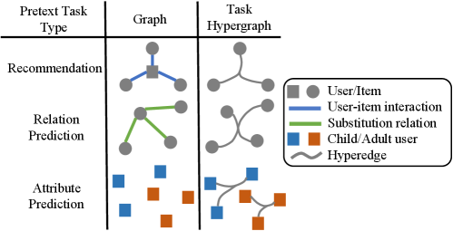
2.4.2. Task Hypergraph Construction
For the purpose of a unified architecture to handle various pretext tasks, we first generalize each pretext task to the format of a corresponding task hypergraph. A toy example is shown in Figure 2.1. Compared to a graph where edges only connect two nodes, the advantage of a hypergraph where hyperedges can simultaneously connect multiple nodes lies in its ability to represent complex relationships. In multitask pretraining, the association among task-related nodes in each pretext task is diverse. Thus, we design a task hypergraph for each pretext task, in order to express these associations in different pretext tasks in a unified format of hyperedges for further hypergraph learning.
Without loss of generality, we categorize all pretext tasks into three types: Recommendation, Relation Prediction, and Attribute Prediction. Then we propose the construction of the hypergraph corresponding to each type as follows:
-
•
Recommendation. Recommendation is to predict an unobserved relation between users and items, including purchasing, clicking, viewing or other user-item interactions. In this case, we let each type of node be the hyperedges to connect the other type of nodes. For example, if multiple users purchase an item, a hyperedge is constructed to connect them simultaneously. Two incident matrices and are used to represent the hyperedge connection in such tasks.
-
•
Relation Prediction. The tasks belonging to this type are to predict an unobserved relation among nodes with the same type, such as whether a substitution relation exists between item nodes. In this type of task, we let the homogeneous relation itself be the hyperedge. For example, items that are substitutions of a target item are connected by a hyperedge. And the incidence matrix for this hypergraph is where represents the number of substitution relations.
-
•
Attribute Prediction. In this type of task, we let each type of attribute be the hyperedge to connect the nodes with such a type of attribute. For example, in a category classification task, items belonging to the same category are connected by one hyperedge. For the attributes whose values are continuous, such as ratings of items, we quantize those values to certain discrete magnitudes. The incidence matrix is denoted by or , where is the number of possible values of the attribute to predict in the task .
Both relation prediction and attribute prediction contain more fine-grained pretext tasks, such as friend recommendation and rating prediction. For all three types of pretext tasks, hyperedges are leveraged to connect homogeneous nodes in our construction of task hypergraphs. In this way, users or items with specific commonalities corresponding to this task are connected by one hyperedge for a certain task. Henceforth, we can effectively capture collaborative signals among users and items from different pretext tasks through hypergraph learning.
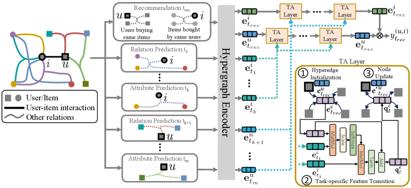
2.4.3. Transitional Attention Layer
To leverage multiple pretext tasks to improve the performance of the target recommendation task, it is important to adaptively learn the degrees of relevance between each auxiliary pretext task and the target recommendation task during pretraining. In this way, the model can identify which tasks provide significant insights that are crucial for the recommendation task. Hence, we propose a Transitional Attention (TA) Layer to ensure that the model allocates appropriate attention to each task based on its relevance, thereby enabling effective knowledge transfer during pretraining. The illustration is in Figure 2.2(b). Next, we present the calculation details of a TA layer that discriminatively transfers knowledge from item-related auxiliary pretext tasks to the recommendation task by pretraining user embeddings. For simplicity, we use to represent the set of item-related auxiliary tasks in this section. And we denote the output user embedding as to distinguish it from the input user embedding only for this section.
Hyperedge Initialization
Following the construction of the task hypergraph for the recommendation task, in Figure 2.2(b)①, we use item hyperedges to connect users and initialize those hyperedges by aggregating users’ preferences as below:
| (2.2) |
where denotes temporary embedding of the hyperedge , is the set of users connected by this hyperedge, and is the embedding of those users as input of the -th TA layer. represents the preferences of users who are connected by this hyperedge.
Task-specific Feature Transition
In this step, we first calculate the attention between the users’ preferences and the task-specific item features from each auxiliary pretext task. Then we generate task-aware hyperedge embeddings accordingly. Inspired by self-attention mechanism [66], the attention is calculated based on the hyperedge embedding and the task-specific item embedding for item from each auxiliary pretext task:
| (2.3) | ||||
where is the task-aware hyperedge embedding. Embeddings and are embeddings of item node in auxiliary pretext tasks and , respectively. Attention represents the attention of the connected users, who are interested in this item, on its certain feature reflected by each task. And is tanh() as the activation function. Next, we fuse with by addition:
| (2.4) |
where is the fused hyperedge embedding, and is a scalar hyper-parameter to control the transition intensity. This step is demonstrated in ② of Figure 2.2(b).
Node update
We update the user embedding by aggregating the fused embeddings from all its connected hyperedges. For a target user , the aggregation step is formulated as follows:
| (2.5) |
where denotes the output user embedding, is the set of hyperedges connected to this user, and is the fused embedding of its connected hyperedges from Eq. (2.4). This step is demonstrated in Figure 2.2(b)③.
TA Layer in Matrix Form
To offer a holistic view, we formulate the matrix form of the transitional attention layer (equivalent to Eqs. (2.2)-(2.5)) as:
| (2.6) | ||||
where is the input embedding from -th layer, is the incidence matrix, denotes task-specific item features from auxiliary pretext tasks, and is the output. is the degree matrix of nodes and is degree matrix of hyperedges. First, we aggregate the preferences of users to the items they are interested in. Next, we calculate the attention to reflect the relevance between the user preferences and the item features related to each task. At last, the task-aware user preferences are aggregated back to each user to support recommendation.
2.4.4. Prediction and Optimization
We conduct prediction and optimization for different tasks depending on their types. For bipartite relation prediction, i.e., the recommendation task, we calculate the ranking score of the user-item pair by the inner product:
| (2.7) |
where and are user and item embeddings output by the last TA layer. We apply the alignment loss [68] to optimize the recommendation:
| (2.8) |
where is the user-item interaction data for pretraining.
For homogenous relation and node attribute prediction, since hyperedges represent relations and attributes, we use the inner product between the node embedding and the corresponding hyperedge embedding as the prediction score:
| (2.9) |
where and are the task-related node embedding and the hyperedge embedding for a specific auxiliary pretext task , as calculated in Eq. (2.1). Then we adopt the pairwise Bayesian Personalized Ranking (BPR) loss [56] to optimize the prediction:
| (2.10) |
where is the pretraining data for each auxiliary pretext task.
Finally, we jointly optimize the recommendation pretext task and the auxiliary pretext tasks as follows:
| (2.11) |
where is all trainable parameters in the framework, which is regularized by , and is a coefficient to balance the loss of recommendation and auxiliary tasks. Adam [33] is chosen as the optimizer.
The trainable parameters of UPRTH are only the initial user and item embeddings, i.e., . In other words, the complexity of encoding task hypergraphs is as the standard matrix factorization [18]. Without additional trainable parameters, the proposed TA layer with the softmax dot-product attention takes . Thus, the model complexity is , which is as efficient as the matrix factorization.
2.5. Experiment
2.5.1. Experimental Setup
Datasets
We conduct experiments on three real-world datasets: XMarket-CN, XMarket-MX, and Steam. XMarket11 1 https://xmrec.github.io/ is a publicly available large-scale dataset obtained from Amazon. We use the data from China and Mexico for our experiments. For these two datasets, XMarket-CN and XMarket-MX, item categories and average rating of items are predicted as node attributes in auxiliary pretext tasks. And items bought together are regarded as items in complementary relations, which are predicted as homogeneous edges. In addition, substitute relations between items compared together are predicted as homogeneous edges for XMarket-MX. Steam [50] includes users’ transaction records on the Steam online game store. Categories, publishers of the games, and groups of users are used for attribute prediction in auxiliary pretext tasks. Friendships among users are predicted as homogeneous edges. The statistics of three datasets are shown in Table 2.1. For Steam and XMarket-CN, we randomly select of user-item interactions for training in both pretraining and finetuning and the remaining for testing in finetuning. For XMarket-MX, the split ratio is for training and for testing.
| Dataset | XMarket-CN | XMarket-MX | Steam |
|---|---|---|---|
| # users | 18,806 | 221,890 | 50,292 |
| # items | 5,937 | 35,235 | 1,809 |
| # user-item edges | 23,065 | 305,569 | 65,379 |
| # auxiliary tasks | 3 | 4 | 4 |
| # node attributes | 11,874 | 70,470 | 215,285 |
| # homogeneous edges | 318 | 8,212 | 6,398 |
Baselines
As UPRTH is a pretraining framework, we compare the performances of graph-based recommendation models with and without using user and item embeddings pretrained by UPRTH, including LGCN [18], GCN [35], DirectAU [68], UltraGCN [45], HGNN [13], HCCF [80] and DHCF [27]. We also compare UPRTH with the following pretraining baselines:
-
•
GCC [53]. This self-supervised pretraining framework leverages contrastive learning with random walks to capture structure information in graphs.
-
•
SGL-PreRec. In SGL-Pre [78], edge drop as data augmentation is used for contrastive learning in pretraining. To further differentiate it from GCC, we jointly pretrain the model via both the contrastive learning task loss and the recommendation task.
-
•
AttriMask [23]. This method applies GNN to obtained node embeddings and then adds a linear model to predict masked attributes during pretraining.
In finetuning of pretraining baselines and UPRTH, we deploy one hypergraph convolution layer to encode user and item embeddings on the hypergraph of the recommendation task, and use BPR loss for optimization. Our source code and the three datasets are released online 22 2 https://github.com/mdyfrank/UPRTH.
| Dataset | XMarket-CN | XMarket-MX | Steam | |||||||||
|---|---|---|---|---|---|---|---|---|---|---|---|---|
| Metric | R@10 | R@20 | N@10 | N@20 | R@10 | R@20 | N@10 | N@20 | R@10 | R@20 | N@10 | N@20 |
| LightGCN | 0.0036 | 0.0068 | 0.0015 | 0.0024 | 0.0123 | 0.0181 | 0.0073 | 0.0089 | 0.0715 | 0.1075 | 0.0358 | 0.0448 |
| DirectAU | 0.0030 | 0.0040 | 0.0014 | 0.0017 | 0.0098 | 0.0160 | 0.0055 | 0.0072 | 0.0574 | 0.0860 | 0.0290 | 0.0362 |
| UltraGCN | 0.0031 | 0.0053 | 0.0017 | 0.0023 | 0.0017 | 0.0026 | 0.0009 | 0.0011 | 0.0416 | 0.0787 | 0.0206 | 0.0299 |
| HGNN | 0.0061 | 0.0074 | 0.0029 | 0.0033 | 0.0095 | 0.0154 | 0.0046 | 0.0062 | 0.0780 | 0.1104 | 0.0418 | 0.0502 |
| HCCF | 0.0023 | 0.0038 | 0.0008 | 0.0012 | 0.0077 | 0.0122 | 0.0043 | 0.0055 | 0.0976 | 0.1453 | 0.0489 | 0.0609 |
| DHCF | 0.0033 | 0.0047 | 0.0022 | 0.0026 | 0.0139 | 0.0230 | 0.0073 | 0.0097 | 0.1214 | 0.1959 | 0.0566 | 0.0753 |
| GCC | 0.0112 | 0.0177 | 0.0068 | 0.0086 | 0.0229 | 0.0318 | 0.0146 | 0.0169 | 0.1147 | 0.1833 | 0.0565 | 0.0738 |
| SGL-PreRec | 0.0036 | 0.0079 | 0.0014 | 0.0025 | 0.0102 | 0.0153 | 0.0058 | 0.0071 | 0.1120 | 0.1796 | 0.0537 | 0.0708 |
| AttriMask | 0.0387 | 0.0693 | 0.0179 | 0.0261 | 0.0500 | 0.0748 | 0.0261 | 0.0327 | 0.1398 | 0.2247 | 0.0714 | 0.0929 |
| UPRTH | 0.0801 | 0.1093 | 0.0428 | 0.0506 | 0.0822 | 0.0966 | 0.0574 | 0.0612 | 0.1721 | 0.2704 | 0.0841 | 0.1088 |
| Improv. | 106.98% | 57.72% | 139.11% | 93.87% | 64.40% | 29.14% | 119.92% | 87.16% | 13.07% | 23.10% | 17.79% | 17.12% |
Evaluation Metrics
We evaluate the pretraining framework by ranking the test items with all non-interacted users during finetuning. Recall and NDCG are adopted as evaluation metrics.
2.5.2. Overall Performance Comparison
We show overall comparison results in Table 2.2. The best and second-best results are in boldface and underlined respectively. We summarize the following key observations:
-
•
The proposed UPRTH framework achieves the best results and outperforms all the baseline pretraining frameworks in the three datasets. We hypothesize these large stable gains result from the abundant and balanced contextual information learned from unified pretext tasks.
-
•
Pretraining frameworks achieve better performance than recommendation models without pretraining in most cases. However, pretraining based on only user-item interactions sometimes degrades the performance. Besides sparse data providing limited prior knowledge during pretraining, we believe that overfitting caused by optimizing the same recommendation objective in both pretraining and finetuning also leads to performance degradation.
-
•
Among the three baseline pretraining frameworks, AttriMask which additionally considers attributes in pretraining is better than GCC and SGL-PreRec in all datasets. This justifies the necessity of capturing contextual cues besides user-item interactions in pretraining. Compared with it, UPRTH realizes unification across various pretext tasks so it obtains the capacity to transfer knowledge from a wider range of tasks in pretraining, which is a more comprehensive framework.
| Dataset | XMarket-CN | XMarket-MX | Steam | |||
|---|---|---|---|---|---|---|
| Metric | R@10 | N@10 | R@10 | N@10 | R@10 | N@10 |
| LightGCN | 0.0036 | 0.0015 | 0.0123 | 0.0073 | 0.0715 | 0.0358 |
| +UPRTH | 0.0679 | 0.0393 | 0.0680 | 0.0407 | 0.1522 | 0.0740 |
| DirectAU | 0.0030 | 0.0014 | 0.0098 | 0.0055 | 0.0574 | 0.0290 |
| +UPRTH | 0.0612 | 0.0352 | 0.0714 | 0.0490 | 0.1473 | 0.0727 |
| UltraGCN | 0.0031 | 0.0017 | 0.0017 | 0.0009 | 0.0416 | 0.0206 |
| +UPRTH | 0.0607 | 0.0412 | 0.0644 | 0.0383 | 0.1049 | 0.0460 |
| HGNN | 0.0061 | 0.0029 | 0.0095 | 0.0046 | 0.0780 | 0.0418 |
| +UPRTH | 0.0510 | 0.0264 | 0.0411 | 0.0195 | 0.0951 | 0.0475 |
| HCCF | 0.0023 | 0.0008 | 0.0077 | 0.0043 | 0.0976 | 0.0489 |
| +UPRTH | 0.0341 | 0.0223 | 0.0376 | 0.0234 | 0.1143 | 0.0556 |
| DHCF | 0.0033 | 0.0022 | 0.0139 | 0.0073 | 0.1214 | 0.0566 |
| +UPRTH | 0.0562 | 0.0322 | 0.0382 | 0.0220 | 0.1408 | 0.0625 |
Next, we show the performance of baseline recommendation models with and without leveraging pretrained embeddings from UPRTH in Table 2.3. The results indicate that all recommendation models benefit from embeddings pretrained by UPRTH, especially in the XMarket-CN and XMarket-MX datasets with sparser user-item interactions. It indicates our framework with high generalization can adapt well to various downstream recommendation models, showing robustness and flexibility in its pretrained embeddings. The benefit on sparse datasets reflects that unified multitask pretraining efficiently addresses the issue of data sparsity in the recommendation task.
2.5.3. Ablation Study
Unification on Pretext Tasks.
We compare the performance of UPRTH and its variant without unified pretext tasks on the three datasets in Figure 2.3. In the variant Without unified pretext tasks, relations are still predicted as hyperedges in relation prediction tasks, but attributes are predicted via applying one linear layer followed by a softmax activation function on node embeddings output by hypergraph encoders. We can observe that the performance is consistently improved by a unified pretraining framework on all three datasets. We attribute this improvement to the complete transfer of prior knowledge from our unified multitask pretraining. Given that no linear transformation is included in hypergraph encoders, and the prediction of hyperedges is directly calculated based on the node embeddings, prior knowledge from a pretext task is completely preserved in node embeddings and transferred to the downstream recommendation task. Thus, we believe UPRTH is a concise and efficient design to unify pretext tasks.
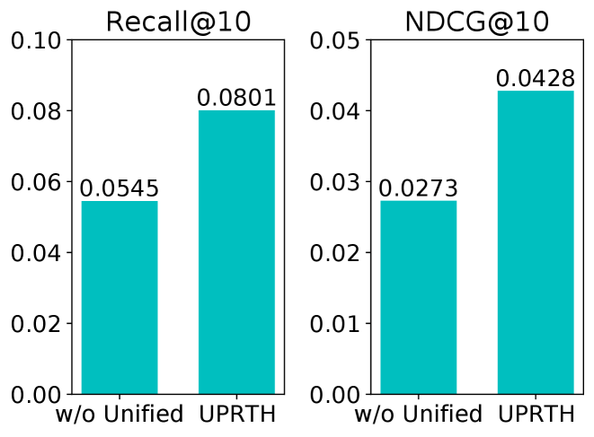
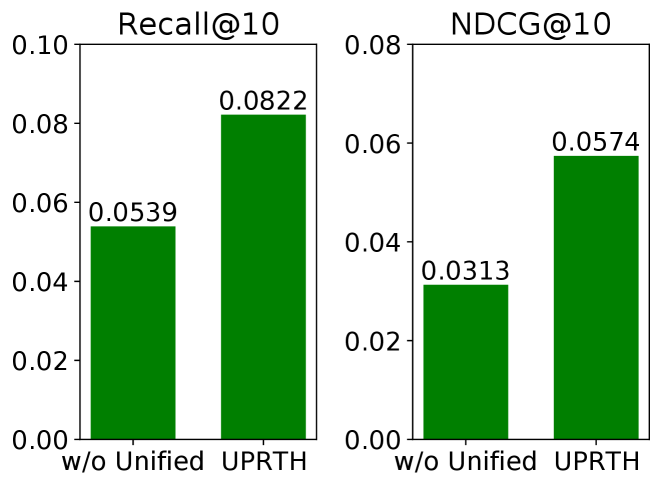
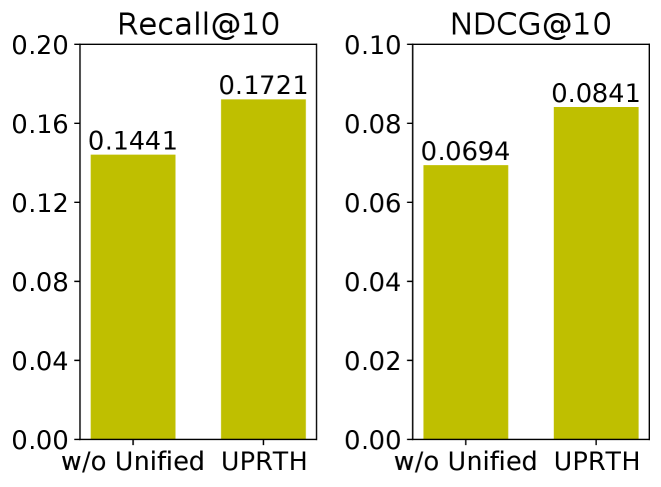
Transitional Attention Layer Settings.
To verify the effectiveness of TA, we demonstrate the performance of UPRTH and three other variants in Table 2.4: (a) UH w/o TA. In this setting, embeddings output by hypergraph encoders are directly used to calculate ranking scores of user-item pairs; (b) UH-sum. Instead of calculating the attention of the hyperedge embedding on node embeddings from different auxiliary tasks, the sum of the hyperedge embedding and those node embeddings are used as the fused hyperedge embedding for further node update; (c) UH-concat. Same as UPRTH-sum, but we concatenate node embeddings from different auxiliary tasks and transform it to an embedding whose dimension is the same as the hyperedge embedding by a linear layer, and then add it to the hyperedge embedding as the fused hyperedge embedding.
We observe that UPRTH performs the best on three datasets. This justifies the superiority of UPRTH with TA layers which discriminatively integrates information from auxiliary tasks to recommendation. The poor performance of UH-concat verifies the negative impact brought by the additional linear transformation in pretraining. UH-sum performs better than UH w/o TA in three datasets, which indicates the necessity of considering contextual information from other tasks in the pretext recommendation task. However, UH-sum ignores the different relevance between each auxiliary task and recommendation, so it is worse than UPRTH.
| Dataset | XMarket-CN | XMarket-MX | Steam | |||
|---|---|---|---|---|---|---|
| Metric | R@10 | N@10 | R@10 | N@10 | R@10 | N@10 |
| UH w/o TA | 0.0744 | 0.0411 | 0.0798 | 0.0548 | 0.1645 | 0.0795 |
| UH-sum | 0.0770 | 0.0413 | 0.0818 | 0.0547 | 0.1690 | 0.0825 |
| UH-concat | 0.0800 | 0.0424 | 0.0796 | 0.0470 | 0.1235 | 0.0599 |
| UPRTH | 0.0801 | 0.0428 | 0.0822 | 0.0574 | 0.1721 | 0.0841 |
2.5.4. Pretraining and Finetuning Loss Analysis
As aforementioned, UPRTH applies alignment loss in pretraining and BPR loss in finetuning to optimize the recommendation task. We further investigate different combinations of loss for pretraining and finetuning stages. In addition, we try AU loss [68] which optimizes both alignment and uniformity, and BPR loss which only optimizes for positive instead of both positive and negative pairs in BPR loss. The performances are shown in Table 2.5. We observe that using two different loss functions for pretraining and finetuning improves performance in most cases, since the same loss functions increase the risk of overfitting. Moreover, the results show that employing BPR loss in finetuning is better than in pretraining. We believe that exposing different pretext tasks to different objective functions results in more robust pretrained representations for downstream tasks.
| Dataset | XMarket-CN | XMarket-MX | Steam | |||
|---|---|---|---|---|---|---|
| , | R@10 | N@10 | R@10 | N@10 | R@10 | N@10 |
| (BPR, BPR) | 0.0527 | 0.0284 | 0.0707 | 0.0439 | 0.1053 | 0.0527 |
| (BPR, BPR) | 0.0231 | 0.0114 | 0.0632 | 0.0354 | 0.1106 | 0.0564 |
| (AU, AU) | 0.0460 | 0.0238 | 0.0159 | 0.0084 | 0.1152 | 0.0568 |
| (Align., Align.) | 0.0373 | 0.0237 | 0.0110 | 0.0059 | 0.0180 | 0.0069 |
| (BPR, BPR) | 0.0519 | 0.0283 | 0.0633 | 0.0384 | 0.1205 | 0.0601 |
| (BPR, AU) | 0.0574 | 0.0284 | 0.0643 | 0.0407 | 0.1158 | 0.0575 |
| (BPR, Align.) | 0.0575 | 0.0281 | 0.0317 | 0.0125 | 0.1062 | 0.0543 |
| (BPR, BPR) | 0.0623 | 0.0301 | 0.0704 | 0.0419 | 0.1338 | 0.0669 |
| (AU, BPR) | 0.0623 | 0.0346 | 0.0712 | 0.0418 | 0.1075 | 0.0545 |
| (Align., BPR) | 0.0801 | 0.0427 | 0.0822 | 0.0579 | 0.1721 | 0.0795 |
2.5.5. Cold-start Recommendation
As an inductive framework, UPRTH has the capability of handling the cold-start problem by leveraging contextual information from auxiliary tasks. We conduct an analysis regarding the ability of UPRTH to tackle users who have no historical user-item interactions in both pretraining and finetuning. We randomly select a certain ratio of user nodes as cold-start users and remove all user-item edges connected to them. The embeddings of cold-start users are obtained by feeding them with the removed edges to the downstream encoder during only inference. For comparison, we report testing recall of UPRTH, AttriMask and UPRTH without auxiliary pretext tasks. The results are shown in Figure 2.4.
We observe that UPRTH and AttriMask perform better than UPRTH without auxiliary tasks, which verifies the significance of contextual information from multitask pretraining in cold-start recommendation. UPRTH outperforms AttriMask in most cases since more diverse contextual cues are captured for recommending items to cold-start users by unified multitask pretraining. Additionally, we observe that sometimes the performance on cold-start users is even better than the average performance on all users shown in Table 2.2, such as cold-start user ratio in Steam dataset. We hypothesize that when cold-start users are pretrained with only social relations, such as user-user and user-group hyperedges, UPRTH can well leverage user similarity for recommendation without the noise in the user-item interaction information.
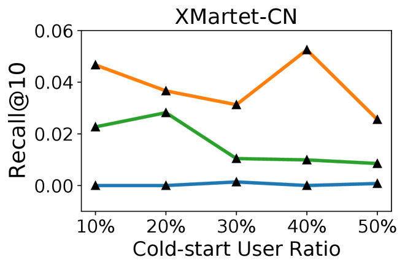
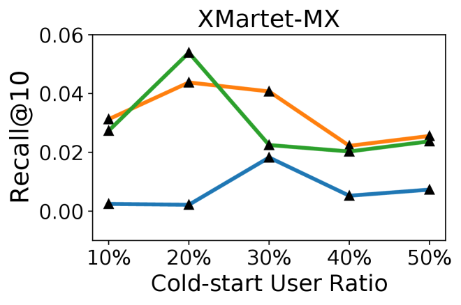
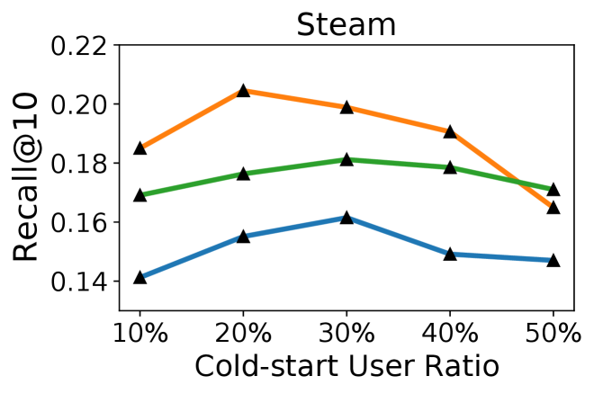
2.5.6. Performance Curves Analysis
To verify that the pretrained embeddings with prior knowledge transferred from various pretext tasks can benefit downstream recommendation, we conduct analyses of testing performance curves with and without embeddings pretrained by UPRTH. For the downstream model, we choose the one-layer hypergraph convolution encoder used in UPRTH, denoted as HyperConv, with BPR loss for recommendation. Performances of SGL-PreRec, GCC and AttriMask are shown for comparison. The result indicates that UPRTH and AttriMask, which leverage contextual information besides user-item interactions from pretraining, outperform the other baselines. Compared with AttriMask, UPRTH discriminatively learns from various pretext tasks with a unified multitask framework, leading to more comprehensive and informative pretrained embeddings for downstream recommendation.
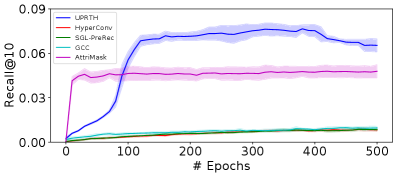
2.6. Chapter Summary
In this chapter, we present Unified Pretraining for Recommendation via Task Hypergraphs (UPRTH), a hypergraph-based pretraining framework for recommendation. UPRTH models diverse pretext tasks as hyperedge prediction problems within a unified task hypergraph, enabling the integration of heterogeneous relational signals into a shared structural representation. Through hypergraph learning, the framework captures higher-order relations and transfers prior knowledge to the downstream recommendation task. In addition, a Transitional Attention (TA) layer is designed to adaptively learn the relevance between auxiliary tasks and the target recommendation objective during pretraining. Extensive experiments on three benchmark datasets demonstrate the effectiveness and robustness of UPRTH.
Moreover, this chapter establishes hypergraph learning as a flexible foundation for modeling complex relations in recommendation. The flexibility of hyperedge construction and information propagation further opens the door to incorporating semantic knowledge beyond structural signals. In the next chapter, we extend this framework by introducing plain-text prompts that explicitly describe task semantics and domain connections, and encode them with a pretrained language model to guide hypergraph pretraining for cross-domain recommendation.
Chapter 3 Hypergraph Pretraining Guided by Text Prompt with PLM
(This chapter was previously published as “Instruction-based Hypergraph Pretraining” [88] in Proceedings of the 47th International ACM SIGIR Conference on Research and Development in Information Retrieval, pp. 501 - 511. 2024. [doi:10.1145/3626772.3657715])
3.1. Introduction
The burgeoning field of graph-based deep learning has witnessed remarkable advancements, with applications spanning diverse domains such as social networks, bioinformatics, and RecSys. GNNs have emerged as powerful tools for capturing intricate relationships and dependencies within graph-structured datasets. To transfer knowledge from large and diverse datasets to a downstream task with limited data, pretraining has been widely explored to augment the adaptability of GNNs [24, 53]. However, pretraining also presents several critical issues. Self-supervised learning for pretraining graph models [53, 23] addresses the lack of labeled data in the pretext stage, but the training objective gap between the constructed pretext and dedicated downstream tasks hinders the efficient transfer of pretrained knowledge [63]. Moreover, when labeled data is available during the pretraining stage, the data distribution discrepancy between pretraining and downstream datasets degrades the performance [71]. In addition, pretrained can suffer from catastrophic forgetting [104], resulting in poor generalization ability, especially within small-scale downstream datasets.
Prompt learning, which has been prevalently engaged in Pretrained Language Models (PLMs) [39, 3], has shown remarkable success in dealing with the aforementioned pertaining issues. Nonetheless, it is far from straightforward to apply prompts in graphs. In contrast with PLMs, the format of instructions as plain text does not naturally align with the graph-structure data. On the one hand, from a static perspective, graph prompts are supposed to be applied for a certain part of the graph to guide the model depending on specific graph queries. Some specific tasks, such as group identification, can correspond to a relationship among multiple entities. However, traditional graphs are limited in their ability to represent complex relationships, as each edge can only connect two nodes. On the other hand, from a dynamic perspective, prompts need to participate in the context-aware information propagation of the graph model to help capture contextual dependencies among relationships and entities. Nevertheless, dyadic edges in traditional graphs can only propagate information through simple pairwise relationships, which is neither flexible nor efficient. Therefore, we believe that the hypergraph, where each hyperedge is able to connect multiple nodes [13, 103] simultaneously, is a better structure for prompt-based pretraining in graph-based tasks.
However, it is challenging to design the prompt for hypergraph pertaining. Most pioneering works in prompt-based graph pretraining design prompt functions with learnable prompt vectors, which are initialized randomly [64, 41] or based on pretrained node representations [63]. Such prompts are not related to semantic instructions for specific tasks, and the effectiveness heavily depends on the quality and diversity of the finetuning data in downstream tasks. The learnable prompt vectors can bring uncertainty in outcomes and the risk of poor generalization, particularly when finetuning data is biased or scarce. In addition, most previous works freeze all parameters except learnable prompts during downstream tasks [64, 41, 63]. However, this paradigm is suboptimal if abundant unseen nodes appear in the downstream task. The frozen nodes pretrained by pretext tasks cannot offer a direct reference to represent unseen nodes in the downstream task, and the uncertainty from learnable prompts can be exacerbated with those unseen data. These limitations hinder the implementation of these pretraining frameworks in graph-based applications, given that new nodes frequently appear in dynamically evolving graph structures such as social networks, biological networks, and RecSys.
In light of the above limitations in the existing prompt learning methods for graph-based tasks, it is necessary to design prompts that can provide explicit guidance to the model, helping it focus on specific aspects of the task. To this end, instruction-based prompts represent a more advantageous solution [61, 3, 65]. Such prompts guide the model through explicit instructions, which are able to accurately describe specific task requirements related to graph data. By training the model with a variety of instructions, it can adapt to different graph-related queries, improving its generalization across a range of scenarios. In the situation with biased or scarce data, compared to learnable prompts which may overfit the limited examples, instructions allow for the incorporation of domain-specific knowledge that might not be present in the data itself. Instruction-based prompts are also beneficial for addressing unseen nodes in downstream tasks. Rather than relying solely on previously seen examples, text-based instructions provide side information on the new nodes appearing in the graph. Meanwhile, this adaptation to the unseen graph structure requires no extensive computational resources for re-training prompts.
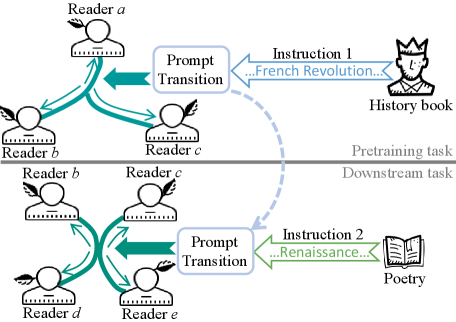
In this paper, we propose a novel framework called Instruction-based Hypergraph Pretraining (IHP). In this framework, high-order relations are represented as hyperedges, and the dependencies among nodes are captured under the guidance of instructions. We show an example of how to integrate instructions into hypergraph pretraining in Fig. 3.1. If three history enthusiasts read a history book about the French Revolution, we can use one hyperedge to connect them and prompt the hyperedge with instruction through pertaining. In the following downstream task of promoting poetry from the Renaissance period to readers, the model can accordingly locate the readers similar to these three history enthusiasts as the target audiences according to the instruction. To learn node representations under the guidance of instructions, we design a Prompt Hypergraph Convolution (PHC) layer. This PHC layer endows the framework with the ability to be prompted by text-based instructions through hyperedges. Within the hypergraph learning framework, each task-related instruction transformed into prompts is precisely directed to the respective nodes interconnected by the hyperedge. Participating in hypergraph learning, instructions enable the framework to capture high-order relations with task information in a context-aware manner. Furthermore, we design an instruction-based finetuning paradigm. In the downstream task, we freeze the prompt transformation process and update the representations of seen and unseen nodes according to the instructions, ensuring that relationships among nodes are captured in the context of the overall graph. Node representations are updated with different adaptation intensities to achieve a balance between retraining prior knowledge and adapting efficiently for downstream tasks. The main contributions of this work are summarized as follows.
-
•
We design a novel instruction-based pretraining framework based on hypergraphs. To the best of our knowledge, this is the first pretraining framework to leverage instructions to capture high-order relations for graph tasks like cross-domain recommendation.
-
•
We proposed a novel PHC layer to prompt text-based instructions into hyperedges. This PHC layer allows instruction information to participate in information propagation during hypergraph convolution, enhancing the flexibility of the hypergraph learning and the generalization of the pretrained model.
-
•
We conduct extensive experiments on three real-world datasets. The marked enhancement observed in the performance of IHP underscores its preeminence.
3.2. Problem Formulation
Let the graph for the pretraining task be where and are sets of nodes and edges, respectively. Similarly, let the graph for the downstream task be , and the two instruction sets be and for the pretraining task and the downstream task. Our target is to pretrain the representations of the overlapping nodes, which are defined as target nodes . Given the target node set , we define the nodes other than target nodes in the pretraining task as pretraining context nodes in the pretraining task, and the unseen nodes in the downstream task as downstream context nodes .
Although the proposed framework is applicable to general graph learning tasks, we focus on the recommendation scenario in this thesis. Under a cross-domain recommendation setting, the target nodes correspond to the overlapping users shared across domains, while the context nodes represent domain-specific items. Specifically, denotes source-domain items used during pretraining, and denotes target-domain items introduced during finetuning. We further denote the textual descriptions of source-domain items and target-domain items as and , respectively, and use to represent domain-related task descriptions. Our objective is to pretrain user representations by modeling their interactions with source-domain items, and subsequently adapt these representations through finetuning on target-domain items to achieve accurate recommendation performance in the downstream task.
3.3. Proposed framework: IHP
In this section, we present the proposed IHP framework with the illustration demonstrated in Figure 3.2. We start by introducing all the embeddings to be pretrained in this framework. Thereafter, we define two types of hypergraphs and explain how to construct corresponding hyperedges in these hypergraphs. Specifically, we adopt a PHC layer to prompt instructions into hyperedges during hypergraph learning in the pretraining and fine-tuning stages. We apply an instruction-based finetuning paradigm to update both seen and unseen nodes in the downstream task.
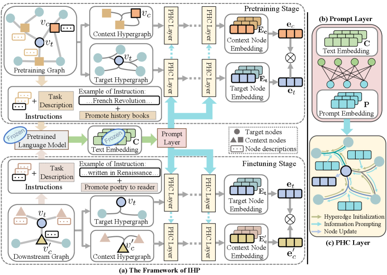
3.3.1. Embedding Layer
We maintain an embedding layer during pretraining, where is the feature dimension and columns represent all trainable node embeddings. The initial target node embeddings are denoted as , and the initial context node embeddings are denoted as . Since target nodes exist in pretraining and downstream tasks, prior knowledge learned from the pretraining tasks can be preserved in and then leveraged in the downstream tasks.
3.3.2. Hypergraph Construction
We construct the target hypergraph and the context hypergraph based on the original graph. Compared to a graph where edges only connect two nodes, the advantage of a hypergraph is that hyperedges can simultaneously connect multiple nodes as the objectives of an instruction. According to the type of nodes in the graph, we construct two hypergraphs based on four basic types of hyperedges as below:
-
•
Target Hypergraph. The target hypergraph consists of target nodes and hyperedges . Each target-target hyperedge is used to connect a target node with its one-hop target node neighbors. For each group of target nodes connected to one context node, a target-context hyperedge is used to connect them in the hypergraph. Its incidence matrix is denoted as .
-
•
Context Hypergraph. Similar to the target hypergraph, the context hypergraph consists of context nodes and hyperedges . Each context-context hyperedge is used to connect a context node with its one-hop context node neighbors. A context-target hyperedge is used to connect each group of context nodes to one target node simultaneously in the hypergraph. Its incidence matrix is denoted as .
In other words, we use the two hypergraphs to ensure the distinction between the target nodes and the context nodes. In this way, the framework can learn from the homogeneity of target nodes and context nodes in a discriminative manner during the following hypergraph pretraining. On the one hand, the information from pretraining is preserved in the target node embeddings and directly transferred to the downstream task. On the other hand, although context nodes are not in the downstream task, they provide the necessary information for the model to capture broader contextual patterns that are not limited to the nodes seen during the downstream task. The relation between target nodes can depend on the similarity among context nodes in pretraining, which is reflected by the context hypergraph.
Similarly, a target hypergraph and a context hypergraph are defined for the downstream task with their corresponding incidence matrices and . For pretraining and downstream tasks, the isolation between the two hypergraphs separates the information propagation paths. In this way, the information of context nodes will not be directly aggregated to the target nodes through hyperedges in hypergraph learning, and vice versa. This design prevents the over-smoothing issue [1, 32] among target and context nodes, preventing the representations of target nodes from converging to the same values, especially within dense graph data.
3.3.3. Prompt Hypergraph Convolution
In hypergraph learning, hypergraph convolution is prevalently used for information propagation across nodes in hypergraphs. Nonetheless, current hypergraph convolution methods focus on the direct aggregation of structural information from neighbors connected by hyperedge. To integrate the information from instructions into the hypergraph convolution process, we devise a novel Prompt Hypergraph Convolution layer. First, we construct the hyperedge information based on connected nodes. This step is denoted as hyperedge initialization of the PHC layer. Then, a information prompting step is proposed to endow the fusion of hyperedge information from resources other than the hypergraph structure, such as instructions. Finally, fused information is aggregated to update the node embeddings in the node update step. To be more concrete, we present the calculation details of a PHC layer in the target hypergraph. The illustration is in Figure 3.2(c).
Hyperedge Initialization
In the target hypergraph , target nodes are connected by target-target and target-context hyperedges. Therefore, we initialize the representation of a hyperedge by aggregating embeddings of all nodes connected by this hyperedge. The initialized representation of a hyperedge is formulated as follows:
| (3.1) |
where represents initialized embedding of the hyperedge , is the set of target nodes connected by this hyperedge, and is the embedding of those target nodes as input of the -th PHC layer. We use mean-pooling as the information aggregation method to aggregate structural information from nodes to hyperedges.
Information Prompting
To enable the framework to capture high-order relations under the guidance of instructions during hypergraph convolution, we fuse the initialized representation of a hyperedge with prompted information. With the prompt embedding of a hyperedge denoted as , we fuse with by addition:
| (3.2) |
where is the fused hyperedge embedding, and is a scalar hyperparameter to control the prompting intensity.
With instructions accessible, the prompt embedding can be obtained based on text information from instructions, as shown in Figure 3.2(b) and 3.2(c). If the instruction information is not available, the flexibility of this PHC layer allows other information to be prompted to the hyperedge. For example, a context-target hyperedge in the context hypergraph is converted from a target node. Hence, we can adopt prompt embeddings from the target node embeddings for a context hypergraph without instructions, i.e., , as shown in Figure 3.2(a). The target node embeddings are output by the -th PHC layer applied on the target hypergraph, after node update in Eq. (3.3).
Node update
We update the target node embedding by aggregating the fused embeddings from all its connected hyperedges. For a target node , the aggregation step is formulated as follows:
| (3.3) |
where denotes the output target node embedding, is the set of hyperedges connected to this target node, and is the fused embedding of its connected hyperedges from Eq. (3.2).
PHC in Matrix Form
To offer a holistic view of convolution, we formulate the matrix form of prompt hypergraph convolution (equivalent to Eq. (3.1)-(3.3)) as:
| (3.4) | ||||
where is the input embedding from -th layer, is the incidence matrix, denotes prompt embeddings for the hyperedges in the hypergraph, and is the output. is the degree matrix of nodes and is degree matrix of hyperedges for normalization. PHC layer is a more general version of hypergraph convolution, which degrades to existing hypergraph convolution [95] with prompting intensity .
3.3.4. Instruction-based Prompt Embedding
To provide explicit guidance for hypergraph learning, instruction-based prompt embeddings are constructed based on available task-related information and fed into the PHC layer for further information propagation. Each instruction is expected to assist in capturing the relationship between the nodes connected by one hyperedge. Hence, the instructions and the formulated hyperedges are designed in one-to-one correspondence. Instructions can be formulated from task descriptions, node descriptions, or a concatenation of both.
We show an example of leveraging the concatenation of task and node descriptions as instructions in Figure 3.2. Given that target-context hyperedges are context nodes in the original graph, we concatenate the node descriptions and the descriptions of tasks related to these nodes as instructions , where . In this paper, descriptions of context nodes are obtained from the dataset, and the task descriptions are manually created for different tasks. For instance, if target nodes are readers and context nodes are history books in pretraining, the task description can be formulated as ’promote history books to readers.’
After the construction of instructions, a pretrained sentence transformer [73] is deployed to encode the instructions as text embeddings , which are frozen in both pretraining and downstream tasks. A linear layer is applied to adaptively learn the transformation from text embeddings to prompt embeddings:
| (3.5) |
where and are the learnable weight matrix and bias for prompt transformation. And is the output prompt embedding, which prompts the target-context hyperedges with instruction information in every PHC layer for the target hypergraph.
3.3.5. Pretraining and Optimization
Prediction and optimization
We use the inner product of two nodes as the link prediction score. For example, in Figure 3.2(a), the link prediction score between a target node and a context node in pretraining is formulated as:
| (3.6) |
where and are the final embeddings of the target node and the context node after PHC layers. We remove the superscripts for simplicity. Then, we adopt the pairwise BPR loss [56] to optimize the prediction:
| (3.7) |
where is the training data, and positive set contains all nodes connected to node . All parameters in the pretraining is regularized by . Adam [33] is used as the optimizer.
Instruction-based finetuning
The output of the pretraining stage is the optimal target node embeddings and all parameters in the prompt layer. This pretrained parameter is used to initialize the target nodes and prompt layer in the downstream task. In the downstream task, we freeze in the prompt transformation and further finetune the embeddings of pretrained target nodes and unseen context nodes with downstream instructions. The reasons are twofold. Firstly, freezing this transformation ensures that the model responds to instructions consistently in both pretext and downstream tasks. Since the task-related information is inherently encapsulated in instructions, it is unnecessary to finetune the transformation for learning the task-related information. Second, updating the unseen context nodes with the pretrained target nodes ensures that their features and relationships are captured in the context of the overall graph. This allows for dynamic adaptation of node representations to the specific context of the downstream task, guaranteeing that all nodes are represented according to the downstream instructions.
To address the catastrophic forgetting issue in finetuning, we deploy an adaptation intensity coefficient for the learning rate of target node embeddings. We denote the learning rate of context node embeddings denoted as and set . A lower learning rate for target nodes prevents the framework from forgetting the prior knowledge preserved in the target node embeddings. In this way, the pretrained model achieves a balance between retraining prior knowledge and effectively adapting to downstream tasks.
Efficiency
Our framework is efficient in both space and time complexity. Node embeddings , prompt transformation matrix and prompt transformation bias are the only learnable parameters in IHP. Given the size of pretrained text embeddings as for pretraining and for finetuning, the total space complexity is for pretraining and for finetuning, where . The time complexity depends on the interaction between hyperedges and nodes and the number of PHC layers . For the four types of hyperedges constructed in IHP, the number of interactions is for pretraining and for fine-tuning. Therefore, the time complexity is only for pretraining and for finetuning, where . In contrast, a typical graph model GCN [35] needs time with nodes and edges.
| Dataset | Goodreads-P | Goodreads-H | Amazon |
|---|---|---|---|
| # nodes | 69,511 | 220,704 | 362,900 |
| # edges | 370,326 | 1,673,926 | 726,531 |
| # target nodes | 10,000 | 10,000 | 22,899 |
| # pretrained nodes | 52,698 | 163,752 | 342,738 |
| # pretrained edges | 271,344 | 1,407,108 | 665,695 |
| # node descriptions | 59,511 | 210,704 | 340,001 |
| Dataset | Goodreads-P | Goodreads-H | Amazon | |||||||||
|---|---|---|---|---|---|---|---|---|---|---|---|---|
| Metric | R@10 | R@20 | N@10 | N@20 | R@10 | R@20 | N@10 | N@20 | R@10 | R@20 | N@10 | N@20 |
| LightGCN | 0.2427 | 0.2958 | 0.1684 | 0.1846 | 0.0956 | 0.1111 | 0.0818 | 0.0869 | 0.0661 | 0.0828 | 0.0497 | 0.0545 |
| SGL | 0.2365 | 0.2935 | 0.1637 | 0.1808 | 0.0960 | 0.1108 | 0.0810 | 0.0856 | 0.0683 | 0.0812 | 0.0494 | 0.0530 |
| DirectAU | 0.2106 | 0.3152 | 0.1721 | 0.2011 | 0.0933 | 0.1084 | 0.0807 | 0.0861 | 0.0689 | 0.0808 | 0.0599 | 0.0630 |
| HCCF | 0.2427 | 0.3175 | 0.1884 | 0.2092 | 0.0721 | 0.1062 | 0.0603 | 0.0735 | 0.0682 | 0.0809 | 0.0605 | 0.0639 |
| DHCF | 0.2440 | 0.2995 | 0.1702 | 0.1846 | 0.0735 | 0.0919 | 0.0569 | 0.0636 | 0.0299 | 0.0399 | 0.0177 | 0.0207 |
| GraphFormers | 0.2147 | 0.2770 | 0.1388 | 0.1583 | 0.0889 | 0.1187 | 0.0757 | 0.0854 | 0.0401 | 0.0496 | 0.0285 | 0.0313 |
| AttriMask | - | - | - | - | 0.0640 | 0.0960 | 0.0489 | 0.0600 | 0.0741 | 0.0871 | 0.0633 | 0.0670 |
| GCC | 0.2585 | 0.3185 | 0.1933 | 0.2117 | 0.0623 | 0.0947 | 0.0465 | 0.0584 | 0.0749 | 0.0905 | 0.0611 | 0.0656 |
| GraphMAE | 0.2574 | 0.3220 | 0.1984 | 0.2178 | 0.0678 | 0.1020 | 0.0557 | 0.0678 | 0.0768 | 0.0920 | 0.0585 | 0.0627 |
| IHP | 0.2782 | 0.3380 | 0.2189 | 0.2351 | 0.1032 | 0.1319 | 0.0915 | 0.1005 | 0.0814 | 0.0980 | 0.0692 | 0.0738 |
| Improv. | 7.63% | 4.99% | 10.31% | 7.93% | 7.49% | 11.07% | 11.77% | 15.71% | 5.97% | 6.59% | 9.29% | 10.17% |
3.4. Experiment
3.4.1. Experimental Setup
Datasets
We conduct experiments on three real-world datasets: Goodreads-P, Goodreads-H, and Amazon. Goodreads is a publicly available large-scale dataset including information about online readers and books on their shelves [67]. We regard online readers as the target nodes for the two Goodreads datasets. For Goodreads-P, poetry books are used as context nodes for pretraining, and comics are used as downstream context nodes. For Goodreads-H, history books, and biographies are downstream context nodes, while pretraining context nodes contain books in the categories of children, young adults, mystery, thriller, and crime. Amazon includes users and items purchased by them [47]. Users are regarded as target nodes, and instruments are used as context nodes in the downstream task. For pretraining in Amazon, context nodes are items in the categories of arts, crafts, sewing, grocery, gourmet food, office products, electronics, sports, outdoors, toys, and games. The main statistics of the three datasets are summarized in Table 3.1. We split of edges for training and the remaining for testing.
Baselines
We regard users as target nodes and items as context nodes in all the datasets. Thus recommendation methods, including LightGCN [18], SGL [78], HCCF [80] and DHCF [27], are applied as strong baselines to prediction interactions between users and items, besides baseline models designed for general graph tasks, such as DirectAU [68] and GraphFormers [84]. As a pretraining framework, we also compare IHP with the following pretraining baselines:
-
•
AttriMask [23]. This method applies GNN to obtained node embeddings and then adds a linear model to predict masked attributes during pretraining. We use node categories as the masked attributes, so it is not suitable for Goodreads-P, where all pretraining nodes are comics.
-
•
GCC [53]. This self-supervised pretraining framework leverages contrastive learning with random walks to capture structure information in graphs.
-
•
GraphMAE [22]. This method applies a masked graph autoencoder for generative self-supervised graph pretraining.
For the pretraining baselines, we use the same finetuning stage as IHP, which is shown in Figure 3.2(a), with no instructions and instruction prompting intensity .
Evaluation metric
We evaluate the pretraining framework by ranking the test downstream items with all non-interacted users during finetuning. Recall and NDCG are adopted as evaluation metrics.
Implementations
For all the datasets, the pretraining learning rate is set to . The regularization parameter is set to 1e-7. The node embedding size is set to 64. The learning rate to finetune context nodes is set to 0.1 for the two Goodreads datasets and 0.01 for Amazon. For the Goodreads-P/Goodreads-H/Amazon dataset, we set the number of PHC layers as 4/1/3, the prompting intensity in the target hypergraph as 1e-3/1e-4/1e-1, the prompting intensity in the context hypergraph as 1/1/1e-4, and the adaptation intensity as 1e-2/1e-3/10. We implement early stopping based on loss for pretraining and Recall@10 for finetuning. All the experiments are conducted on an 8GB RTX 2080. As Table 3.3 shows, the framework can be pretrained and finetuned within one minute for all the datasets, benefiting from the compact size of learnable parameters and the high efficiency. Our implementation is available at https://github.com/mdyfrank/IHP.
| Dataset | Goodreads-P | Goodreads-H | Amazon |
|---|---|---|---|
| Pretraining time (s) | 7.80 | 5.60 | 23.79 |
| Finetuning time (s) | 10.61 | 28.78 | 24.11 |
3.4.2. Overall Performance
We show the overall performance comparison in Table 3.2. The best results are in boldface. We observe that the proposed IHP framework achieves the best results and outperforms all the baselines in the three datasets. We hypothesize these large and stable gains result from prior knowledge learned from pretraining under the explicit guidance of instructions. In addition, baseline pretraining frameworks achieve better performance than models without pretraining in Goodreads-P and Amazon. However, they are surpassed by other baselines in Goodreads-H. Since the pretrained edges in Goodreads-H are densest, and pretrained node types in it are fewer than in Amazon, the risk of overfitting for baseline pretraining frameworks is high in such a dataset. In contrast, instructions provide explicit information about certain tasks, which explains IHP’s better generalization and adaptation for the downstream task.
3.4.3. Ablation Study
| Dataset | Goodreads-P | Goodreads-H | Amazon | |||
|---|---|---|---|---|---|---|
| Metric | R@10 | N@10 | R@10 | N@10 | R@10 | N@10 |
| w/o PLM | 0.2717 | 0.1974 | 0.0944 | 0.0824 | 0.0545 | 0.0406 |
| Instructor [61] | 0.2763 | 0.2225 | 0.1019 | 0.0905 | 0.0787 | 0.0662 |
| GTR [48] | 0.2764 | 0.2226 | 0.1020 | 0.0900 | 0.0793 | 0.0665 |
| S-BERT [54] | 0.2765 | 0.2218 | 0.1024 | 0.0903 | 0.0831 | 0.0698 |
| E5 [70] | 0.2764 | 0.2227 | 0.1023 | 0.0909 | 0.0808 | 0.0675 |
| MiniLM [73] | 0.2782 | 0.2189 | 0.1032 | 0.0915 | 0.0814 | 0.0692 |
PLMs as text encoders.
To quantify the contribution of PLMs as the text encoder in our framework, we compare the link prediction performance of IHP with different PLMs and without PLM in Table 3.4. For the variant of IHP without PLM, we randomly initialize the text embedding as the input of the prompt layer. It is apparent that employing PLM to encode instructions leads to significant enhancement in all the datasets. The results also imply that the benefits of different PLMs depend on the data distribution of the certain dataset. In IHP, we use MiniLM as the sentence encoder because of its stable performance in all the datasets.
Task information in Instructions.
In addition to node descriptions, the instructions in IHP also contain task descriptions (e.g., ”promote electronics to the reader”). In Figure 3.3, we demonstrate the performance of IHP with different ways of leveraging task information as a part of the instruction. In addition to concatenating node descriptions and task information for text encoding, we investigate three other variants of IHP: (N) Without text-based task information, only node descriptions are encoded as text embeddings and then concatenated to a learnable task vector for each task before prompt transformation; (S1) Node descriptions and task information are encoded by the PLM separately and then concatenated for prompt transformation; (S2) Same with S1, but the encoded task embeddings skip both prompt transformation and hypergraph convolution. Instead, they are concatenated to corresponding node embeddings after PHC layers for the final prediction.
We observe that IHP performs the best on three datasets. This justifies the superiority of IHP4, which simultaneously encodes node and task information inside instructions. The poor performance of N verifies the limitation of learnable vectors compared to text-based task descriptions in instruction construction. S1 allows task information to participate in information propagation through PHC layers, which results in better performance than S2 in Goodreads datasets. When tasks become diverse in Amazon, S2 allocating task information to corresponding nodes can more accurately capture dependencies among nodes. However, separately encoding node descriptions and task information ignores the semantic connection between them, so both S1 and S2 are worse than IHP.
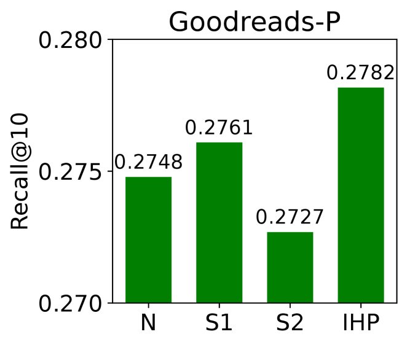
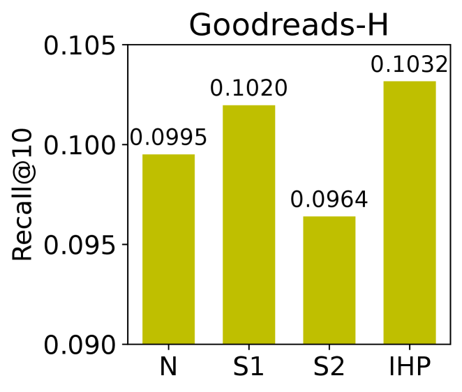
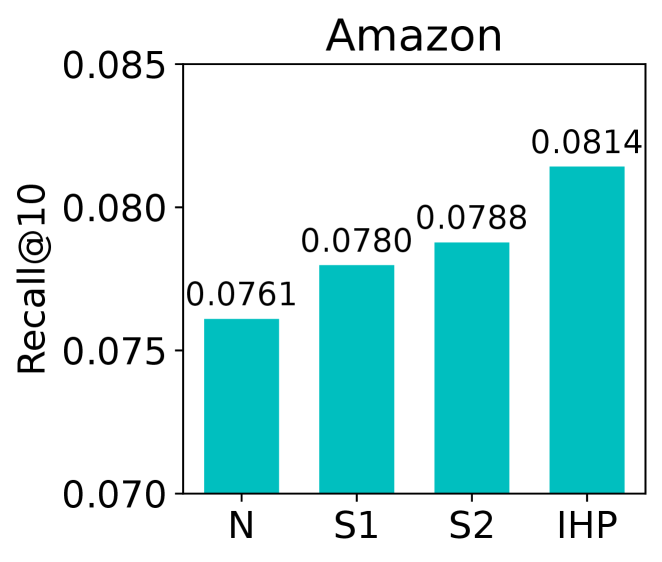
Instruction-based finetuning settings.
The prior knowledge is preserved in target node embeddings and parameters of prompt layer in the pretraining stage and transferred to the downstream tasks. Hence, we conducted an ablation study to investigate the influence of different fine-tuning settings on downstream performance. For instruction-based finetuning in IHP, we freeze the prompt layer and update the target node embeddings with context node embeddings during downstream tasks. We compare IHP with the other four variants of fine-tuning settings: (i) IHP-TR with randomly initialized in fine-tuning; (ii) IHP-TF with pretrained frozen in fine-tuning; (iii) IHP-PR with randomly initialized in fine-tuning; (iv) IHP-PU with pretrained updated by the objective in fine-tuning.
The comparison between the performance of IHP and its variants in Figures 3.4 and 3.6 confirms the advantage of our instruction-based finetuning paradigm. Freezing target node embeddings reduces the flexibility and limits the adaptability to downstream data for the pretraining framework. This issue becomes more pronounced with the growing discrepancy between pretrained and downstream data. As shown in Figure 3.4, IHP-TF with frozen target node embeddings can hardly adapt to the downstream instrument data from the pretrained item data from diverse categories in Amazon. Additionally, updating the prompt layer scarcely improves the downstream performance, compared with using randomly initialized parameters in Figure 3.6. On the contrary, IHP with a frozen prompt layer maintains the consistency of the model’s response to instructions during pretraining and fine-tuning and thus archives a better performance.
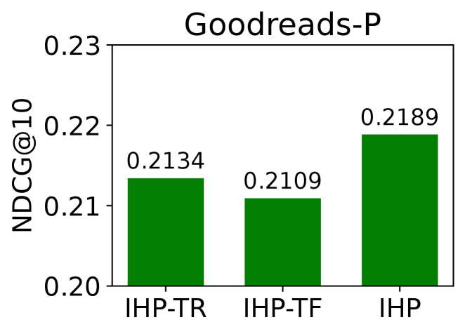
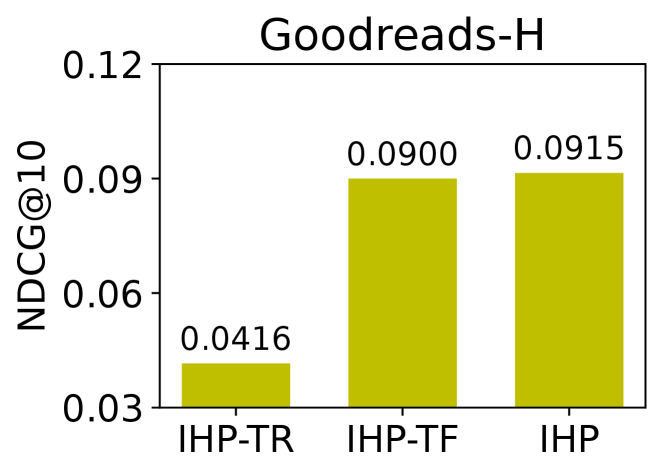
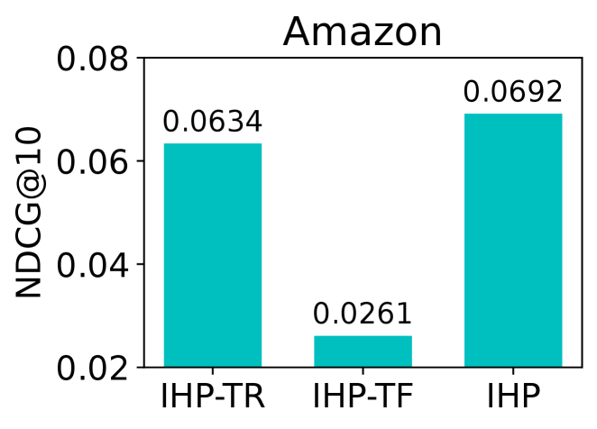
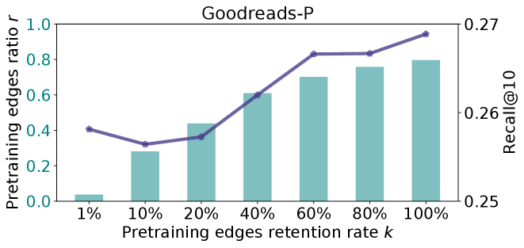
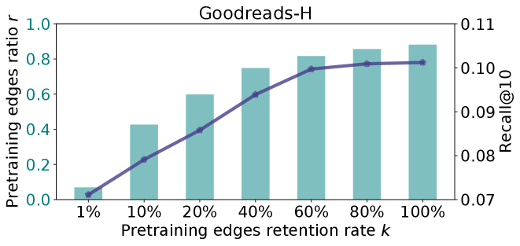
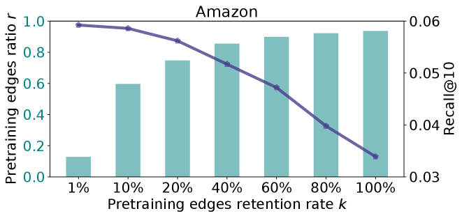
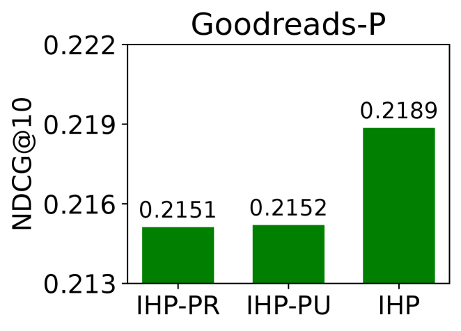
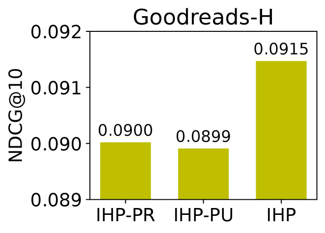
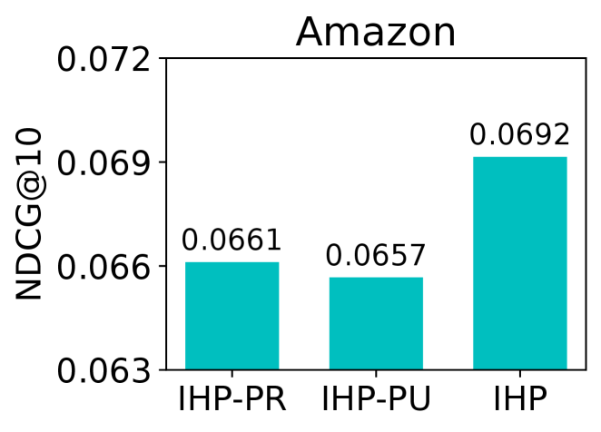
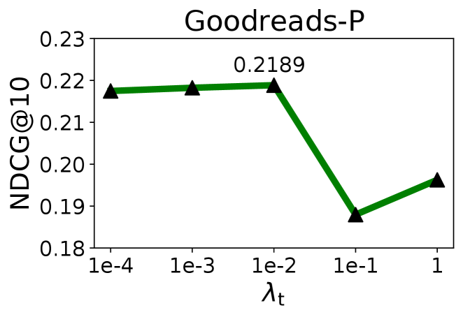
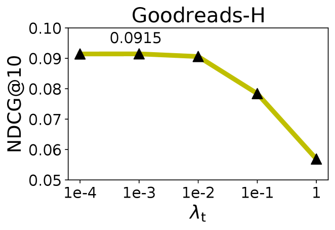
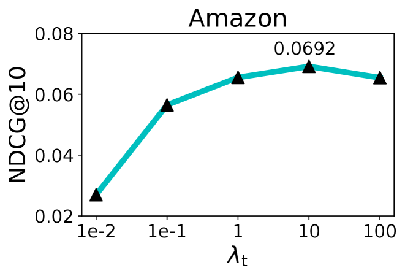
3.4.4. Inductive Learning Analysis
To validate the effectiveness of IHP in dynamically evolving graph structures, we set inductive users which account for , , and of the original users into Amazon, Goodreads-P, and Goodreads-H datasets. The embeddings of inductive user nodes are never trained in either pretraining or finetuning stages. Instead, the inductive nodes are connected to other downstream training nodes by hyperedges defined in Section 3.3.2 and fed into IHP only for inference. Then, we evaluate the link prediction performance on those inductive nodes. In addition to the pretraining baselines [23, 53, 22], we also compare IHP with GraphSage [17], which is a general inductive graph learning method.
The results are demonstrated in Table 3.5. One can observe that IHP exhibits the best performance on inductive users in all the datasets, especially in larger Goodreads-H and Amazon datasets. With prior knowledge from abundant pretrained data in these two datasets, pretraining baselines always perform better than scratch-training GraphSage. Nonetheless, they are worse than IHP, which better captures dependencies between inductive and trained nodes by directly prompting text-based instruction to hyperedges.
| Dataset | Goodreads-P | Goodreads-H | Amazon | |||
|---|---|---|---|---|---|---|
| Metric | R@10 | N@10 | R@10 | N@10 | R@10 | N@10 |
| GraphSage | 0.2415 | 0.1988 | 0.0305 | 0.0210 | 0.0330 | 0.0166 |
| AttriMask | - | - | 0.0605 | 0.0489 | 0.0887 | 0.0505 |
| GCC | 0.2601 | 0.1960 | 0.0589 | 0.0483 | 0.0929 | 0.0520 |
| GraphMAE | 0.2620 | 0.1981 | 0.0606 | 0.0503 | 0.0869 | 0.0494 |
| IHP | 0.2622 | 0.2002 | 0.0998 | 0.0783 | 0.0939 | 0.0672 |
3.4.5. Adaptation Intensity Analysis
To maintain the balance between retaining prior knowledge and adapting for various downstream tasks, we deploy the adaptation intensity coefficient to differentiate the learning rates of target and context node embeddings during fine-tuning. We demonstrate the impact of this coefficient on three datasets in Figure 3.7. It becomes obvious that the performance is always suboptimal when the learning rates of target and context node embeddings remain the same, i.e., . For the two Goodreads datasets, a small prevents the framework from forgetting the prior knowledge during fine-tuning. For Amazon, a large is required to endow the model with the higher adaptivity to the downstream data.
We believe the difference of in Goodreads and Amazon results from the discrepancy between the pretraining and downstream data in each dataset. For verification, we evaluate the model performance with the same learning rates of target and context nodes after merging the pretraining and downstream data. To be specific, we randomly select a subset of edges from the set of all the pretraining edges, add them to the downstream data, and then finetune the model with on the downstream tasks. In other words, the edges become for the downstream tasks. The proportion of the selected edges in all the pretrained edges is defined as pretraining edges retention rate . The ratio of these selected edges to all the downstream edges is denoted as pretraining edges ratio . Pretraining context nodes connected by are also added to the downstream task. In this way, the model is finetuned directly with the original pretraining data.
The results are demonstrated in Figure 3.5. The curve represents the performance, and the bars denote the ratios of the edges added from pretraining in finetuning. In the two Goodreads datasets, We observe that the downstream performance is generally improved with the pretraining data added to the downstream task. In Amazon, on the contrary, the performance is degraded after adding the pretraining data when . The reason is that all the pretraining and downstream context nodes are books in Goodreads, so the discrepancy between the pretraining and downstream data in Goodreads is minor compared to the discrepancy in Amazon, where pretraining and downstream context nodes are items in more diverse categories. That explains why a small is necessary to prevent the framework from forgetting the prior knowledge in Goodreads, while a large can help the pretrain model faster adapt to the significantly different downstream data in Amazon.
3.5. Chapter Summary
In this chapter, we propose a novel graph pretraining framework IHP, which applies text-based instructions to overcome the discrepancy between pretraining and downstream recommendation tasks. In IHP, we construct hyperedges to capture high-order relations among nodes under the guidance of instructions, and a PHC layer is introduced to integrate instructions into context-aware information propagation in hypergraph learning. We conduct extensive experiments and detailed analyses on three real-world datasets to verify the effectiveness of IHP in cross-domain recommendation.
PLMs in this framework are primarily used to encode item and domain descriptions from instructions into semantic embeddings. Through these representations, abstract user preferences learned in the source domain can be semantically aligned with related items in the target domain. In this way, the prior knowledge embedded in PLMs serves as a semantic bridge between pretraining and downstream tasks, enabling cross-domain knowledge transfer beyond pure structural signals. However, this approach still relies on fixed-dimensional sentence-level embeddings produced by PLMs as encoders, which may limit the granularity and flexibility of semantic alignment. With the rapid advancement of LLMs and their increasingly powerful generative and representation capabilities, it becomes possible to move beyond static embedding extraction and achieve deeper integration between language models and RecSys. The next chapter moves beyond treating PLMs as external semantic encoders and instead introduces user and item tokens directly into the LLM vocabulary space. By aligning ID-based behavioral patterns with the language space at the token level, we aim to establish a tighter integration between pretrained linguistic knowledge and collaborative interaction signals in RecSys.
Chapter 4 Training Large Recommendation Models via Graph-LLM Token Alignment
(This chapter was previously published as “Training Large Recommendation Models via Graph-Language Tokens Alignment” [90] in Companion Proceedings of the ACM on Web Conference 2025, pp. 1470 – 1474. 2025. [doi:10.1145/3701716.3715583])
4.1. Introduction
Graph-based RecSys often struggle to integrate rich semantic information from textual data, limiting their ability to capture nuanced user preferences and item characteristics. Leveraging LLMs (LLMs) can bridge this gap by enhancing understanding of textual data and improving recommendation accuracy [55, 88]. A straightforward idea is to train an LLM on recommendation data to serve as a recommender [16]. While previous studies have demonstrated that LLMs can function as recommenders [6], they overlook that established graph-based recommendation models effectively leverage user-item interactions for collaborative filtering. Moreover, when the LLM generates language tokens as item predictions, the output free-form text introduces ambiguity when matching the actual items, compared to traditional recommendation models that output a clear list of item IDs. To mitigate this, additional post-processing is needed to parse text back to specific items, which hinders the actual performance when candidate items are similar. Instead of deploying LLMs directly as RS, some recent works integrate LLM embeddings as supplementary features to enhance existing recommendation models [55, 76]. However, the recommendation process in their approaches is primarily driven by the graph-based model, leaving the reasoning capabilities of LLMs underutilized.
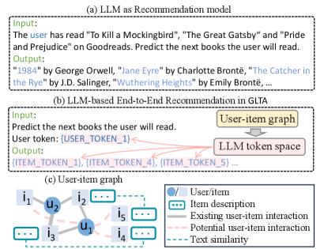
To effectively harness the powerful reasoning capability of LLMs for recommendation, we propose a novel framework, training large recommendation models via Graph-Language Token Alignment, which aligns LLMs with graphs using a carefully designed token alignment paradigm. To be concrete, we first align items with their text descriptions to obtain item tokens, and then align users with pretrained item and text tokens for recommendation. To implement end-to-end recommendation, we design a GLLM layer to optimize the token alignment by matching predicted item logits with ground-truth items. This GLLM layer eliminates the hallucination issue that non-existing items are generated when directly using LLM outputs as item prediction results. As shown in Figure 4.1, different from directly adopting LLMs as recommendation models, our GLTA accurately generates existing item tokens instead of plain text outputs. The key contributions of this paper are:
-
•
We propose a novel recommendation framework, GLTA, integrating LLMs and recommendation in an end-to-end manner, where each output of the LLM corresponds precisely to an item in RS, eliminating the hallucination issue and the ambiguity from free-form text as output.
-
•
We adaptively align nodes pretrained on the graph with pretrained tokens of the LLM by token projectors, and introduce a novel GLLM layer for optimizing end-to-end recommendation based on these aligned node tokens. Only projectors and GLLM layers are finetuned for this efficient end-to-end prediction.
-
•
To verify the preeminence of GLTA, we conduct extensive experiments on three publicly available benchmark datasets. The effectiveness of each component in GLTA is verified through ablation studies.
4.2. Preliminary: Graph Pretraining
Graph-based CF enhances recommendation by using graph structures to model user-item interactions. In this work, we use LightGCN [18] as a graph-based CF method to capture and encode structure information on the user-item graph . Node set contains all users and items , and denotes all the user-item interactions. In the first stage, user node embeddings and item node embeddings are pretrained as and and frozen in the following alignment stages, where denotes the dimension of pretrained node embeddings.
4.3. Proposed Framework: GLTA
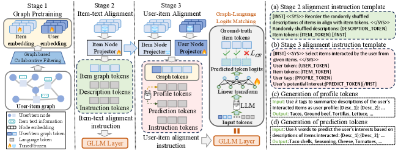
4.3.1. Item-text Alignment
The proposed GLTA is shown in Figure 4.2. Following graph pretraining, it is essential to align item node embeddings with item descriptions tokens pretrained from the LLM. These two types of embeddings typically reside in different spaces. The item node embeddings capture collaborative signals from the graph, while the text embeddings capture semantic information from the textual descriptions. Inspired by GraphGPT [65], we apply a simple linear layer as an item node projector that maps these item nodes into the same language token space with the descriptions of these items:
| (4.1) |
where is the embeddings of item tokens. and denote the weight and bias of the item node projector. Then, an item-text alignment instruction template, shown in Figure 4.2 (a), queries the LLM to reorder the item language information and match the token with the predicted logits.
4.3.2. User-item Alignment
Besides the item-text alignment, a user-item alignment is proposed to allow the LLM to process both user and item information in the same context. Similarly, a linear layer is used as a user node projector to map user nodes into the LLM token space.
| (4.2) |
where is the embeddings of user tokens. and denote the weight and bias of the user node projector. This projector establishes the correspondence between the user nodes, the language tokens and the item tokens pretrained in previous item-text alignment.
Besides these user tokens and pretrained item tokens, we introduce profile tokens and prediction tokens into the user-item alignment instruction template. These profile and prediction tokens are generated by the LLM based on item descriptions. The instruction templates for generating profile and prediction tokens are shown in Figure 4.2(c) and Figure 4.2(d), respectively. In this way, user node embeddings are mapped to the same token space with semantic characteristics reflecting their historical interactions and potential preferences. Then, the user-item alignment instruction template is fed into the LLM to generate the predicted item tokens for each user. During training, the item token prediction is optimized by GLLM for end-to-end recommendation.
4.3.3. Graph-Language Logits Matching
In a traditional setup when using LLMs as RS, additional steps are required to parse the text and map it back to specific items [65, 16]. To eliminate the ambiguity that arises when interpreting free-form text outputs of the LLM, a GLLM layer is designed for the end-to-end recommendation in GLTA. After inputting the instruction template to the LLM, a linear layer is applied to transform the last-layer hidden states of the LLM into item token logits , where denotes the maximum sequence length in the LLM. Then, a cross-entropy loss is applied to match the predicted logits to the ground-truth items interacted by the user:
| (4.3) |
where is the ground-truth item ID at position in the sequence, and represents the logit corresponding to the ground-truth item at position . This cross-entropy loss provides direct supervision by comparing the model’s predicted probability distribution against the actual ground-truth item IDs. In real-world datasets, the number of items interacted by the user is not necessarily equal to , and the order information of the interacted item can be unavailable. In that case, we only optimize item token logits in the first positions, according to ground-truth items randomly shuffled from all the items interacted by the user. In this work, we use a quantized version of LLaMA-2-7B 11 1 https://huggingface.co/TheBloke/Llama-2-7B-GPTQ as the LLM for training efficiency and adopt Adam [33] as the optimizer.
4.4. Experiment
4.4.1. Experiment Settings
Datasets
| Dataset | Goodreads | Amazon | MovieLens |
|---|---|---|---|
| #Users | 10,131 | 1,032 | 6,040 |
| #Items | 10,725 | 17,609 | 3,706 |
| #U-I interactions | 478,334 | 30,510 | 1,000,209 |
| Density | 0.440% | 0.168% | 4.468% |
We conduct experiments on three publicly available datasets: Goodreads [67], Amazon [47] and MovieLens22 2 https://grouplens.org/datasets/movielens/1m/. We use history books and groceries as items with their corresponding descriptions in Goodreads and Amazon datasets, respectively. For MovieLens, we regard movies as items and movie genres as item descriptions since no movie descriptions are provided in this dataset. The details of the datasets are shown in Table 4.1.
Baselines
To demonstrate the effectiveness of GLTA, we compare it with three groups of representative baselines. 1.) GNN-based recommendation with only interaction information (LightGCN [18], HCCF [80]) that applies graph or hypergraph neural network on the user-item interaction graph for information propagation. 2.) GNN-based recommendation with text information (LightGCN+, HCCF+) that uses InfoNCE loss to align the encoded node embeddings with description embeddings from a sentence transformer [73]. 3.) LLM-based recommendation [55] that leverages contrastive (RLMRec-Con) or generative (RLMRec-Gen) alignment.
Evaluation Metrics
We evaluate the recommendation in an end-to-end manner by ranking the test users with all non-interacted items. Precision (P, P) and NDCG (N, N) are adopted as evaluation metrics.
| Dataset | Goodreads | Amazon | MovieLens | |||||||||
|---|---|---|---|---|---|---|---|---|---|---|---|---|
| Metric | P@5 | P@10 | N@5 | N@10 | P@5 | P@10 | N@5 | N@10 | P@5 | P@10 | N@5 | N@10 |
| LightGCN | 0.1999 | 0.1618 | 0.2346 | 0.2352 | 0.0204 | 0.0139 | 0.0301 | 0.0305 | 0.0470 | 0.0426 | 0.0463 | 0.0466 |
| HCCF | 0.1998 | 0.1632 | 0.2371 | 0.2439 | 0.0209 | 0.0143 | 0.0275 | 0.0304 | 0.0467 | 0.0419 | 0.0482 | 0.0486 |
| LightGCN+ | 0.2004 | 0.1616 | 0.2347 | 0.2358 | 0.0211 | 0.0150 | 0.0268 | 0.0290 | 0.0527 | 0.0451 | 0.0467 | 0.0469 |
| HCCF+ | 0.2034 | 0.1641 | 0.2379 | 0.2483 | 0.0217 | 0.0156 | 0.0310 | 0.0315 | 0.0516 | 0.0436 | 0.0486 | 0.0488 |
| RLMRec-Con | 0.2062 | 0.1676 | 0.2441 | 0.2542 | 0.0227 | 0.0142 | 0.0348 | 0.0358 | 0.0499 | 0.0460 | 0.0488 | 0.0492 |
| RLMRec-Gen | 0.2062 | 0.1653 | 0.2407 | 0.2424 | 0.0223 | 0.0145 | 0.0336 | 0.0339 | 0.0517 | 0.0451 | 0.0475 | 0.0477 |
| GLTA | 0.2465 | 0.1882 | 0.2722 | 0.2905 | 0.0359 | 0.0236 | 0.0499 | 0.0500 | 0.0968 | 0.0821 | 0.1162 | 0.1403 |
| Improv. | 19.54% | 12.29% | 11.51% | 14.28% | 58.14% | 51.28% | 43.39% | 39.66% | 83.68% | 78.48% | 138.11% | 185.16% |
4.4.2. Overall Performance
Performance comparison between GLTA and other baselines are shown in Table 4.2. We have the following observations. First, GLTA exhibits superior performance on all datasets, especially in MovieLens where the dense user-item interactions lead to over-smoothing in GNN-based baselines [32]. Second, compared to graph-based recommendation with only interaction information, introducing text information into graph-based methods improves the recommendation performance in most cases, which verifies the importance of incorporating rich semantic content to enhance user-item matching and better capture the contextual nuances of items. Third, the LLM-based recommendation method, RLMRec-Con, has better overall performance than other baselines. This justifies that aligning the knowledge of LLMs with collaborative relation learning through contrastive learning is able to enhance recommendation performance. However, the recommendation process is still done by the backbone LightGCN model in RLMRec, leaving the reasoning abilities of LLMs untouched. On the contrary, GLTA projects users and items into language space as tokens first, and then completely leverages the LLM for end-to-end recommendation, which is a more holistic approach that fully utilizes the reasoning capabilities and contextual understanding of LLMs.
4.4.3. Item-text and User-item Alignment
In GLTA, item-text alignment and user-item alignment are designed to align CF with the reasoning ability of the LLM. To verify the effectiveness of these two alignment methods, we compare the performance of GLTA to its variant without item-text alignment (w/o IA) and without user-item alignment (w/o UA) on the three datasets in Figure 4.3. For the variant w/o IA, we directly remove the item-text alignment stage and update item and user node projectors simultaneously in the user-item alignment stage. For the variant w/o UA, we use user IDs instead of aligned user tokens in the user-item alignment instruction template before feeding it into the GLLM layer. We find that employing item-text alignment or user-item alignment leads to stable enhancement in all datasets, which implies that both alignment methods are crucial for effectively leveraging the LLM’s reasoning capabilities in the recommendation process.
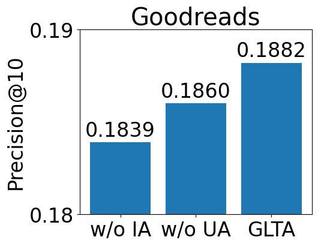
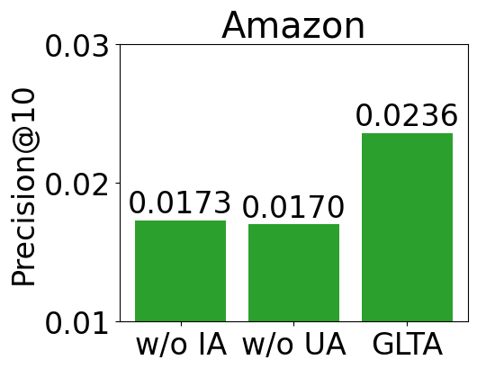
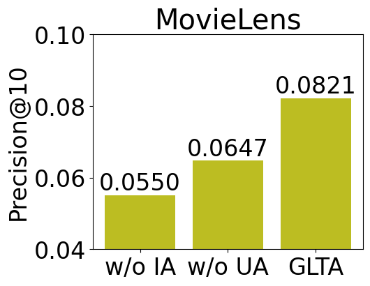
4.4.4. Profile and Prediction Tokens
To quantify the contribution of profile and prediction tokens used in user-item alignment, we conduct an ablation study to investigate the performance of GLTA without these tokens generated by the LLM. The results are shown in Table 4.3. Both profile and prediction tokens generally improve performance if included in the instruction template. Notably, the advantages of using these LLM-generated tokens become more pronounced when the distinctions between items in the dataset are clearer. For instance, the performance improvement is more evident in MovieLens, where items span a wide range of movie genres, but less pronounced in Goodreads, where items consist only of history books. We speculate that the broader diversity of items in datasets like MovieLens allows the LLM-generated tokens to better capture user features from nuanced differences between items, thereby enhancing recommendation accuracy. In contrast, as the distinctions between items are less varied and therefore less reliant on the LLM’s enhanced representation capabilities, the additional benefits provided by these tokens are also limited.
| Dataset | Goodreads | Amazon | MovieLens | |||
|---|---|---|---|---|---|---|
| Metric | P@5 | N@5 | P@5 | N@5 | P@5 | N@5 |
| w/o both | 0.2462 | 0.2705 | 0.0316 | 0.0408 | 0.0736 | 0.0658 |
| w/o PF | 0.2466 | 0.2668 | 0.0318 | 0.0414 | 0.0763 | 0.0713 |
| w/o PD | 0.2467 | 0.2688 | 0.0341 | 0.0449 | 0.0860 | 0.0761 |
| GLTA | 0.2465 | 0.2722 | 0.0359 | 0.0499 | 0.0968 | 0.1162 |
4.4.5. Item Prediction in GLLM
We further explore two other item prediction patterns in GLLM layers. Autoregressive inference(AR): During inference, we strictly follow the text generation of LLMs in which each item token is generated based on the previous item tokens the model has generated. First-logit optimization (FL): To predict the top favorite items for each user, we use the largest elements in the first logit from , instead of the first logits in GLTA. The results are demonstrated in Figure 4.4. The poor performance of autoregressive inference indicates that, unlike natural language processing tasks where contextual continuity is vital, the sequential dependency between items is not as strong in recommendation. The inconsistency between training and inference patterns exacerbates this issue, particularly because the model is trained using item descriptions and collaborative signals rather than direct sequential user-item interaction data.
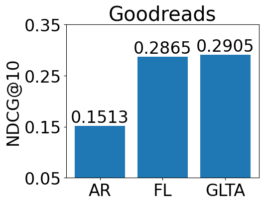
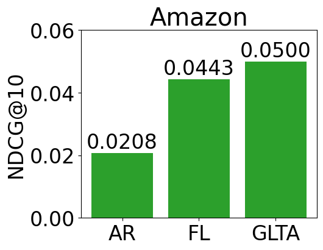
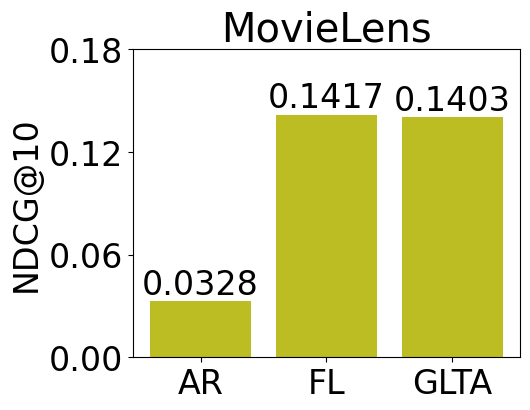
4.5. Chapter Summary
In this chapter, we propose a novel recommendation framework GLTA, which applies token alignment to integrate graph-based CF with the reasoning capabilities of LLMs. In GLTA, we begin by employing a graph encoder to capture user and item node features from the collaborative relationships within the user-item graph. Next, item and user node embeddings are adaptively aligned with other language tokens using node projectors. Finally, the user and item node projectors are optimized for end-to-end recommendation through the GLLM layer.
One potential limitation of GLTA is that, although the LLM parameters remain frozen, backpropagation is still required through the entire LLM to optimize the node projectors and the GLLM layer. As modern LLMs continue to scale in size, this training paradigm can become memory-intensive, limiting its practicality for resource-constrained scenarios. In the next chapter, we therefore investigate a more lightweight yet effective paradigm that incorporates LLM knowledge and generative capabilities into recommendation without requiring gradient propagation through the full LLM, enabling a more efficient and scalable integration strategy.
Chapter 5 LLM-Inferred Substitute and Complement Signals for Recommendation
5.1. Introduction
Substitution and complementarity are fundamental item-item relations for understanding user intent in recommendation systems [99, 77]. Substitutes represent alternatives that satisfy the same user need, while complements capture items that are jointly consumed within a coherent usage context. For example, an on-ear headphone and an over-ear headphone serve similar listening purposes and can be regarded as substitutes, whereas adapters are typically complementary accessories that support headphone usage in cellphones. Recommending such substitute or complementary items to an on-ear headphone buyer can improve user satisfaction by offering meaningful alternatives. However, ground-truth annotations of substitute and complementary relations are rarely available in public datasets [47, 2], and obtaining reliable annotations through manual labeling is costly and time-consuming. Consequently, prior work [10, 40, 81] typically relies on co-view or co-purchase signals as weak supervision. However, directly treating these signals as substitutes or complements implicitly assumes that behavioral co-occurrence aligns with real-world item relations, an assumption that frequently fails in practice [28, 92, 62]. Many co-occurring item pairs are neither substitutes nor complements, but arise from incidental browsing or exploratory interactions. On e-commerce platforms, users often interact with multiple unrelated items within a short time window, resulting in co-occurrence records that are incidental rather than semantically meaningful.
Ideally, a solution should possess human-like world knowledge to distinguish true substitute and complementary relations from incidental co-occurrences, while avoiding the high cost and inefficiency of large-scale manual annotation. Recent advances in LLMs offer a promising way to address these challenges, as they encode rich world knowledge about usage contexts acquired from large-scale text corpora. This knowledge enables LLMs to move beyond surface-level co-occurrence patterns and reason about the functional roles items play in real-world scenarios. Benefiting from this semantic reasoning capability, LLMs have been applied for labeling substitute and complementary relations in previous works [52, 20].
To effectively harness the world knowledge of LLMs on substitutes and complements for recommendation, we propose ERLSC, which leverages LLMs to distinguish true substitute and complementary relations from noisy co-occurring item relations for enhanced recommendation. We adopt a hypergraph formulation because co-view and co-purchase signals naturally induce item groups rather than isolated item pairs, and hyperedges provide a principled way to model such higher-order co-occurrence relations. By assigning weights to hyperedges via an LLM, ERLSC can selectively emphasize item groups that exhibit coherent substitute or complement semantics while down-weighting irrelevant co-occurrences. To incorporate LLM-derived semantic signals into this structure, we design an LLM-Guided Hypergraph Convolution (LGHC) layer to initialize and update hyperedge weights in an item-item hypergraph. Specifically, we first construct hyperedges by connecting frequently co-occurring items in user interaction logs. We then query LLMs to assess how many item pairs within each hyperedge reflect true substitute or complementary relations. The resulting relation composition is used to initialize hyperedge weights, which are further refined during training through weight modulation. The key contributions are:
-
•
We propose a novel recommendation framework ERLSC. As far as we know, this is the first work enhancing recommendation via LLM-inferred substitute and complement signals.
-
•
We introduce an LGHC layer that seamlessly integrates LLM-based relation assessment into hypergraph modeling by initializing and adaptively updating hyperedge weights.
-
•
We conduct extensive experiments on three public datasets to demonstrate the effectiveness of ERLSC, and perform ablation studies to verify the contribution of each component.
5.2. Preliminaries
5.2.1. Problem Formulation
Let and denote the complete item pool and the set of users in the dataset, respectively. Given the user-item interactions as edges , a user-item graph is defined as where . Each item is accompanied by its corresponding textual description . In addition, items that appear in the same co-view or co-purchase group are connected by a hyperedge. An incidence matrix is used to represent the connections between items and hyperedges in the item-item hypergraph. Given a user , the recommendation task is to predict a ranked list of items that the user has not interacted with in the graph G.
5.2.2. Collaborative Filtering
To learn representations of users and items from interactions, we apply collaborative filtering (CF) on the user-item graph G. CF captures collaborative signals by modeling historical user-item interactions, which are essential for inferring user preferences and item relevance in recommendation. We maintain an embedding layer , where denotes the embedding dimension. Through CF, we obtain user embeddings and item embeddings , which encode collaborative patterns from the interaction graph. The learned user embeddings are subsequently used to perform personalized ranking over candidate items in the recommendation task. In this work, we adopt a one-layer LightGCN [18] as the underlying graph-based CF model due to its simplicity and effectiveness.
5.3. Proposed Framework: ERLSC
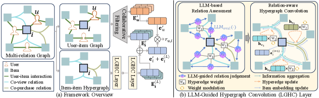
5.3.1. LLM-based Relation Assessment
The overall architecture of ERLSC is illustrated in Figure 5.1. Beyond the collaborative signals captured by CF, propagating information over item–item hypergraphs is essential for modeling the semantic and functional relationships implicit in item co-occurrence. In particular, co-view and co-purchase relations often reflect shared functionality or joint usage patterns that cannot be fully captured by user–item interactions alone. To assess the reliability of each hyperedge in representing such relations, as the first component of the proposed LGHC layer, we leverage LLMs to evaluate its semantic coherence based on LLMs’ world knowledge.
Since substitute and complementary relations are more reliably identified at the pairwise level than at the group level, we first query the LLM to assess pairwise relations within each co-occurrence group. Specifically, given a hyperedge that connects a group of items , we enumerate all unordered item–item pairs , and compute the number of item pairs that exhibit substitute or complementary relations as follows:
| (5.1) |
where denotes the relation type being queried, corresponding to substitute or complementary relations, respectively. The function returns a binary outcome indicating whether the item pair exhibits the specified relation. Accordingly, represents the total number of substitute or complement item pairs within the hyperedge.
We then initialize the hyperedge weight based on the proportion of relation-consistent pairs within the group. Specifically, the weight of hyperedge is defined as . A larger value of indicates that a higher fraction of item pairs exhibit either substitute or complementary relations, suggesting that the hyperedge corresponds to a semantically coherent and functionally meaningful co-occurrence pattern. In contrast, a smaller value implies that most item pairs lack clear semantic relations, indicating that the hyperedge is likely noisy or less informative.
5.3.2. Relation-aware Hypergraph Convolution
To incorporate LLM world knowledge as prior semantic guidance and to adaptively refine hyperedge importance during training, we design a relation-aware hypergraph convolution module consisting of three sequential components: information aggregation, hyperedge update, and item embedding update.
Information Aggregation
We first construct a representation for each hyperedge by aggregating the embeddings of all items incident to it:
| (5.2) |
where denotes the embedding of hyperedge and is the embedding of each connected item. We adopt mean pooling as aggregation method to summarize information from item nodes.
Hyperedge Update
To enable the model to exploit the LLM-initialized hyperedge weights while allowing adaptive refinement during training, we perform weight modulation based on hyperedge-level features. Each hyperedge is associated with a feature vector that captures both structural and semantic characteristics, including: the hyperedge degree, the average and maximum degrees of its connected item nodes, , , , and . These features are fed into a two-layer multilayer perceptron (MLP) to generate a modulation factor for the hyperedge weight. The reweighted hyperedge embedding is then computed as
| (5.3) |
where is the LLM-initialized hyperedge weight, denotes the weight-modulation MLP, and represents the final reweighted embedding of hyperedge at layer . This design allows the model to jointly leverage prior semantic reliability from the LLM and task-specific structural cues learned during training.
Item Embedding Update
Finally, we update each item embedding by aggregating the reweighted embeddings of all hyperedges incident to the item. For a target item , the update rule is given by
| (5.4) |
where denotes the updated embedding of item , and is the set of hyperedges connected to item . Through this operation, each item aggregates information from its surrounding hyperedges, with contributions weighted by both LLM-derived semantic confidence and learned structural relevance.
5.3.3. Ranking Prediction
The final item embedding is obtained by adding CF-based item embedding to the updated item embedding from the last LGHC layer. And we compute the ranking score of the user-item pair by the inner product of user and item embeddings:
| (5.5) |
Then, we adopt the pairwise BPR loss [56] to optimize the ranking prediction:
| (5.6) |
where is the training data and item set contains all the items interacted by user . We denote all trainable parameters as , regularized by . Adam [33] is chosen as the optimizer.
5.4. Experiment
5.4.1. Experiment Settings
Datasets
| Dataset | Electronics | Office | Home |
|---|---|---|---|
| #Users | 12,828 | 7,528 | 1,534 |
| #Items | 19,297 | 5,743 | 4,923 |
| #U-I interactions | 93,788 | 40,330 | 7,810 |
| #Bought-together relations | 2,769 | 1,555 | 326 |
| #Compared-with relations | 5,746 | 706 | 614 |
| #Also-bought relations | 5,852 | 696 | 715 |
| #Also-viewed relations | 15,288 | 3,838 | 2,819 |
We conduct experiments on three sub-datasets from the public XMarket dataset [2]: Electronics, Office, and Home. These categories are chosen because they naturally exhibit abundant substitute and complementary item relations, due to overlapping product functionalities and frequent accessory co-usage. The statistics of the selected datasets are summarized in Table 5.1. We treat bought-together and also-bought relations as co-purchase signals, and compared-with and also-viewed relations as co-view signals.
Baselines
To evaluate the effectiveness of ERLSC, we compare it with six baselines, including four representative CF methods: LightGCN [18], HCCF [80], SimpleX [44], and DiffRec [74]. Since the datasets also provide sequential order information in user transaction histories, we further compare our method with sequential recommendation baselines, including SASRecCPR [8] and FeaRec [12]. All methods are evaluated under the full-ranking setting, where each test user is ranked against all non-interacted items. We adopt Recall (R@5, R@10) and NDCG (N@5, N@10) as evaluation metrics.
| Dataset | Electronics | Office | Home | |||||||||
|---|---|---|---|---|---|---|---|---|---|---|---|---|
| Metric | R@10 | R@20 | N@10 | N@20 | R@10 | R@20 | N@10 | N@20 | R@10 | R@20 | N@10 | N@20 |
| LightGCN | 0.0894 | 0.0959 | 0.0786 | 0.0804 | 0.2489 | 0.2692 | 0.2141 | 0.2195 | 0.1118 | 0.1199 | 0.0910 | 0.0930 |
| SimpleX | 0.0860 | 0.0924 | 0.0779 | 0.0797 | 0.2444 | 0.2583 | 0.2136 | 0.2174 | 0.1098 | 0.1167 | 0.0872 | 0.0888 |
| DiffRec | 0.0743 | 0.0801 | 0.0680 | 0.0696 | 0.2405 | 0.2524 | 0.2167 | 0.2199 | 0.1074 | 0.1172 | 0.0816 | 0.0838 |
| SASRecCPR | 0.0665 | 0.0961 | 0.0700 | 0.0729 | 0.1925 | 0.2111 | 0.1966 | 0.2010 | 0.1151 | 0.1235 | 0.0683 | 0.0751 |
| FeaRec | 0.0704 | 0.0897 | 0.0607 | 0.0656 | 0.1829 | 0.1963 | 0.1698 | 0.1739 | 0.1206 | 0.1319 | 0.0887 | 0.0941 |
| HCCF | 0.0827 | 0.1025 | 0.0783 | 0.0845 | 0.2167 | 0.2624 | 0.1986 | 0.2272 | 0.1133 | 0.1214 | 0.0839 | 0.0865 |
| ERLSC | 0.1232 | 0.1337 | 0.1034 | 0.1062 | 0.2816 | 0.3045 | 0.2404 | 0.2467 | 0.1325 | 0.1423 | 0.1131 | 0.1157 |
| Improv. | 37.78% | 30.45% | 31.54% | 25.62% | 13.11% | 13.10% | 10.96% | 8.60% | 10.44% | 7.84% | 24.20% | 22.99% |
5.4.2. Overall Performance
The overall performance comparison between ERLSC and the baseline methods is reported in Table 5.2. We make the following observations. First, ERLSC consistently outperforms all baseline methods across all datasets and evaluation metrics. The improvements are particularly pronounced on the Electronics dataset, where rich co-view and co-purchase signals are available. This result demonstrates the effectiveness of incorporating item–item relations to capture functional item groupings. Second, the hypergraph-based baseline HCCF constructs hyperedges by connecting all items interacted with by the same user. This strategy remains sensitive to sparse user–item interactions, such as Home dataset where user behaviors are less dense. In contrast, ERLSC constructs hyperedges from item co-occurrence relations and further leverages LLM-based semantic assessment to weight these hyperedges, allowing the model to emphasize meaningful substitute and complementary relations while suppressing irrelevant co-occurrences. This design enables ERLSC to achieve robust performance even when behavioral signals are noisy or limited.
5.4.3. Ablation Study
To verify the effectiveness of each component in ERLSC, we conduct ablation studies by comparing it with several variants, as shown in Figure 5.2. The variant w/o H considers only user-item interactions without item–item hypergraph modeling. The variant H replaces the LGHC layer in ERLSC with a hypergraph convolution layer, where all hyperedges have equal weights . The variant LH further incorporates LLM-initialized hyperedge weights, but disables weight modulation during training. From the results, we observe a consistent performance improvement when hypergraph information is introduced. Moreover, by incorporating LLM-initialized hyperedge weights, the LH variant further improves performance, demonstrating that LLM-based semantic assessment helps identify hyperedges that better reflect substitute and complementary relations. Finally, the best performance of ERLSC on all datasets highlights the importance of dynamically modulating hyperedge weights during training, which allows the model to adaptively refine the influence of each hyperedge based on recommendation objectives. Overall, the ablation results confirm that both LLM-guided hyperedge initialization and weight modulation are critical components for achieving optimal performance.
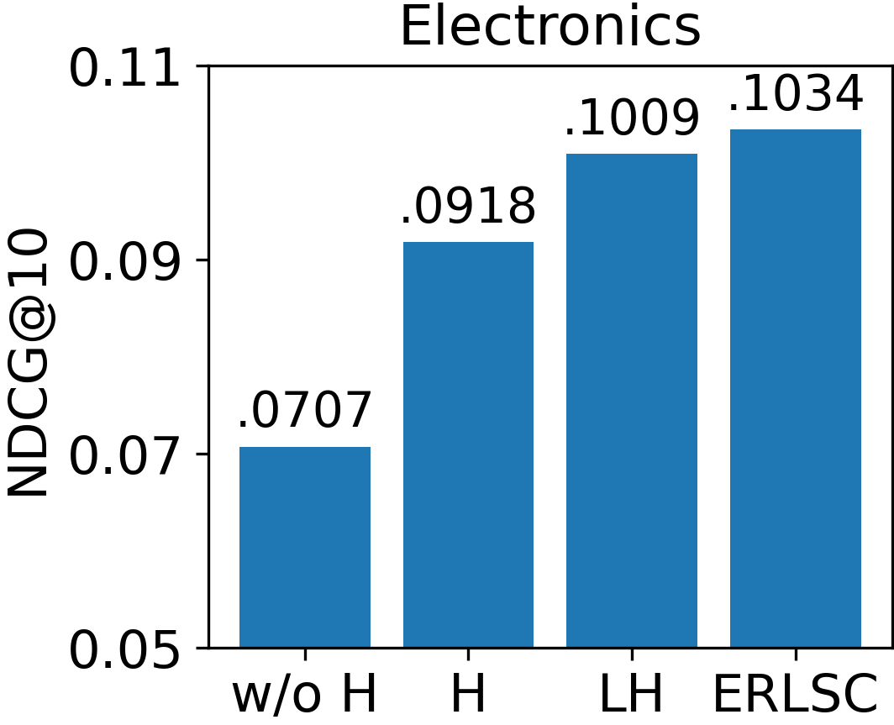
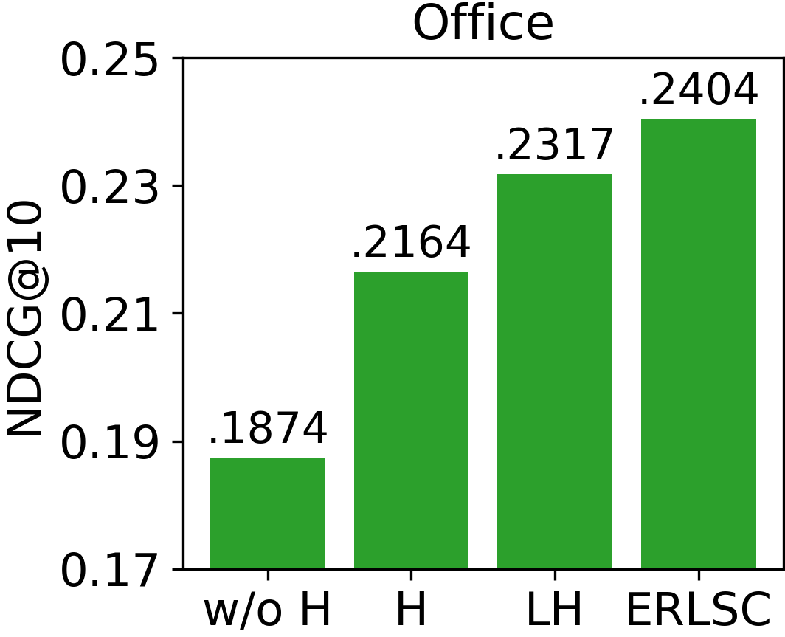
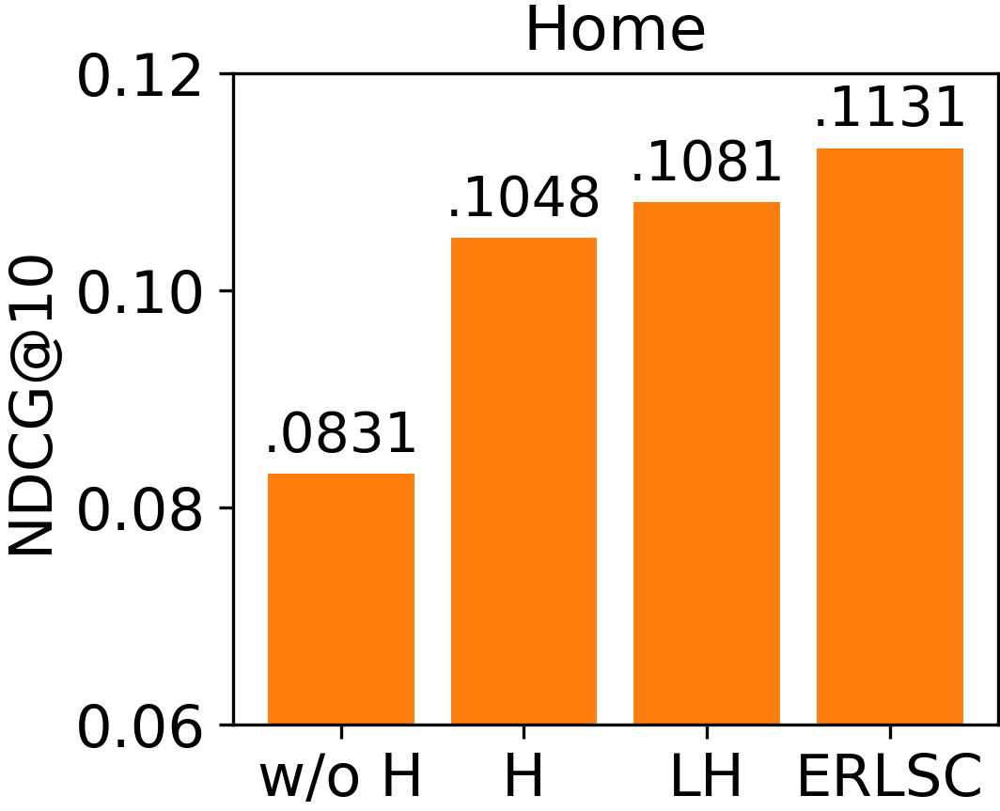
5.4.4. Performance under Different Signals
We evaluate the performance of ERLSC under only one of the four different types of co-occurrence signals provided in the dataset, including BT (bought-together), CW (compared-with), AB (also-bought), and AV (also-viewed). For each signal type, we construct item–item hyperedges solely based on the corresponding relation and report the results in Table 5.3. For each signal, we compare the following variants. (i) BT/CW/AB/AV only: the LGHC layer is replaced by a naive hypergraph convolution layer. (ii) {S,C}max: hyperedge weights are initialized as which emphasizes whether substitution or complementarity is more prevalent. (iii) S&C : the full ERLSC with a single relation type available. From the results, we observe that incorporating LLM-based relation information consistently improves recommendation performance across all relation types and datasets. Compared with the variants without LGHC, both {S,C}max and S&C achieve noticeable gains, demonstrating the effectiveness of leveraging LLM-inferred substitute and complement signals. Moreover, S&C used in ERLSC outperforms {S,C}max in most cases, indicating that jointly considering substitutes and complements yields more reliable hyperedge weights.
| Dataset | Electronics | Office | Home | |||
|---|---|---|---|---|---|---|
| Metric | R@10 | N@10 | R@10 | N@10 | R@10 | N@10 |
| BT only | 0.0921 | 0.0656 | 0.2629 | 0.2170 | 0.1216 | 0.0793 |
| + {S,C}max | 0.0952 | 0.0719 | 0.2672 | 0.2181 | 0.1199 | 0.0929 |
| + S&C | 0.1066 | 0.0826 | 0.2684 | 0.2215 | 0.1226 | 0.1075 |
| CW only | 0.0865 | 0.0710 | 0.2525 | 0.2112 | 0.1118 | 0.0860 |
| + {S,C}max | 0.0893 | 0.0776 | 0.2555 | 0.2162 | 0.1175 | 0.0943 |
| + S&C | 0.0979 | 0.0782 | 0.2604 | 0.2189 | 0.1226 | 0.1012 |
| AB only | 0.0940 | 0.0765 | 0.2468 | 0.1936 | 0.1182 | 0.0766 |
| + {S,C}max | 0.0971 | 0.0770 | 0.2450 | 0.2030 | 0.1169 | 0.0889 |
| + S&C | 0.1066 | 0.0834 | 0.2527 | 0.2062 | 0.1226 | 0.1063 |
| AV only | 0.0998 | 0.0858 | 0.2738 | 0.2273 | 0.1189 | 0.0666 |
| + {S,C}max | 0.1089 | 0.0845 | 0.2747 | 0.2296 | 0.1216 | 0.1078 |
| + S&C | 0.1140 | 0.0878 | 0.2790 | 0.2328 | 0.1274 | 0.1076 |
5.5. Chapter Summary
In this chapter, we investigate how to leverage LLMs to assess substitute and complementary relations and to adaptively determine hyperedge weights through the proposed LGHC layer. Experimental results on real-world datasets demonstrate the effectiveness of incorporating LLM-encoded world knowledge on substitution and complementarity into recommendation models. However, ERLSC still follows a single-model learning paradigm, where the final recommendation performance depends on a single trained model, even when enhanced by LLM-derived relational signals. In the next chapter, we move beyond this paradigm and introduce an LLM-based agent framework that coordinates multiple recommendation tools and performs explicit relational reasoning at inference time.
Chapter 6 Dynamic Recommendation with Item-Item relations via LLM-based Agents
(This chapter was previously published as “AgentDR: Dynamic recommendation with implicit item-item relations via LLM-based agents” [85] in Proceedings of the ACM on Web Conference 2026, pp. 6230 - 6241. 2026. [doi:10.1145/3774904.3792304])
6.1. Introduction
RecSys provide personalized suggestions to assist users in information discovery and decision-making [87, 89, 86, 42]. However, traditional ID-based RecSys [18, 31, 9] solely based on user-item interactions are constrained by overlooking the rich semantic information contained in textual context. Even when LLMs are employed to encode textual features into embeddings [76, 55, 106], these fixed-length representations inherently struggle to preserve the full semantic richness of textual information for recommendation [36, 79]. There are several attempts to harness the commonsense reasoning and knowledge utilization capabilities of LLMs by directly applying them as RecSys, reformulating recommendation tasks as language modeling problems [16, 21, 11, 19]. However, an inherent gap remains because LLMs are optimized for next-token prediction in natural language rather than learning collaborative and sequential patterns from interactions, limiting their efficiency in user behavior modeling.
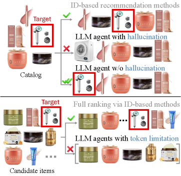
Given the limitations of using LLMs solely as feature encoders or standalone recommenders, recent studies have investigated leveraging LLMs as interactive agents for recommendation [98, 97, 69]. Rather than relying only on direct prompting with user interaction histories, these agent-based approaches integrate memory modules to preserve long-term context and better harness collaborative signals throughout the recommendation process. While LLM-based agents alleviate the representational constraints of static numerical embeddings and enable adaptive modeling of user behavior over time, they also inherit key limitations from the generative nature of LLMs. As illustrated in Fig. 6.1, two primary drawbacks arise in previous agent-based works when directly applying LLMs for recommendation: (i) the tendency to hallucinate non-existent items that are not part of the product catalog, and (ii) the high inference cost and token length constraints, which make them impractical for large-scale item ranking. Moreover, longer input and output sequences further increase the risk of hallucination due to attention bottlenecks and heightened generation uncertainty [25].
As a result, when applied to recommendation scenarios, existing LLM-based agents [98, 82, 97] typically evaluate performance by checking whether the ground-truth item, which is the next item that the user actually interacted, is correctly ranked against a small set of negative candidates. These negative candidates are items randomly sampled from the catalog that the user did not interact with during the observation window, serving as distractors in the ranking process. However, this setup is fundamentally misaligned with most real-world recommendation scenarios, where systems must select the most relevant items from massive catalogs that often contain thousands of items. Restricting the candidate set to such a small range can artificially inflate performance, overlook the complexity of large-scale ranking, and hinder the system’s ability to identify truly relevant items in open-ended domains.
Besides their limitations in full-ranking, previous LLM-based agents primarily focus on modeling user preferences from explicit user-item interactions, which already can be effectively modeled by traditional embedding-based recommendation methods [44, 9, 18]. On the contrary, traditional models often overlook higher-level semantic relations between items that go beyond co-occurrence patterns. To address this gap, the generative capabilities and extensive world knowledge of LLMs make them particularly well-suited for reasoning over implicit relationships, such as complementarity and substitution relations. Substitutes help identify alternative options when a preferred item is unavailable or when the user seeks variety, while complements reveal co-purchase patterns that often indicate planned or contextual consumption behaviors. For example, a user purchasing a digital single-lens reflex camera often requires a tripod as a complement, whereas a user who buys tiramisu is more likely to choose cheesecake as substitute over burgers when the original item is out of stock. Although such relationships can greatly enhance recommendation quality [99, 77, 46], the ground-truth labels of them are typically absent from most datasets [47, 2]. Furthermore, annotating item pairs with accurate relational labels often requires extensive world knowledge and nuanced understanding, making manual annotation both expensive and time-consuming. This gap highlights the potential of LLMs as an alternative source of relational knowledge. By leveraging their extensive pretraining on diverse textual data, LLMs can capture subtle functional relationships between items, enabling automatic discovery of substitutes and complements that would otherwise require labor-intensive human annotation.
Considering the two issues discussed above, we propose a novel LLM-based agent framework that leverages the complementary strengths of LLMs and traditional recommendation models. This framework addresses hallucination by grounding all recommendations in catalog-aware models. The reasoning ability and world knowledge of LLMs are utilized to integrate the ranking results of multiple recommendation tools and to perform fine-grained refinement of the combined ranking results, both in a personalized manner. For each user, an agent is optimized to assess the suitability of each recommendation tool by measuring the gap between the tool’s outputs and the user’s true preferences. In parallel, the user’s intent to purchase substitutes or complements is inferred by the LLM based on the user’s historical behavior. During inference, the agent first leverages the stored tool suitability to integrate the outputs from all tools, and then applies the inferred user intent to refine the combined ranking results. Building on this framework, we highlight the main contributions of our work as follows:
-
•
Novel Framework. We propose an agent-based framework AgentDR, where LLM-based agents delegate full-ranking recommendation to recommendation tools that excel at modeling complex user behavior patterns. This separation enables the integration of the scalability and efficiency of traditional recommenders with the reasoning capabilities of LLMs.
-
•
Item-item Reasoning. We leverage the world knowledge of LLMs for implicit item-item relationship reasoning to enhance recommendation. Each user agent generates substitute and complement candidates based on the user’s historical preferences, and accordingly refines recommendation results.
-
•
Comprehensive Evaluation. Extensive experiments verify the effectiveness of our approach in full-ranking performance on three public datasets. Besides recall and NDCG, we propose a LLM-based metric to jointly assess the semantic relevance and ordering correctness of the predicted ranking lists.
6.2. Related Works
| Method | Full Ranking | Text Feature | Generative |
|---|---|---|---|
| Evaluation | Handling | Reasoning | |
| Recommender based on interactions | ✓ | ✗ | ✗ |
| LLM as Encoder | ✓ | ✓ | ✗ |
| LLM as Recommender | ✗ | ✓ | ✓ |
| LLM-Rec Agents [26, 75, 98, 97, 69, 82] | ✗ | ✓ | ✓ |
| AgentDR | ✓ | ✓ | ✓ |
LLM-based agents have recently demonstrated strong capabilities in using memory and reflection to learn from past experiences and simulate human-like behaviors [14, 102, 60, 101, 59, 37]. In the context of recommendation, LLM-based agents have been used to investigate social phenomena such as information cocoons and filter bubble effect by simulating user behaviors [69, 97]. Given that agent-based frameworks can offer deeper insights into user behavior by leveraging the reasoning capabilities of LLMs, there is a growing interest in applying LLM-based agents to enhance recommendation performance [75, 26, 98, 82]. Nonetheless, since hallucination [93, 58] and token limitation remain two challenges when applying these agents to rank all items in the datasets for each user, most prior works [98, 75, 26, 97, 69, 82] lack of full-ranking ability. The batch-ranking task in these works is fundamentally misaligned with most real-world scenarios, where RecSys are required to rank relevant items from massive catalogs. And these works focus on predicting user behaviors based on user-item interactions, a signal that traditional recommendation models [18, 31, 44] are already well-equipped to capture and exploit. Different from these works, our framework combines the strengths of LLMs and traditional recommenders to achieve personalized full-ranking. Comparison between different approaches is summarized in Table 6.1.
6.3. Proposed Framework: AgentDR
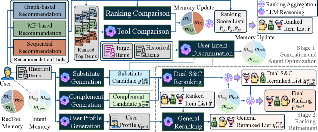
6.3.1. Preliminaries
Problem Formulation
Let and denote the complete item pool and the set of users in the dataset, respectively. Specifically, each user is associated with a behavior sequence , where denotes the -th item interacted with by user . Furthermore, each item is accompanied by its corresponding textual description. For simplicity, we use to denote the list of textual descriptions for all items from item sequences . Given a user’s historical interaction sequence and the corresponding item description list, the goal is to predict the next item that the user is likely to interact with. This is commonly framed as a ranking task: each user agent is expected to assign higher scores to items that better match the user’s preferences, as inferred from both behavioral patterns and textual semantics. The final output is a ranked list of tailored to this user . For clarity, the subscript will be omitted in subsequent sections, given that each user agent functions independently.
Recommendation Tools
AgentDR is an agent-based framework compatible with different recommendation methods as tools under the minimal assumption that they produce a full-ranking list of items. These recommendation methods are treated as tools and collectively form the tool set . For a broad coverage of recommendation modeling strategies, we utilize three types of recommendation tools to perform recommendation tasks within AgentDR: (i) a graph-based model with output ranking score list ; (ii) a sequential recommendation model with output ranking score list ; and (iii) a MF-based model with output ranking score list . All these output lists are in . The three model instances used in this work are elaborated in Sec. 6.4.1. These models are pretrained on the first items, denoted as .
Framework Overview
The overall framework of AgentDR is depicted in Fig. 6.2. Each user agent is equipped with a profile and two memory modules (Sec. 6.3.2). The agent optimization begins with prompting the LLM to generate potential substitutes and complements for each user (Sec. 6.3.3). Next, the agent memory is optimized by distinct reflection mechanisms. The RecTool memory is optimized through personalized tool selection (Sec. 6.3.4), while the intent memory is optimized via user intent discrimination (Sec. 6.3.5). Finally, the top items from the aggregated rankings of multiple tools are refined by dual S&C reranking module (Sec. 6.3.6).
6.3.2. User Profile and Memory
User Profile Summarization
Explicit user profiles are usually unavailable in most public real-world datasets. Thus, we summarize the user profile from users’ historical interactions by leveraging the reasoning capabilities and world knowledge of LLMs. To be concrete, we prompt the LLM to summarize the user’s preference from descriptions of historical items for each user. And this preference is used as the user profile of each user agent:
| (6.1) |
where represents the LLM prompted to transform these texts into a coherent user profile. Due to limited space, the details of all prompts used in AgentDR are shown in Appendix 6.3.7.
User Agent Memory
In contrast to static user profiles, memories are employed to enable user agents to dynamically maintain context in response to agent optimization based on consecutive user behaviors. We equip each user agent with two compact memory modules: RecTool memory and intent memory. RecTool memory is a list of weights reflecting the suitability of each recommendation tool for each user, where is the number of recommendation tools. For LightGCN, SASRec and SimpleX deployed in this paper, we denote their weights in memory as , and , respectively. Similarly, intent memory contains three weights , and , denoting the user’s intent toward substitutes, complements, and other regular items, respectively. In AgentDR, RecTool memory is optimized by tool comparison and ranking comparison modules, detailed in Sec. 6.3.4 and 6.3.4. Intent memory is optimized by a intent discrimination module in Sec. 6.3.5.
6.3.3. Substitute and Complement Generation
A key challenge in enhancing personalization through substitution and complementarity is that such relationships are usually implicit in most datasets. Annotating these pairwise relationships with LLMs across a large number of items demands substantial computational resource, as it involves LLM inference calls. To mitigate computational overhead, AgentDR is designed to refine the top-ranked items from recommendation tools based on the substitutes and complements of the user’s latest preferences. The first step in this process involves generating potential substitutes and complements based on the user’s historical behaviors. Specifically, we prompt the LLM to generate a list of substitutes and a list of complements corresponding to the user’s recent interests:
| (6.2) | ||||
| (6.3) |
where denotes the most recent items visible to the recommendation tools in the sequence. The textual outputs and represent the generated lists of substitutes and complements, each of length . The functions and denote the prompt functions for generating substitutes and complements, respectively. From a complexity perspective, we reduce the LLM inference calls from for pairwise annotation to for personalized intent generation. This reduction substantially enhances scalability in real-world scenarios, such as online grocery involving millions of items.
6.3.4. Personalized Tool Selection
LLM-based Tool Comparison
Different users exhibit distinct behavior patterns and therefore benefit from different recommendation strategies. For instance, users who read books like Harry Potter often proceed with its sequels, making sequential recommendation models particularly effective. After finishing all the sequels, users may be interested in other fictions read by similar users, where collaborative filtering proves more suitable. To enable personalized tool selection for each user, AgentDR incorporates a tool comparison module that performs a holistic evaluation across multiple recommendation tools. In this module, the user agent is tasked with identifying the best tool based on recommended results of tools and ground-truth user preference:
| (6.4) |
where the output consists of binary indicators, each indicating whether tool provides the most relevant recommendation to the user’s preference among all tools in . For instance, indicates that the LLM has selected the graph-based tool as the best match to the user’s preferences. We use to represent the sequence of top- items ranked by recommendation tool . Subsequence refers to the most recent user-interacted items, which are withheld from training of recommendation tools and used as ground-truth signals to optimize the agent’s decision-making. The function is used to prompt the LLM to compare the input sequences and select the tool most aligned with the user’s preferences. After the LLM identifies the tool that best aligns with the user’s recent preferences, the tool weight in RecTool memory is updated accordingly:
| (6.5) |
where is the learning rate to update RecTool memory by this module. This tool comparison remains robust even when multiple tools appear effective. It addresses two key challenges: LLMs tend to agree with any reasonable recommendation, and single-domain datasets often make all outputs appear relevant.
Ranking Comparison and Aggregation
Besides the LLM-based tool comparison, we also compare the ranking performance based on the ranks of the most recent items in each tool:
| (6.6) |
where is the rank of the -th item from tool . This quantitative comparison yields a behavior-grounded signal reflecting how well each tool generalizes to unseen user preferences in . To obtain a comprehensive ranked list from all tools, a weighted sum is computed based on the updated RecTool memory:
| (6.7) |
where is the aggregated ranked item list. This simple yet effective rank-level ensemble strategy allows the agent to adaptively combine tools based on user-specific preferences. It also remains flexible and can be replaced by more complex list-wise combination mechanisms based on backpropagation. We implement and compare different ensemble strategies for ranking comparison and aggregation in Sec. 6.4.6.
6.3.5. Intent Discrimination
Understanding whether a user’s next interaction is driven by substitutes, complements, or general interest is crucial for tailoring recommendations that match their intent. Traditional ID-based recommenders struggle to distinguish these patterns, as they require nuanced semantic and functional reasoning that goes beyond co-occurrence statistics. With reasoning ability of LLMs, user agents can allocate attention to the most relevant pathway while ensuring coverage of diverse user behaviors, ultimately improving ranking robustness and relevance.
Substitution and Complementarity
Based on implicit item-item relationships, we first distinguish the user’s potential intent between substitutes and complements. Given the substitute list and the complement list generated in Sec. 6.3.3, we prompt the LLM to access the user’s interest in substitute or complements by comparing the generated lists with the ground-truth preferences:
| (6.8) |
where the output consists of two binary indicators and , which sum to 1. Each indicator reflects whether the corresponding list exhibits greater semantic and functional alignment with the user’s recent interactions. The function prompts the LLM to identify whether the substitute or complement list better matches the user’s recent preferences.
General Interest
In addition, a separate module is employed to assess the user’s general interest in items other than substitutes or complements, based on the user’s historical behavior:
| (6.9) |
where the output of prompt function is a binary indicator that equals 1 if the ground-truth user preferences do not exhibit clear substitute or complement patterns otherwise 0. This additional assessment ensures coverage of a broader spectrum of user behaviors, particularly in scenarios where the user’s preferences are not driven by substitution or complementarity. Identifying such general interest prevents the agent from overfitting to relational reasoning. This mitigates the risk of forcing item-item relational interpretations where they do not apply.
General Reranking
To account for general interests of users, a reranking module is introduced to refine the recommendations based on the semantic similarity between the candidate items and the users’ general preferences. For each user, the general preferences have been summarized from historical items as user profile in Sec. 6.3.2. Then the LLM is prompted to rerank the top items based on the user profile , denoted as function :
| (6.10) |
where is the top items in the aggregated ranked list , and is the reranked list containing item IDs.
Intent Memory Update
Similar to RecTool memory update in Eq. 6.5, the corresponding intent is updated based on by a learning rate :
| (6.11) |
This intent discrimination module equips the agent with a nuanced understanding of user preferences, enabling it to adaptively allocate attention to different reasoning modes and thereby guide downstream reranking in a more personalized manner.
6.3.6. Dual S&C Reranking
A dual substitute and complement (S&C) reranking module is proposed to comprehensively refine the recommendation results from tools in AgentDR. First, to leverage substitute and complement relation reasoning to enhance recommendation via world knowledge of the LLM, we design two independent reranking modules to refine the top-ranked items based on their semantic similarity with the candidate substitutes and complements for a user:
| (6.12) | ||||
| (6.13) |
where output and are the reranked lists containing the same items from . The LLM is prompted to rerank the top items from the aggregated ranked list based on their similarity to candidate substitutes and complements, denoted as .
Although the expected output of the reranked list is a sequence of exactly item IDs selected from the ID-only list , the LLM may hallucinate by generating invalid outputs such as non-existent item IDs or irrelevant text. To address this issue, we apply a rule-based hallucination filtering mechanism to ensure output validity. Specifically, only valid item IDs in the item corpus are retained in the reranked list. If the resulting list contains fewer than items, the remaining valid IDs from are appended to the end of the valid list in original order. This filtering mechanism is also applied in the aforementioned general reranking. This strategy completely eliminates the impact of hallucination on the ranking task, while incurring minimal computational overhead and requiring minimal reliance on the LLM’s instruction-following capability.
Subsequently, to account for individual variation in user intent, we personalize the combination of the two reranked ID lists using a ranking fusion function . This function takes the two ID lists and the corresponding intent weights as input:
| (6.14) |
where the ranking score of each item in this output list is computed as a weighted sum of the item’s positions in the two input lists:
| (6.15) |
where returns the rank position of item within a given list. This personalized fusion strategy allows the agent to balance substitute-based and complement-based reasoning in accordance with the inferred user intent, without incurring additional LLM inference overhead. The output list is further fused with the item list from general reranking:
| (6.16) |
where denotes the item list sorted by ranking scores in . The final recommendation output consists of the top- items ranked by their scores in . By incorporating the broader user preference profile as a form of regularization in the reranking process, the agent achieves a more robust recommendation strategy, particularly when relational cues among items are weak or absent.
6.3.7. Details of Prompts
6.4. Experiment
Through our extensive empirical analysis, we aim to address the following research questions.
-
•
RQ1: How does AgentDR perform in full-ranking recommendation compared to other baselines?
-
•
RQ2: Does incorporating LLM-based reasoning modules improve the semantic alignment of recommended items with user intent?
-
•
RQ3: How do different ranking aggregation strategies affect the performance of AgentDR?
-
•
RQ4: What is the individual contribution of each LLM-based module in AgentDR?
6.4.1. Experiment Settings
Datasets
We conduct experiments on three datasets: Instacart [30], Electronics and Sports [2]. Electronics and Sports are two sub-datasets from public XMarket dataset [2]. The statistics are summarized in Table 6.9.
| Dataset | Instacart | Electronics | Sports |
|---|---|---|---|
| User # | 6,987 | 4,966 | 10,873 |
| Item # | 2,108 | 14,635 | 4,306 |
| Interaction # | 5,105,339 | 91,819 | 55,990 |
| Density | 34.663% | 0.126% | 0.120% |
Tool selection
In this work, three pretrained recommendation models are used as tools within AgentDR: (1) LightGCN [18], (2) SASRec [31], and (3) SimpleX [44]. The simplicity of these tools allows us to validate the effectiveness of our framework without relying on complex architectures, aligning with our goal of maintaining a model-agnostic design.
Baselines
Besides the individual recommendation tools, we compare AgentDR with eight other baselines. First, other representative MF-based, diffusion-based, and sequential models are used as tradition recommendation baselines:
-
(4)
ENMF [9] introduces mathematical optimization that enable efficient full-data MF without negative sampling.
-
(5)
DiffRec [74] is a diffusion-based recommendation model that generates user interactions in a denoising manner.
-
(6)
FEARec [12] enhances self-attention with frequency-aware mechanisms to capture high-frequency signals and periodic patterns for sequential recommendation.
Both tools and recommendation baselines are pretrained on the first items of each user’s interaction sequence , following the standard training protocol of sequential recommendation for fair performance comparison. Following the previous works [98, 82], we also compare AgentDR with language-based approaches:
-
(7)
BM25 [57] ranks candidates according to their textual similarity with user historical interactions.
-
(8)
LLMRanker [21] uses the LLM as a zero-shot ranker, considering user sequential interaction histories as conditions.
In addition to these language-based baselines, we compare AgentDR against recommendation tools integrated with Retrieval-Augmented Generation (RAG). Specifically, the LLM is prompted to generate the top 20 items from the 50 candidates retrieved by each tool, conditioned on the user’s behavior sequence. The same hallucination filtering mechanism from Sec. 6.3.6 is applied for fair comparison. These baselines are represented as (9)-(11) RAGG/S/M for LightGCN, SASRec and SimpleX, respectively. Since most prior LLM-agent works [98, 75, 26, 97, 69, 82] are unable to rank all items in datasets, we exclude them from the comparison table instead of reporting trivially low full-ranking performance.
Evaluation Metrics
Recall@{10,20} and NDCG@{10,20} are adopted for ranking performance evaluation. Additionally, we propose a novel metric that measures the semantic vicinity of the predicted item list to the ground-truth item in the following Sec. 6.4.3.
Implementation Details
Since most item titles in the three grocery datasets used in experiments are self-explainable, we use titles as textual descriptions of items and remove all the items without titles. For each dataset, users’ interactions are chronologically organized based on timestamps to construct user behavior sequences. Since our framework delegates full-ranking sequential recommendation tasks to existing models, we follow the same data preprocessing strategy in previous works [18, 31, 44] to remove cold-start users and items.
The recommendation tools are pretrained on the first items of each user’s interaction sequence , following the standard training protocol in recommendation where models learn from early interactions and are evaluated on their ability to predict future behaviors. This setup ensures consistency across tools and enables fair performance comparison between our framework and other recommendation baselines. A grid search is applied for searching learning rates and in {1e-3, 5e-3, 1e-2, 5e-2, 1e-1}. To mitigate overfitting, each learning rate is multiplied by a decay factor of 0.8 after every optimization epoch. The number of historical items used for substitute and complement generation is set to 10. Following the training scheme in sequential recommendation, the number of target items is set to 1 during optimization. Since the evaluation metrics consider at most top 20 items, the number of reranking candidates is fixed at 20. All experiments are conducted using the Phi-4 language model, deployed locally with vLLM on eight Tesla V100 GPUs, each with 32 GB of VRAM. The temperature is set to 0 to ensure deterministic outputs. Aside from the complexity of the recommendation tools described in Sec. 6.3.1, the quantized version of a single Phi-4 model requires less than 12 GB of VRAM. Following prior LLM-agent works [98, 69, 26], we train the recommendation tools on the entire training set, and randomly sample 160 agents for optimization on each dataset.
6.4.2. Cost Analysis
The total LLM API calls in AgentDR consist of three parts: generation, agent optimization, and reranking. Generation (Eq. 6.1, Eq. 6.2 and Eq. 6.3) and reranking (Eq. 6.10, Eq. 6.12, and Eq. 6.13) contain 6 calls per user. Each epoch in agent optimization contains 3 calls (Eq. 6.4, Eq. 6.8 and Eq. 6.11) per user. Hence, the total number of calls is where and are the numbers of users and epochs, respectively. With all the agent memory updated, AgentDR takes less than 1 second to generate the final ranking list for each user. We acknowledge that LLM-based agents generally have higher inference latency than embedding-based recommendation models, but they are still practical for offline ranking or secondary-stage recommendation pipelines.
6.4.3. Semantic Vicinity Evaluation: VDCG
Unlike ID-based recommenders, language-based methods prioritize semantic similarity over behavioral patterns. As a result, the item lists they generate may better reflect a user’s interests, even if the exact target items are absent. For example, for a user interested in a black baseball helmet, a list of baseball helmets in other colors is clearly more relevant than a list of bicycle helmets, despite both yielding zero recall and NDCG. To better capture the semantic vicinity to the user intent, we propose a new LLM-based evaluation metric, Vicinity-DCG (VDCG), which jointly assesses the semantic alignment and ranking correctness of the predicted item list.
Specifically, we prompt the LLM to rate how well each item in the recommended list aligns with the ground-truth item in terms of relevance, usefulness, and user interest. The rating scale ranges from 0 to 9, where 0 indicates an entirely unrelated item, and 9 represents a perfect semantic match between the item descriptions. The prompts for VDCG evaluation is shown in Table 6.10. These ratings are treated as relevance scores to compute the DCG [5] for the list. For normalization, we divide by a customized ideal DCG, calculated from a synthetic ideal list of scores: , where is the maximum relevance score minus 1, and is the length of the list. This ideal score distribution reflects the empirical tendency of the LLM to assign higher scores to only a few semantic-related items, following an approximately exponential decay. VDCG thus captures both the semantic vicinity and ranking quality of the predicted list with respect to the user’s true intent.
6.4.4. RQ1: Ranking Performance Comparison
| Dataset | Instacart | Electronics | Sports | |||||||||
|---|---|---|---|---|---|---|---|---|---|---|---|---|
| Metric | R@10 | R@20 | N@10 | N@20 | R@10 | R@20 | N@10 | N@20 | R@10 | R@20 | N@10 | N@20 |
| LightGCN | 0.0500 | 0.1188 | 0.0221 | 0.0398 | 0.1188 | 0.1313 | 0.0734 | 0.0765 | 0.1438 | 0.1625 | 0.0997 | 0.1040 |
| SASRec | 0.0875 | 0.1500 | 0.0395 | 0.0552 | 0.1188 | 0.1313 | 0.0635 | 0.0667 | 0.1000 | 0.1438 | 0.0554 | 0.0667 |
| SimpleX | 0.0313 | 0.0500 | 0.0180 | 0.0226 | 0.1000 | 0.1063 | 0.0761 | 0.0776 | 0.1375 | 0.1563 | 0.0951 | 0.0999 |
| ENMF | 0.1125 | 0.1750 | 0.0711 | 0.0797 | 0.1250 | 0.1312 | 0.0881 | 0.0897 | 0.1375 | 0.1438 | 0.1172 | 0.1187 |
| DiffRec | 0.1188 | 0.1563 | 0.0773 | 0.0806 | 0.1562 | 0.1688 | 0.0971 | 0.0981 | 0.1125 | 0.1188 | 0.0875 | 0.0890 |
| FEARec | 0.1063 | 0.1875 | 0.0639 | 0.0845 | 0.1250 | 0.1625 | 0.0627 | 0.0726 | 0.1313 | 0.1563 | 0.0732 | 0.0797 |
| BM25 | 0.0625 | 0.0875 | 0.0310 | 0.0370 | 0.1000 | 0.1313 | 0.0432 | 0.0514 | 0.1188 | 0.1250 | 0.0536 | 0.0552 |
| LLMRank | 0.0750 | 0.1000 | 0.0373 | 0.0436 | 0.1000 | 0.1250 | 0.0503 | 0.0565 | 0.0938 | 0.1063 | 0.0458 | 0.0488 |
| RAGG | 0.1125 | 0.1563 | 0.0480 | 0.0594 | 0.1125 | 0.1438 | 0.0715 | 0.0748 | 0.1125 | 0.1188 | 0.0750 | 0.0768 |
| RAGS | 0.0688 | 0.1063 | 0.0312 | 0.0405 | 0.1063 | 0.1188 | 0.0575 | 0.0605 | 0.1375 | 0.1625 | 0.0852 | 0.0913 |
| RAGM | 0.0750 | 0.1125 | 0.0335 | 0.0427 | 0.0875 | 0.1250 | 0.0517 | 0.0613 | 0.1125 | 0.1375 | 0.0823 | 0.0871 |
| AgentDR | 0.1563 | 0.2000 | 0.0796 | 0.0907 | 0.1688 | 0.2000 | 0.1180 | 0.1260 | 0.1750 | 0.2063 | 0.1247 | 0.1326 |
| Improv. | 33.50% | 6.67% | 2.98% | 7.34% | 8.07% | 18.48% | 21.52% | 28.44% | 21.67% | 26.95% | 6.40% | 11.71% |
Performance comparison between AgentDR and other baselines are shown in Table 6.11. The best and second-best performances are in boldface and underlined. We have the following observations:
-
•
AgentDR exhibits superior performance across all datasets. Even compared with more advanced and complex recommendation methods such as DiffRec, it has up to improvement in recall and up to improvement in NDCG. When compared to its own base recommendation tools such as SASRec, AgentDR consistently achieves at least improvement across all datasets. Since AgentDR’s performance is inherently dependent on the underlying tools, we expect greater performance gains when integrated with more advanced recommenders. We leave the exploration of stronger underlying tools in future works, as any resulting performance gain would not stem from our agent design and thus falls outside the scope of this study.
-
•
Language-only methods, such as BM25 and LLMRank, underperform compared to all recommendation baselines in most scenarios. This performance gap arises from their inability to effectively capture collaborative filtering signals or sequential behavioral patterns, both of which are essential for modeling personalized user preferences in large-scale item spaces. Lacking the ability to leverage historical interaction structures, these methods rely solely on surface-level text matching or general world knowledge, which limits their performance in full-ranking recommendation.
-
•
Compared to AgentDR, RAG-based methods such as RAGS, fail to consistently improve recommendation performance on all the datasets through the world knowledge of LLMs. This is due to two main reasons. First, relying on a single recommender as the retrieval model leads the LLM to generate top items from a potentially biased candidate set, even if the set is larger than that used in AgentDR. Second, the behavior sequences fed to the LLM consist of item descriptions. These descriptions usually contain noises, such as abbreviations or symbols, that carry little to no preference-relevant information. In contrast, AgentDR reranks a smaller but higher-confidence candidate set aggregated from multiple recommendation tools and reasons over a summarized user profile with inferred intent, enabling more comprehensive and nuanced recommendations.
6.4.5. RQ2: VDCG Comparison
The VDCG comparison is presented in Table 6.12. Compared to the ranking-based evaluation results in Table 6.11, RAG-based methods demonstrate a much more pronounced advantage in VDCG over the base recommenders. Given their overall lower recall, this advantage primarily stems from the stronger semantic vicinity of their recommended item lists to user interests. This demonstrates that the world knowledge embedded in LLMs can be effectively harnessed to generate semantically meaningful recommendations aligned with user intent, which is especially valuable when the target item is difficult to predict from historical behavior. Similarly, language-only methods such as BM25 and LLMRank achieve competitive VDCG scores despite poor recall and NDCG performance, especially in the Electronics and Sports where item descriptions tend to be longer and more semantically distinguishable. In contrast, the relatively low VDCG scores of interaction-based recommenders in these datasets reveal a limitation not captured by standard recall or NDCG metrics. In real-world e-commercial services, a lack of semantic relevance in recommended lists may undermine user trust more severely than occasional misses. Addressing this gap, AgentDR actively reasons over implicit item-item relations, resulting in the highest overall semantic and ranking alignment, as reflected by its VDCG.
In Fig. 6.3, we further examine the contribution of the LLM-based reasoning modules to VDCG by progressively removing them from the ranking refinement and agent optimization stages. The VDCG gap between AgentDR with and without the reranking modules highlights their importance in enhancing the semantic alignment between recommended item lists and user preferences. Notably, tool comparison consistently improves VDCG, as it increases the weight of the recommendation tool that produces the most semantically relevant item list during agent optimization.
| Dataset | Instacart | Electronics | Sports | |||
|---|---|---|---|---|---|---|
| Metric | V@5 | V@10 | V@5 | V@10 | V@5 | V@10 |
| BM25 | 0.2409 | 0.3220 | 0.2547 | 0.3188 | 0.5030 | 0.6075 |
| LLMRank | 0.2529 | 0.3224 | 0.2180 | 0.2932 | 0.4351 | 0.5341 |
| LightGCN | 0.3144 | 0.4039 | 0.1736 | 0.2344 | 0.4541 | 0.5702 |
| SASRec | 0.3143 | 0.4037 | 0.1748 | 0.2377 | 0.3898 | 0.4847 |
| SimpleX | 0.3091 | 0.3984 | 0.1735 | 0.2341 | 0.4551 | 0.5884 |
| RAGG | 0.3363 | 0.4537 | 0.2656 | 0.3338 | 0.4119 | 0.5220 |
| RAGS | 0.3300 | 0.4496 | 0.2569 | 0.3257 | 0.5095 | 0.6094 |
| RAGM | 0.3306 | 0.4460 | 0.2100 | 0.2874 | 0.4670 | 0.5768 |
| AgentDR | 0.4683 | 0.5743 | 0.3334 | 0.3846 | 0.5085 | 0.5743 |
| Improv. | 39.25% | 26.53% | 25.90% | 15.21% | -0.20% | -5.76% |
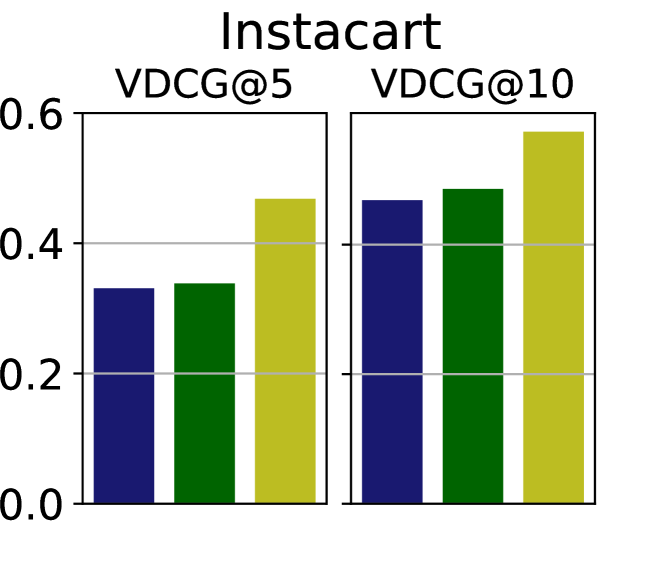
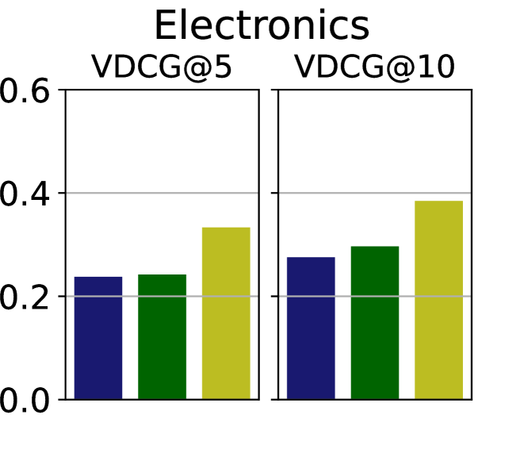
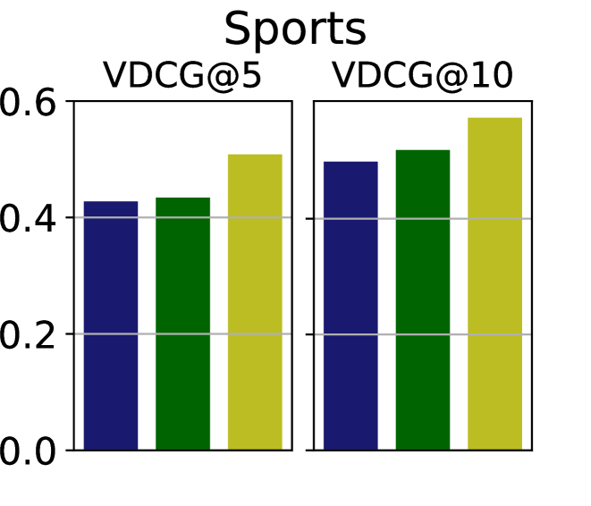
6.4.6. RQ3: Aggregation Strategy Analysis
Setup
The ranking comparison in Eq. 6.6 is a simple quantitative reflection mechanism to adjust RecTool weights for personalized tool suitability. This component is flexible and can be replaced with alternative learning-based ensemble methods. For instance, we can train a learnable vector as adaptive tool weights for all users. This learnable vector is then list-wise multiplied by the ranking score lists of each user to obtain the aggregated ranking score list . Supervised training is performed using ground-truth target items in training set, with a hinge loss as the objective. To integrate this with the original framework, we normalize this and from Eq. 6.7 and add them as an updated for the following reranking.
Results
Table 6.13 reports the performance of various ensemble strategies, both with and without all LLM-based reasoning modules from AgentDR. The original ranking comparison mechanism and the alternative linear model described above are denoted as RC and LR, respectively. Additionally, we explore MLP with and without attention mechanisms to capture inter-tool dependencies, as alternatives to the original ranking comparison. These variants are denoted as Att and MLP in the table. The results demonstrate that the proposed reasoning modules consistently provide significant benefits across different ensemble strategies. Although AgentDR equipped with the simplest ranking comparison mechanism already surpasses most baselines in Table 6.11, substituting it with more expressive ensemble methods yields up to a 13.56 improvement in NDCG. This performance gain comes at the cost of increased computational complexity during backpropagation. Among the evaluated methods, the MLP with an attention mechanism achieves the best overall performance when integrated into AgentDR, which has the the highest number of learnable parameters. We leave the exploration of potential improvement from integrating more advanced ensemble methods in the future work.
| Dataset | Instacart | Electronics | Sports | |||
|---|---|---|---|---|---|---|
| Metric | N@10 | N@20 | N@10 | N@20 | N@10 | N@20 |
| Ensemble: RC | 0.0428 | 0.0633 | 0.0765 | 0.0874 | 0.0859 | 0.1009 |
| + AgentDR | 0.0701 | 0.0825 | 0.1149 | 0.1227 | 0.1221 | 0.1286 |
| Ensemble: LR | 0.0401 | 0.0638 | 0.0862 | 0.0893 | 0.0950 | 0.1060 |
| + AgentDR | 0.0796 | 0.0907 | 0.1136 | 0.1200 | 0.1246 | 0.1297 |
| Ensemble: MLP | 0.0397 | 0.0635 | 0.0754 | 0.0861 | 0.1009 | 0.1056 |
| + AgentDR | 0.0747 | 0.0858 | 0.1071 | 0.1166 | 0.1247 | 0.1328 |
| Ensemble: Att | 0.0473 | 0.0692 | 0.0787 | 0.0878 | 0.1000 | 0.1078 |
| + AgentDR | 0.0765 | 0.0844 | 0.1180 | 0.1260 | 0.1247 | 0.1326 |
6.4.7. RQ4: Ablation Study
Tool Comparison and Dual S&C Reranking
We investigate the contribution of the proposed tool comparison and dual S&C reranking modules, denoted as T and Dual S&C, respetively. We also explore the effect of replacing dual S&C by a mutually exclusive substitute or complement reranking based on intent memory of each user, denoted as S/C. The general reranking module is excluded from this study. The results are shown in Fig. 6.4. We observe that tool comparison improves performance in most settings, while it may degrade performance on Instacart. In this dataset, the semantic differences between the grocery food lists recommended by different tools are less pronounced, providing weaker signals for LLM-based tool selection. Moreover, the dual S&C reranking consistently outperforms reranking based on either substitutes or complements alone across all settings, highlighting the advantage of a more comprehensive reranking strategy.
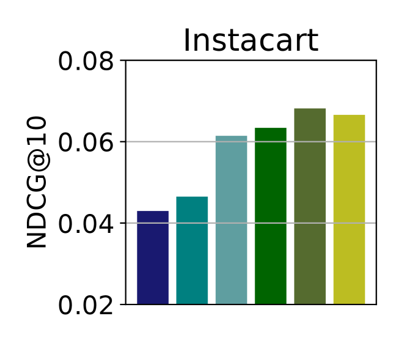
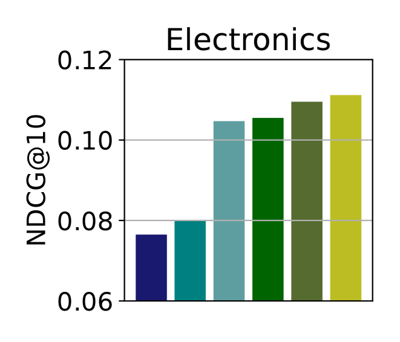
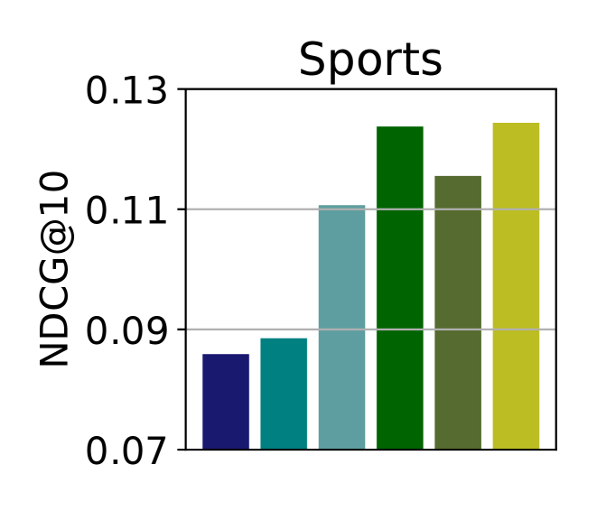
General Reranking
The general reranking module in Sec. 6.3.5 refines recommendation lists based on summarized user preferences, independent of substitution and complementarity signals. In Table 6.14, we compare the performance of AgentDR with and without this module under different reranking settings. The results show that general reranking consistently improves performance in most cases, and all best results across the three datasets are achieved with this module enabled, confirming the importance of general preference signals in complementing intent-specific reasoning. Since the corresponding intent identification module in Eq. 6.9 accounts for one-third of all inference calls during agent optimization, it can be optionally deactivated to save computational resources in this flexible agent framework, without sacrificing the general preference signals. In such cases, is set as a constant regularization coefficient shared across all users in the dataset.
| Dataset | Instacart | Electronics | Sports | |||
|---|---|---|---|---|---|---|
| Metric | N@10 | N@20 | N@10 | N@20 | N@10 | N@20 |
| S/C | 0.0614 | 0.0740 | 0.1047 | 0.1076 | 0.1107 | 0.1174 |
| + General | 0.0676 | 0.0817 | 0.1026 | 0.1120 | 0.1109 | 0.1190 |
| T+S/C | 0.0634 | 0.0794 | 0.1054 | 0.1136 | 0.1238 | 0.1320 |
| + General | 0.0626 | 0.0800 | 0.1055 | 0.1149 | 0.1244 | 0.1323 |
| Dual S&C | 0.0682 | 0.0805 | 0.1095 | 0.1174 | 0.1155 | 0.1203 |
| + General | 0.0684 | 0.0824 | 0.1050 | 0.1109 | 0.1190 | 0.1238 |
| T+Dual S&C | 0.0666 | 0.0793 | 0.1112 | 0.1211 | 0.1240 | 0.1307 |
| + General | 0.0701 | 0.0825 | 0.1149 | 0.1227 | 0.1221 | 0.1286 |
6.5. Chapter Summary
In this chapter, we propose a novel LLM-based agent framework, AgentDR, for full-ranking recommendation. It leverages the reasoning capabilities of LLMs to delegate the full-ranking task to multiple recommendation tools in a personalized manner. Furthermore, the commonsense world knowledge of the LLM is utilized to infer user intent regarding substitutes and complements, which is a challenging aspect for traditional models to capture effectively for recommendation enhancement. Extensive experiments are conducted with a proposed LLM-based evaluation metric VDCG to evaluate both semantic relevance and ordering correctness of recommendation results. Similar to ERLSC, a limitation of this framework is that substitution and complementarity relationships are more prevalent in domains like groceries than in others such as movies or music.
Chapter 7 Conclusion
This dissertation investigates how to enhance personalized RecSys by integrating graph learning with semantic knowledge and reasoning capabilities from LLMs. Traditional RecSys primarily rely on user–item interaction data, which often suffers from sparsity and limited semantic understanding. To address these limitations, this dissertation explores two complementary directions: modeling richer relational structures through hypergraph learning and incorporating semantic knowledge from LLMs. By combining structural collaborative signals with semantic reasoning, the proposed approaches improve recommendation performance while maintaining scalability and robustness. The main contributions of this dissertation are summarized as follows:
-
•
We develop a unified multitask pretraining framework UPRTH for recommendation based on task hypergraphs. It models diverse auxiliary tasks as hyperedge prediction problems and employs a transitional attention mechanism to selectively transfer useful knowledge, enabling effective integration of heterogeneous relational signals and alleviating data sparsity.
-
•
We introduce instruction-based hypergraph pretraining framework IHP to incorporate semantic task guidance into hypergraphs for recommendation. By encoding textual instructions with a pretrained language model and injecting them into hypergraph convolution, IHP aligns structural relations with semantic task descriptions and improves cross-domain knowledge transfer in recommendation.
-
•
We propose a graph–language alignment framework GLTA to integrate semantic knowledge from LLMs into recommendation models. It aligns graph-based user and item representations with token embeddings from pretrained language models, allowing recommendation models to inherit semantic knowledge while preserving the efficiency and determinism of ID-based item prediction.
-
•
We design an LLM-guided relational modeling method ERLSC to capture substitute and complementary item relations. It leverages LLMs to infer functional relations between items and integrates these signals into hypergraph convolution through adaptive hyperedge weighting, enabling recommendation models to emphasize semantically meaningful item groups.
-
•
We propose an LLM-agent framework for dynamic recommendation AgentDR. It treats the LLM as a high-level decision maker that coordinates multiple recommendation tools such as graph-based CF, and performs reasoning over item relations to refine candidate items, improving recommendation quality while maintaining scalability.
Besides the five works presented above, I have also contributed to several additional publications in the field of RecSys as the first author. In particular, CFAG [87] formulates the ranking-based group identification (GI) problem and addresses it by jointly modeling item interactions and group participation within a social tripartite graph. GTGS [86] further introduces a transitional hypergraph convolution layer that leverages users’ preferences over items as prior knowledge when modeling group preferences for the GI task. PCL [91] proposes a continual learning framework for RecSys, where position-wise prompts are used as external memory to preserve previously learned knowledge during sequential user modeling.
Taken together, these works outline the progression of my PhD research. My early work focuses on graph representation learning to model complex relations in RecSys that involve entities beyond the traditional user–item setting, such as groups in the GI task [87, 86]. Building upon this foundation, I then investigate how knowledge can be transferred across multiple relations and tasks through pretraining and finetuning paradigms for recommendation [89, 88, 91]. Finally, motivated by recent advances in LLMs, my research explores how to effectively incorporate the rich world knowledge encoded in LLMs to further enhance personalization and reasoning in RecSys [90, 85].
Looking ahead, an important yet underexplored direction is the development of user-owned recommendation agents. Unlike existing RecSys that operate within a single platform or dataset, a user-owned agent could aggregate information across multiple online services and reason about the most suitable choices for the user. Technically, earlier models lacked the capability to effectively integrate and reason over heterogeneous information sources at scale. From an ecosystem perspective, modern RecSys are largely developed by individual service providers whose primary objectives focus on business metrics such as user engagement and conversion, making platform-independent recommendation less aligned with existing incentives.
Recent advances in LLMs may begin to change this situation. Their ability to reason over diverse information sources makes it possible to build agents that assist users across platforms. At the same time, the cost of developing and deploying intelligent agents continues to decrease, and tools for building such systems are becoming increasingly accessible. These trends suggest that users may eventually be able to build or customize their own recommendation agents. If effective methods can be developed to support such user-owned agents, they may enable a new paradigm of recommendation that is more personalized and transparent, while also mitigating practical concerns associated with platform-centric RecSys, such as data privacy risks and information cocoons.
Ultimately, user-owned recommendation agents may represent a meaningful step toward giving users greater control over how information is filtered and recommended in the digital ecosystem. It is our hope that the ideas explored in this dissertation will inspire future research toward recommendation systems that not only understand user preferences, but also reason about information in a way that better serves users in an increasingly complex digital ecosystem.
Appendix A ACM Author’s Reuse Rights
Authors can reuse any portion of their own work in a new work of their own (and no fee is expected) as long as a citation and DOI pointer to the Version of Record in the ACM Digital Library are included.
Authors can include partial or complete papers of their own (and no fee is expected) in a dissertation as long as citations and DOI pointers to the Versions of Record in the ACM Digital Library are included. Authors can use any portion of their own work in presentations and in the classroom (and no fee is expected). 11 1 https://authors.acm.org/author-resources/author-rights
Bibliography
- [1] (2022) Neural sheaf diffusion: a topological perspective on heterophily and oversmoothing in gnns. In Proceedings of the 36th International Conference on Neural Information Processing Systems, NIPS ’22, Red Hook, NY, USA. Cited by: §3.3.2.
- [2] (2021) Cross-market product recommendation. In CIKM ’21: The 30th ACM International Conference on Information and Knowledge Management, Virtual Event, Queensland, Australia, November 1 - 5, 2021, G. Demartini, G. Zuccon, J. S. Culpepper, Z. Huang, and H. Tong (Eds.), pp. 110–119. Cited by: §5.1, §5.4.1, §6.1, §6.4.1.
- [3] (2020) Language models are few-shot learners. In Advances in Neural Information Processing Systems 33: Annual Conference on Neural Information Processing Systems 2020, NeurIPS 2020, December 6-12, 2020, virtual, H. Larochelle, M. Ranzato, R. Hadsell, M. Balcan, and H. Lin (Eds.), Cited by: §3.1, §3.1.
- [4] (2010) Music recommendation by unified hypergraph: combining social media information and music content. In Proceedings of the 18th ACM International Conference on Multimedia, MM ’10, New York, NY, USA, pp. 391–400. Cited by: §2.2.1.
- [5] (2005) Learning to rank using gradient descent. In Proceedings of the 22nd International Conference on Machine Learning, ICML ’05, New York, NY, USA, pp. 89–96. Cited by: §6.4.3.
- [6] (2024-06) Aligning large language models with recommendation knowledge. In Findings of the Association for Computational Linguistics: NAACL 2024, Mexico City, Mexico, pp. 1051–1066. Cited by: §4.1.
- [7] (2023) Multi-task item-attribute graph pre-training for strict cold-start item recommendation. In Proceedings of the 17th ACM Conference on Recommender Systems, RecSys 2023, Singapore, Singapore, September 18-22, 2023, J. Zhang, L. Chen, S. Berkovsky, M. Zhang, T. D. Noia, J. Basilico, L. Pizzato, and Y. Song (Eds.), pp. 322–333. Cited by: §2.2.3.
- [8] (2024) To copy, or not to copy; that is a critical issue of the output softmax layer in neural sequential recommenders. In Proceedings of the 17th ACM International Conference on Web Search and Data Mining, WSDM ’24, New York, NY, USA, pp. 67–76. Cited by: §5.4.1.
- [9] (2020) Efficient neural matrix factorization without sampling for recommendation. ACM Trans. Inf. Syst. 38 (2), pp. 14:1–14:28. Cited by: §6.1, §6.1, item (4).
- [10] (2020) Try this instead: personalized and interpretable substitute recommendation. In Proceedings of the 43rd International ACM SIGIR Conference on Research and Development in Information Retrieval, SIGIR ’20, New York, NY, USA, pp. 891–900. Cited by: §5.1.
- [11] (2022) M6-rec: generative pretrained language models are open-ended recommender systems. CoRR abs/2205.08084. Cited by: §2.1, §2.2.3, §6.1.
- [12] (2023) Frequency enhanced hybrid attention network for sequential recommendation. In Proceedings of the 46th International ACM SIGIR Conference on Research and Development in Information Retrieval, SIGIR 2023, Taipei, Taiwan, July 23-27, 2023, H. Chen, W. (. Duh, H. Huang, M. P. Kato, J. Mothe, and B. Poblete (Eds.), pp. 78–88. Cited by: §5.4.1, item (6).
- [13] (2019) Hypergraph neural networks. In The Thirty-Third AAAI Conference on Artificial Intelligence, AAAI 2019, The Thirty-First Innovative Applications of Artificial Intelligence Conference, IAAI 2019, The Ninth AAAI Symposium on Educational Advances in Artificial Intelligence, EAAI 2019, Honolulu, Hawaii, USA, January 27 - February 1, 2019, pp. 3558–3565. Cited by: §2.2.1, §2.5.1, §3.1.
- [14] (2025-04) An efficient context-dependent memory framework for LLM-centric agents. In Proceedings of the 2025 Conference of the Nations of the Americas Chapter of the Association for Computational Linguistics: Human Language Technologies (Volume 3: Industry Track), W. Chen, Y. Yang, M. Kachuee, and X. Fu (Eds.), Albuquerque, New Mexico, pp. 1055–1069. Cited by: §6.2.
- [15] (2022) Hypergraph learning: methods and practices. IEEE Transactions on Pattern Analysis and Machine Intelligence 44 (5), pp. 2548–2566. Cited by: §2.2.1.
- [16] (2022) Recommendation as language processing (rlp): a unified pretrain, personalized prompt & predict paradigm (p5). In Proceedings of the 16th ACM Conference on Recommender Systems, RecSys ’22, New York, NY, USA, pp. 299–315. Cited by: §2.1, §2.2.3, §4.1, §4.3.3, §6.1.
- [17] (2017) Inductive representation learning on large graphs. In Proceedings of the 31st International Conference on Neural Information Processing Systems, NIPS’17, Red Hook, NY, USA, pp. 1025–1035. Cited by: §3.4.4.
- [18] (2020) LightGCN: simplifying and powering graph convolution network for recommendation. In Proceedings of the 43rd International ACM SIGIR conference on research and development in Information Retrieval, pp. 639–648. Cited by: §2.2.3, §2.4.4, §2.5.1, §3.4.1, §4.2, §4.4.1, §5.2.2, §5.4.1, §6.1, §6.1, §6.2, §6.4.1, §6.4.1.
- [19] (2025) LinkGPT: leveraging large language models for enhanced link prediction in text-attributed graphs. In Proceedings of the 34th ACM International Conference on Information and Knowledge Management, CIKM ’25, New York, NY, USA, pp. 843–853. Cited by: §6.1.
- [20] (2025) Retrieve, annotate, evaluate, repeat: leveraging multimodal llms for large-scale product retrieval evaluation. In Advances in Information Retrieval: 47th European Conference on Information Retrieval, ECIR 2025, Lucca, Italy, April 6–10, 2025, Proceedings, Part I, Berlin, Heidelberg, pp. 149–163. Cited by: §5.1.
- [21] (2024) Large language models are zero-shot rankers for recommender systems. In Advances in Information Retrieval - 46th European Conference on Information Retrieval, ECIR 2024, Glasgow, UK, March 24-28, 2024, Proceedings, Part II, N. Goharian, N. Tonellotto, Y. He, A. Lipani, G. McDonald, C. Macdonald, and I. Ounis (Eds.), Lecture Notes in Computer Science, Vol. 14609, pp. 364–381. Cited by: §6.1, item (8).
- [22] (2022) GraphMAE: self-supervised masked graph autoencoders. In KDD ’22: The 28th ACM SIGKDD Conference on Knowledge Discovery and Data Mining, Washington, DC, USA, August 14 - 18, 2022, A. Zhang and H. Rangwala (Eds.), pp. 594–604. Cited by: 3rd item, §3.4.4.
- [23] (2020) Strategies for pre-training graph neural networks. In 8th International Conference on Learning Representations, ICLR 2020, Addis Ababa, Ethiopia, April 26-30, 2020, Cited by: 3rd item, §3.1, 1st item, §3.4.4.
- [24] (2020) GPT-GNN: generative pre-training of graph neural networks. In KDD ’20: The 26th ACM SIGKDD Conference on Knowledge Discovery and Data Mining, Virtual Event, CA, USA, August 23-27, 2020, R. Gupta, Y. Liu, J. Tang, and B. A. Prakash (Eds.), pp. 1857–1867. Cited by: §2.2.2, §3.1.
- [25] (2025) A survey on hallucination in large language models: principles, taxonomy, challenges, and open questions. ACM Trans. Inf. Syst. 43 (2), pp. 42:1–42:55. Cited by: §6.1.
- [26] (2025-04) Recommender ai agent: integrating large language models for interactive recommendations. ACM Trans. Inf. Syst.. External Links: ISSN 1046-8188 Cited by: §6.2, §6.4.1, §6.4.1, Table 6.1.
- [27] (2020) Dual channel hypergraph collaborative filtering. In Proceedings of the 26th ACM SIGKDD International Conference on Knowledge Discovery and Data Mining, KDD ’20, New York, NY, USA, pp. 2020–2029. Cited by: §2.2.1, §2.5.1, §3.4.1.
- [28] (2022) Multi-task GNN for substitute identification. In Companion of The Web Conference 2022, Virtual Event / Lyon, France, April 25 - 29, 2022, F. Laforest, R. Troncy, E. Simperl, D. Agarwal, A. Gionis, I. Herman, and L. Médini (Eds.), pp. 228–231. Cited by: §5.1.
- [29] (2021) Pre-training on large-scale heterogeneous graph. In KDD ’21: The 27th ACM SIGKDD Conference on Knowledge Discovery and Data Mining, Virtual Event, Singapore, August 14-18, 2021, F. Zhu, B. C. Ooi, and C. Miao (Eds.), pp. 756–766. Cited by: §2.2.2.
- [30] (2022) Kaggle datasets by yasser h. Note: Accessed: 2026-01-25 Cited by: §6.4.1.
- [31] (2018) Self-attentive sequential recommendation. In IEEE International Conference on Data Mining, ICDM 2018, Singapore, November 17-20, 2018, pp. 197–206. Cited by: §6.1, §6.2, §6.4.1, §6.4.1.
- [32] (2022) Not too little, not too much: a theoretical analysis of graph (over)smoothing. In Proceedings of the 36th International Conference on Neural Information Processing Systems, NIPS ’22, Red Hook, NY, USA. Cited by: §3.3.2, §4.4.2.
- [33] (2015) Adam: A method for stochastic optimization. In Proceedings of the 3rd International Conference on Learning Representations, Cited by: §2.4.4, §3.3.5, §4.3.3, §5.3.3.
- [34] (2016) Semi-supervised classification with graph convolutional networks. arXiv preprint arXiv:1609.02907. Cited by: 35.
- [35] (2016) Semi-supervised classification with graph convolutional networks. See Semi-supervised classification with graph convolutional networks, Kipf and Welling, Cited by: §2.5.1, §3.3.5.
- [36] (2025) Knowledge tagging with large language model based multi-agent system. In AAAI-25, Sponsored by the Association for the Advancement of Artificial Intelligence, February 25 - March 4, 2025, Philadelphia, PA, USA, T. Walsh, J. Shah, and Z. Kolter (Eds.), pp. 28775–28782. Cited by: §6.1.
- [37] (2024) Dynamic neural control flow execution: an agent-based deep equilibrium approach for binary vulnerability detection. In Proceedings of the 33rd ACM International Conference on Information and Knowledge Management, CIKM 2024, Boise, ID, USA, October 21-25, 2024, E. Serra and F. Spezzano (Eds.), pp. 1215–1225. Cited by: §6.2.
- [38] (2021) M6: multi-modality-to-multi-modality multitask mega-transformer for unified pretraining. In KDD ’21: The 27th ACM SIGKDD Conference on Knowledge Discovery and Data Mining, Virtual Event, Singapore, August 14-18, 2021, F. Zhu, B. C. Ooi, and C. Miao (Eds.), pp. 3251–3261. Cited by: §2.1.
- [39] (2023-01) Pre-train, prompt, and predict: a systematic survey of prompting methods in natural language processing. ACM Comput. Surv. 55 (9). External Links: ISSN 0360-0300 Cited by: §3.1.
- [40] (2020) Decoupled graph convolution network for inferring substitutable and complementary items. In Proceedings of the 29th ACM International Conference on Information & Knowledge Management, CIKM ’20, New York, NY, USA, pp. 2621–2628. Cited by: §5.1.
- [41] (2023) GraphPrompt: unifying pre-training and downstream tasks for graph neural networks. In Proceedings of the ACM Web Conference 2023, WWW ’23, New York, NY, USA, pp. 417–428. Cited by: §3.1.
- [42] (2025) On the role of weight decay in collaborative filtering: a popularity perspective. In Proceedings of the 31st ACM SIGKDD Conference on Knowledge Discovery and Data Mining V.2, KDD ’25, New York, NY, USA, pp. 1975–1986. Cited by: §6.1.
- [43] (2021) Learning to pre-train graph neural networks. In Thirty-Fifth AAAI Conference on Artificial Intelligence, AAAI 2021, Thirty-Third Conference on Innovative Applications of Artificial Intelligence, IAAI 2021, The Eleventh Symposium on Educational Advances in Artificial Intelligence, EAAI 2021, Virtual Event, February 2-9, 2021, pp. 4276–4284. Cited by: §2.2.2.
- [44] (2021) SimpleX: A simple and strong baseline for collaborative filtering. In CIKM ’21: The 30th ACM International Conference on Information and Knowledge Management, Virtual Event, Queensland, Australia, November 1 - 5, 2021, G. Demartini, G. Zuccon, J. S. Culpepper, Z. Huang, and H. Tong (Eds.), pp. 1243–1252. Cited by: §5.4.1, §6.1, §6.2, §6.4.1, §6.4.1.
- [45] (2021) UltraGCN: ultra simplification of graph convolutional networks for recommendation. In Proceedings of the 30th ACM International Conference on Information & Knowledge Management, CIKM ’21, New York, NY, USA, pp. 1253–1262. Cited by: §2.5.1.
- [46] (2025) GraFS: an integrated gnn-llm approach for inferring best functional substitute products. In Proceedings of the 34th ACM International Conference on Information and Knowledge Management, CIKM ’25, pp. 5047–5051. Cited by: §6.1.
- [47] (2019) Justifying recommendations using distantly-labeled reviews and fine-grained aspects. In Proceedings of the 2019 Conference on Empirical Methods in Natural Language Processing and the 9th International Joint Conference on Natural Language Processing, pp. 188–197. Cited by: §3.4.1, §4.4.1, §5.1, §6.1.
- [48] (2022-12) Large dual encoders are generalizable retrievers. In Proceedings of the 2022 Conference on Empirical Methods in Natural Language Processing, Y. Goldberg, Z. Kozareva, and Y. Zhang (Eds.), Abu Dhabi, United Arab Emirates, pp. 9844–9855. Cited by: Table 3.4.
- [49] (2016) Condensing steam: distilling the diversity of gamer behavior. In Proceedings of the 2016 internet measurement conference, pp. 81–95. Cited by: 50.
- [50] (2016) Condensing steam: distilling the diversity of gamer behavior. See Condensing steam: distilling the diversity of gamer behavior, O’Neill et al., Cited by: §2.5.1.
- [51] (2022) PNMTA: a pretrained network modulation and task adaptation approach for user cold-start recommendation. In Proceedings of the ACM Web Conference 2022, WWW ’22, New York, NY, USA, pp. 348–359. Cited by: §2.2.3.
- [52] (2023) Complementary product recommendation for long-tail products. In Proceedings of the 17th ACM Conference on Recommender Systems, RecSys ’23, New York, NY, USA, pp. 1305–1311. Cited by: §5.1.
- [53] (2020) GCC: graph contrastive coding for graph neural network pre-training. In KDD ’20: The 26th ACM SIGKDD Conference on Knowledge Discovery and Data Mining, Virtual Event, CA, USA, August 23-27, 2020, R. Gupta, Y. Liu, J. Tang, and B. A. Prakash (Eds.), pp. 1150–1160. Cited by: §2.2.2, 1st item, §3.1, 2nd item, §3.4.4.
- [54] (2019) Sentence-bert: sentence embeddings using siamese bert-networks. In Proceedings of the 2019 Conference on Empirical Methods in Natural Language Processing and the 9th International Joint Conference on Natural Language Processing, EMNLP-IJCNLP 2019, Hong Kong, China, November 3-7, 2019, K. Inui, J. Jiang, V. Ng, and X. Wan (Eds.), pp. 3980–3990. Cited by: Table 3.4.
- [55] (2024) Representation learning with large language models for recommendation. In Proceedings of the ACM on Web Conference, pp. 3464–3475. Cited by: §4.1, §4.4.1, §6.1.
- [56] (2012) BPR: bayesian personalized ranking from implicit feedback. arXiv preprint arXiv:1205.2618. Cited by: §2.4.4, §3.3.5, §5.3.3.
- [57] (2009) The probabilistic relevance framework: BM25 and beyond. Found. Trends Inf. Retr. 3 (4), pp. 333–389. Cited by: item (7).
- [58] (2025) Alleviating llm-based generative retrieval hallucination in alipay search. In Proceedings of the 48th International ACM SIGIR Conference on Research and Development in Information Retrieval, SIGIR ’25, New York, NY, USA, pp. 4294–4298. Cited by: §6.2.
- [59] (2024) AgentRE: an agent-based framework for navigating complex information landscapes in relation extraction. In Proceedings of the 33rd ACM International Conference on Information and Knowledge Management, CIKM 2024, Boise, ID, USA, October 21-25, 2024, E. Serra and F. Spezzano (Eds.), pp. 2045–2055. Cited by: §6.2.
- [60] (2023) Reflexion: language agents with verbal reinforcement learning. In Advances in Neural Information Processing Systems 36: Annual Conference on Neural Information Processing Systems 2023, NeurIPS 2023, New Orleans, LA, USA, December 10 - 16, 2023, A. Oh, T. Naumann, A. Globerson, K. Saenko, M. Hardt, and S. Levine (Eds.), Cited by: §6.2.
- [61] (2023-07) One embedder, any task: instruction-finetuned text embeddings. In Findings of the Association for Computational Linguistics: ACL 2023, A. Rogers, J. Boyd-Graber, and N. Okazaki (Eds.), Toronto, Canada, pp. 1102–1121. Cited by: §3.1, Table 3.4.
- [62] (2024) Is it really complementary? revisiting behavior-based labels for complementary recommendation. In Proceedings of the 18th ACM Conference on Recommender Systems, RecSys ’24, New York, NY, USA, pp. 1091–1095. Cited by: §5.1.
- [63] (2022) GPPT: graph pre-training and prompt tuning to generalize graph neural networks. In KDD ’22: The 28th ACM SIGKDD Conference on Knowledge Discovery and Data Mining, Washington, DC, USA, August 14 - 18, 2022, A. Zhang and H. Rangwala (Eds.), pp. 1717–1727. Cited by: §2.2.2, §3.1, §3.1.
- [64] (2023) All in one: multi-task prompting for graph neural networks. In Proceedings of the 29th ACM SIGKDD Conference on Knowledge Discovery and Data Mining, KDD ’23, New York, NY, USA, pp. 2120–2131. Cited by: §3.1.
- [65] (2024) GraphGPT: graph instruction tuning for large language models. In Proceedings of the 47th International ACM SIGIR Conference on Research and Development in Information Retrieval, pp. 491–500. Cited by: §3.1, §4.3.1, §4.3.3.
- [66] (2017) Attention is all you need. In Advances in Neural Information Processing Systems 30: Annual Conference on Neural Information Processing Systems 2017, December 4-9, 2017, Long Beach, CA, USA, I. Guyon, U. von Luxburg, S. Bengio, H. M. Wallach, R. Fergus, S. V. N. Vishwanathan, and R. Garnett (Eds.), pp. 5998–6008. Cited by: §2.1, §2.4.3.
- [67] (2019) Fine-grained spoiler detection from large-scale review corpora. In Proceedings of the 57th Conference of the Association for Computational Linguistics, pp. 2605–2610. Cited by: §3.4.1, §4.4.1.
- [68] (2022) Towards representation alignment and uniformity in collaborative filtering. In KDD ’22: The 28th ACM SIGKDD Conference on Knowledge Discovery and Data Mining, Washington, DC, USA, August 14 - 18, 2022, A. Zhang and H. Rangwala (Eds.), pp. 1816–1825. Cited by: §2.4.4, §2.5.1, §2.5.4, §3.4.1.
- [69] (2025-01) User behavior simulation with large language model-based agents. ACM Trans. Inf. Syst. 43 (2). External Links: ISSN 1046-8188 Cited by: §6.1, §6.2, §6.4.1, §6.4.1, Table 6.1.
- [70] (2022) Text embeddings by weakly-supervised contrastive pre-training. CoRR abs/2212.03533. Cited by: Table 3.4.
- [71] (2021) AFEC: active forgetting of negative transfer in continual learning. In Advances in Neural Information Processing Systems 34: Annual Conference on Neural Information Processing Systems 2021, NeurIPS 2021, December 6-14, 2021, virtual, M. Ranzato, A. Beygelzimer, Y. N. Dauphin, P. Liang, and J. W. Vaughan (Eds.), pp. 22379–22391. Cited by: §3.1.
- [72] (2021-08) Graph learning based recommender systems: a review. In Proceedings of the Thirtieth International Joint Conference on Artificial Intelligence, IJCAI-21, Z. Zhou (Ed.), pp. 4644–4652. Note: Survey Track Cited by: §1.1, §2.1, §2.2.3, §2.2.3.
- [73] (2020) MiniLM: deep self-attention distillation for task-agnostic compression of pre-trained transformers. In Advances in Neural Information Processing Systems 33: Annual Conference on Neural Information Processing Systems, Cited by: §3.3.4, Table 3.4, §4.4.1.
- [74] (2023) Diffusion recommender model. In Proceedings of the 46th International ACM SIGIR Conference on Research and Development in Information Retrieval, SIGIR 2023, Taipei, Taiwan, July 23-27, 2023, H. Chen, W. (. Duh, H. Huang, M. P. Kato, J. Mothe, and B. Poblete (Eds.), pp. 832–841. Cited by: §5.4.1, item (5).
- [75] (2024-06) RecMind: large language model powered agent for recommendation. In Findings of the Association for Computational Linguistics: NAACL 2024, K. Duh, H. Gomez, and S. Bethard (Eds.), Mexico City, Mexico, pp. 4351–4364. Cited by: §6.2, §6.4.1, Table 6.1.
- [76] (2024) LLMRec: large language models with graph augmentation for recommendation. In Proceedings of the 17th ACM International Conference on Web Search and Data Mining, pp. 806–815. Cited by: §4.1, §6.1.
- [77] (2023-12) Session-based recommendation by exploiting substitutable and complementary relationships from multi-behavior data. Data Min. Knowl. Discov. 38 (3), pp. 1193–1221. External Links: ISSN 1384-5810 Cited by: §5.1, §6.1.
- [78] (2021) Self-supervised graph learning for recommendation. In Proceedings of the 44th International ACM SIGIR Conference on Research and Development in Information Retrieval, SIGIR ’21, New York, NY, USA, pp. 726–735. Cited by: §2.2.3, 2nd item, §3.4.1.
- [79] (2024) AvaTaR: optimizing llm agents for tool usage via contrastive reasoning. In Advances in Neural Information Processing Systems, A. Globerson, L. Mackey, D. Belgrave, A. Fan, U. Paquet, J. Tomczak, and C. Zhang (Eds.), Vol. 37, pp. 25981–26010. Cited by: §6.1.
- [80] (2022) Hypergraph contrastive collaborative filtering. In SIGIR ’22: The 45th International ACM SIGIR Conference on Research and Development in Information Retrieval, pp. 70–79. Cited by: §2.2.1, §2.5.1, §3.4.1, §4.4.1, §5.4.1.
- [81] (2020) Product knowledge graph embedding for e-commerce. In Proceedings of the 13th International Conference on Web Search and Data Mining, WSDM ’20, New York, NY, USA, pp. 672–680. Cited by: §5.1.
- [82] (2025-07) IAgent: LLM agent as a shield between user and recommender systems. In Findings of the Association for Computational Linguistics: ACL 2025, W. Che, J. Nabende, E. Shutova, and M. T. Pilehvar (Eds.), Vienna, Austria, pp. 18056–18084. Cited by: §6.1, §6.2, §6.4.1, Table 6.1.
- [83] (2022-10-28) A recommendation algorithm based on a self-supervised learning pretrain transformer. Neural Processing Letters. External Links: ISSN 1573-773X Cited by: §2.2.3.
- [84] (2021) GraphFormers: gnn-nested transformers for representation learning on textual graph. In Advances in Neural Information Processing Systems, M. Ranzato, A. Beygelzimer, Y. Dauphin, P.S. Liang, and J. W. Vaughan (Eds.), Vol. 34, pp. 28798–28810. Cited by: §3.4.1.
- [85] (2026) AgentDR: dynamic recommendation with implicit item-item relations via llm-based agents. In Proceedings of the ACM Web Conference 2026, WWW ’26, New York, NY, USA, pp. 6230–6241. Cited by: §1.6, Chapter 6, Chapter 7, Preface.
- [86] (2023) Group identification via transitional hypergraph convolution with cross-view self-supervised learning. In Proceedings of the 32nd ACM International Conference on Information and Knowledge Management, pp. 2969–2979. Cited by: §2.2.1, §6.1, Chapter 7, Chapter 7.
- [87] (2023) Ranking-based group identification via factorized attention on social tripartite graph. In Proceedings of the Sixteenth ACM International Conference on Web Search and Data Mining, pp. 769–777. Cited by: §2.2.3, §6.1, Chapter 7, Chapter 7.
- [88] (2024) Instruction-based hypergraph pretraining. In Proceedings of the 47th International ACM SIGIR Conference on Research and Development in Information Retrieval, pp. 501–511. Cited by: §1.3, Chapter 3, §4.1, Chapter 7, Preface.
- [89] (2024) Unified pretraining for recommendation via task hypergraphs. In Proceedings of the 17th ACM International Conference on Web Search and Data Mining, pp. 891–900. Cited by: §1.2, Chapter 2, §6.1, Chapter 7, Preface.
- [90] (2025) Training large recommendation models via graph-language tokens alignment. In Companion Proceedings of the ACM on Web Conference 2025, WWW 2025, Sydney, NSW, Australia, 28 April 2025 - 2 May 2025, G. Long, M. Blumestein, Y. Chang, L. Lewin-Eytan, Z. H. Huang, and E. Yom-Tov (Eds.), pp. 1470–1474. Cited by: §1.4, Chapter 4, Chapter 7, Preface.
- [91] (2025) PCL: prompt-based continual learning for user modeling in recommender systems. In Companion Proceedings of the ACM on Web Conference 2025, WWW 2025, Sydney, NSW, Australia, 28 April 2025 - 2 May 2025, G. Long, M. Blumestein, Y. Chang, L. Lewin-Eytan, Z. H. Huang, and E. Yom-Tov (Eds.), pp. 1475–1479. Cited by: Chapter 7, Chapter 7.
- [92] (2023) A transformer-based substitute recommendation model incorporating weakly supervised customer behavior data. In Proceedings of the 46th International ACM SIGIR Conference on Research and Development in Information Retrieval, SIGIR ’23, New York, NY, USA, pp. 3325–3329. Cited by: §5.1.
- [93] (2024-11) Mitigating large vision-language model hallucination at post-hoc via multi-agent system. Proceedings of the AAAI Symposium Series 4, pp. 110–113. Cited by: §6.2.
- [94] (2021) Self-supervised multi-channel hypergraph convolutional network for social recommendation. In Proceedings of the web conference 2021, pp. 413–424. Cited by: 95.
- [95] (2021) Self-supervised multi-channel hypergraph convolutional network for social recommendation. See Self-supervised multi-channel hypergraph convolutional network for social recommendation, Yu et al., Cited by: §2.2.1, §3.3.3.
- [96] (2022-07) Improving hypergraph convolution network collaborative filtering with feature crossing and contrastive learning. Applied Intelligence 52 (9), pp. 10220–10233. External Links: ISSN 0924-669X Cited by: §2.2.1.
- [97] (2024) On generative agents in recommendation. In Proceedings of the 47th International ACM SIGIR Conference on Research and Development in Information Retrieval, SIGIR 2024, Washington DC, USA, July 14-18, 2024, G. H. Yang, H. Wang, S. Han, C. Hauff, G. Zuccon, and Y. Zhang (Eds.), pp. 1807–1817. Cited by: §6.1, §6.1, §6.2, §6.4.1, Table 6.1.
- [98] (2024) AgentCF: collaborative learning with autonomous language agents for recommender systems. In Proceedings of the ACM on Web Conference 2024, WWW 2024, Singapore, May 13-17, 2024, T. Chua, C. Ngo, R. Kumar, H. W. Lauw, and R. K. Lee (Eds.), pp. 3679–3689. Cited by: §6.1, §6.1, §6.2, §6.4.1, §6.4.1, Table 6.1.
- [99] (2022) Learning from substitutable and complementary relations for graph-based sequential product recommendation. ACM Trans. Inf. Syst. 40 (2), pp. 26:1–26:28. Cited by: §5.1, §6.1.
- [100] (2021) Language models as recommender systems: evaluations and limitations. In NeurIPS 2021 Workshop on I (Still) Can’t Believe It’s Not Better, Cited by: §2.1.
- [101] (2024) Zero-shot knowledge graph question generation via multi-agent llms and small models synthesis. In Proceedings of the 33rd ACM International Conference on Information and Knowledge Management, CIKM 2024, Boise, ID, USA, October 21-25, 2024, E. Serra and F. Spezzano (Eds.), pp. 3341–3351. Cited by: §6.2.
- [102] (2024) MemoryBank: enhancing large language models with long-term memory. In Thirty-Eighth AAAI Conference on Artificial Intelligence, AAAI 2024, Thirty-Sixth Conference on Innovative Applications of Artificial Intelligence, IAAI 2024, Fourteenth Symposium on Educational Advances in Artificial Intelligence, EAAI 2014, February 20-27, 2024, Vancouver, Canada, M. J. Wooldridge, J. G. Dy, and S. Natarajan (Eds.), pp. 19724–19731. Cited by: §6.2.
- [103] (2006) Learning with hypergraphs: clustering, classification, and embedding. In Advances in Neural Information Processing Systems 19, Proceedings of the Twentieth Annual Conference on Neural Information Processing Systems, Vancouver, British Columbia, Canada, December 4-7, 2006, B. Schölkopf, J. C. Platt, and T. Hofmann (Eds.), pp. 1601–1608. Cited by: §3.1.
- [104] (2021) Overcoming catastrophic forgetting in graph neural networks with experience replay. In Thirty-Fifth AAAI Conference on Artificial Intelligence, AAAI 2021, Thirty-Third Conference on Innovative Applications of Artificial Intelligence, IAAI 2021, The Eleventh Symposium on Educational Advances in Artificial Intelligence, EAAI 2021, Virtual Event, February 2-9, 2021, pp. 4714–4722. Cited by: §3.1.
- [105] (2020) S3-rec: self-supervised learning for sequential recommendation with mutual information maximization. In CIKM ’20: The 29th ACM International Conference on Information and Knowledge Management, Virtual Event, Ireland, October 19-23, 2020, M. d’Aquin, S. Dietze, C. Hauff, E. Curry, and P. Cudré-Mauroux (Eds.), pp. 1893–1902. Cited by: §2.2.3.
- [106] (2025-06) Mosaic of modalities: a comprehensive benchmark for multimodal graph learning. In Proceedings of the Computer Vision and Pattern Recognition Conference (CVPR), pp. 14215–14224. Cited by: §6.1.